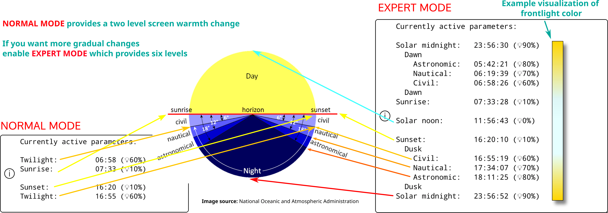
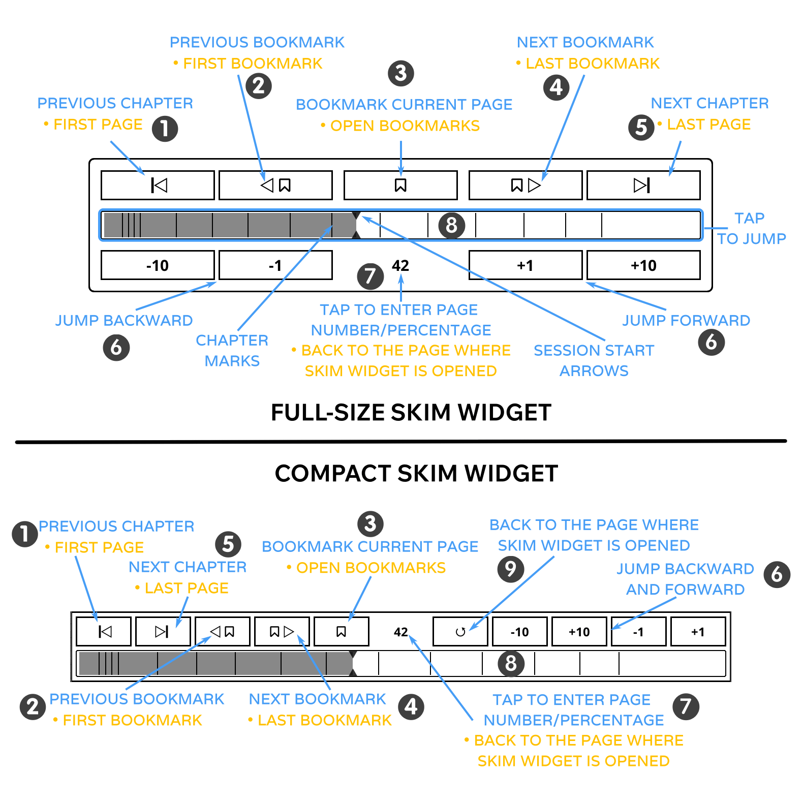
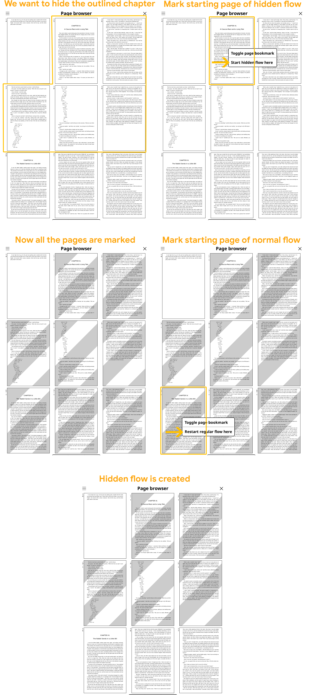

Vous êtes actuellement en train de lire la version Française du Guide d'utilisateur de KOReader. Aussi des volontaires traduisent ce guide dans d'autre langues. Nous avons plusieurs traductions en cours, comme vous pour le voir dans le status global de traduction ci-dessous. Mais nous ne renvoyons qu'aux langues traduites à plus de 50 % pour des raisons de facilité d'utilisation.
Plus de 80% traduit
Pour voir toutes les langues actuellement traduites et contribuer à la traduction du guide d'utilisation, rendez-vous sur la page de traduction Weblate de notre projet.
Statut général de la traduction du guide d'utilisation

Ce guide est conçu pour les écrans couleur. Si vous l’utilisez pour la première fois, nous vous recommandons fortement de le lire sur un ordinateur, une tablette ou un mobile. Cela permet d’afficher les éléments de l’interface surlignés en couleur ce qui vous simplifiera la vie lors de votre apprentissage de l’utilisation de KOReader. Vous pouvez aussi bien sûr le lire sur votre appareil e-ink mais l’expérience ne sera pas optimale.
Vous pouvez utiliser la fonction de recherche de votre navigateur pour trouver un sujet ou un mot-clé spécifique (généralement Ctrl + F). Si vous avez une suggestion ou une question concernant ce guide d'utilisation, vous pouvez écrire à cette discussion GitHub.
Certaines parties du texte de ce guide sont codées par couleur en fonction de leur catégorie :
PARTIES DE KOREADER (BLEU) |
Barre d'état, Plan du livre… |
PARCOURS DE MENU (VERT) |
MENU SUPÉRIEUR /  / Style de surlignage / Style de surlignage |
APPLICATIONS EXTERNES (VIOLET) |
Calibre, Readwise, KoHighlights ... |
Nous avons également prévu différents encadrés tout au long du guide pour vous informer ou vous avertir :
KOReader est développé et soutenu par des bénévoles du monde entier. Vous pouvez vous aussi participer à ce projet en :
- Correction de bugs et implémentation de nouvelles fonctionnalités
- Traduire le programme dans votre langue ou améliorer une traduction existante
- Aider les autres en partageant vos connaissances sur les forums ou dans les discussions et les tickets GitHub
Consultez la section Nous contacter pour les liens.
Dernière mise à jour du guide : 25/03/2025
- QUE POUVEZ-VOUS FAIRE AVEC KOREADER ?
- INFORMATIONS D'UTILISATION DE BASE
- APPRENDRE L'INTERFACE UTILISATEUR
- PARCOURIR VOTRE LIVRE
- PERSONNALISATION DE L'APPARENCE DU TEXTE
En dépit de son aspect minimaliste, KOReader est une application très puissante et personnalisable. Cette section est comme une table des matières de mode d'emploi. Si vous êtes un nouvel utilisateur, c'est le meilleur endroit pour commencer. Ici, vous pouvez lire ce dont KOReader est capable et apprendre à vous en servir en suivant ces  liens pour naviguer aux sections mentionnées.
- Mode de stockage de masse USB pour les appareils pris en charge 
- Stockage dans le Cloud (Dropbox/FTP/Webdav) avec les comptes appropriés 
- KOReader peut servir de serveur SSH, vous pouvez ainsi utiliser une application SFTP ou votre gestionnaire de fichier pour transférer directement vos fichiers 
- Avec le plugin Calibre, vous pouvez transférer les livres de votre Bibliothèque Calibre directement vers votre appareil KOReader via wifi 
- Avec le plugin de téléchargement d'informations , vous pouvez télécharger des entrées RSS et Atom sur votre appareil sous forme de fichiers HTML 
- Avec le plugin Wallabag, vous pouvez récupérer les articles de votre compte Wallabag (un service read-it-later similaire à Pocket) 
- Changer les polices (y compris les vôtres), tailles, contraste, gras, crénage, espacements de mots et de lignes, alignements, disposition des colonnes, marges... 
- Utilisez les puissants ajustements de style inclus ou écrivez les vôtres pour changer la façon dont s'affiche vos livres dans le moindre détail 
- Inverser les couleurs de l'écran pour le mode nuit manuellement ou automatiquement 
- Ajuster le ton du rétroéclairage automatiquement 
- Surlignez le texte avec différents styles et couleurs, placez des signets 
- Mode double-tape pour le surlignage plus long/académique
- Ajoutez des notes à l’aide d’un clavier personnalisable incluant des modificateurs diacritiques 
- Prenez des captures d’écran 
- Suivez vos statistiques de lecture avec notamment la progression de lecture, la plage de temps et la vue du calendrier
- Exportez vos notes et surlignages vers votre appareil aux formats texte, markdown, HTML, JSON ou Kindle clippings 
- Synchronisez avec des services en ligne comme Joplin, Readwise, Memos, Flomo et XMNote 
- Un puissant Explorateur de fichiers qui vous permet de copier, déplacer, renommer, créer, supprimer des fichiers et des dossiers, et d'effectuer des opérations groupées 
- Personnalisez votre bibliothèque selon vos préférences grâce à de nombreux modes d’affichage en mosaïque ou détaillés
- Ajoutez vos livres à vos favoris pour un accès rapide ou créez vos propres collections avec tri et filtres 
- Widget d'exploration pour passer rapidement d’une page, d’un chapitre ou d’un signet à l’autre 
- Plan du livre unique pour avoir une vue d'ensemble de votre livre incluant toutes vos notes et surlignages
- Explorateur de pages pour naviguer dans les pages comme une bobine de film 
- Explorateur de signets pour parcourir facilement vos surlignages et notes 
- Créez une table des matières alternative automatiquement ou manuellement si celle fournie avec votre livre ne vous convient pas 
- Masquez et excluez certaines parties de votre livre comme Annexe, Index, Références, etc., pour obtenir un comptage de pages plus précis 
- Un puissant système de gestes avec plus de 200 actions vous permet de contrôler chaque aspect de KOReader d’un simple tapotement ou balayage 
- Si vous disposez d’un clavier (interne, filaire ou Bluetooth), vous pouvez également attribuer des raccourcis clavier à ces actions 
- Ou créez vos propres menus avec vos actions préférées grâce au Menu rapide, et accédez-y d’un simple tapotement ou balayage 
- Créez des Profils pour contrôler chaque aspect de KOReader et automatiser des actions 
- Recherchez dans le document en sélectionnant ou en saisissant du texte (y compris les expressions régulières)
- Recherchez dans vos signets, surlignages et notes
- Consultez du texte dans Wikipédia ou dans les dictionnaires installés et traduisez-le par un appui long
- Traduisez toute la page en une seule fois dans plus de 130 langues
- Avec notre puissant système de plugins, vous pouvez même discuter du texte avec ChatGPT (après avoir installé le plugin) 
- KOReader peut se mettre à jour 
- Réduisez l'intensité ou éteignez lerétroéclairage de l'écran après un temps défini
- Configurer l'intervalle d'actualisation des pages pour vous adapter à différentes conditions de lecture
- Définissez votre propre écran de veille parmi de nombreuses options telles que images aléatoires, couverture de livre, lecture en cours, progression, etc.
- Définissez des alarmes de limite de charge de batterie pour éviter la décharge profonde/surcharge 
- Définissez une alerte d’utilisation de mémoire (utile pour les appareils à faible mémoire) et, si vous le souhaitez, redémarrez KOReader à l’atteinte de cette limite 
- Recadrez les marges automatiquement ou manuellement
- Remise en page des documents pour extraire le texte et lire plus facilement sur un petit écran
- Appliquez l’OCR aux documents sans calques de texte, comme les livres anciens numérisés 
- Différents types de zoom et sens de défilement des pages pour lire aisément les documents multi-colonnes comme les articles scientifiques
- Redressez automatiquement les documents inclinés, comme les livres anciens numérisés 
- Enregistrez vos surlignages directement dans les PDF afin de pouvoir les voir sans KOReader 
- Fonctionnalité spéciale de zoom par case pour lire les mangas
- Vitesse de rafraîchissement d'écran modifiable pour un équilibre parfait entre image fantôme et vitesse
- Ajoutez vos propres modifications de style CSS pour les livres 
- Système de patchs utilisateur qui vous permet de modifier les comportements fondamentaux de KOReader 
- Créez un code QR à partir de votre presse-papiers pour partager du texte et des liens vers d'autres appareils
- Affichez le code source HTML d’un document EPUB
- Créez et modifiez des fichiers texte sur votre appareil
- Ouvrez un émulateur de terminal et exécutez des commandes sur votre appareil
- Visionnez les statistiques d’utilisation du processeur, de la mémoire et de la batterie
KOReader prend en charge les fichiers PDF, EPUB, DJVU, MOBI, CBZ, CBT, DOCX, RTF, HTML, TXT, XPS, FB2, PDB, CHM et MD. Il peut également ouvrir les archives ZIP et afficher les fichiers image.
Il existe de nombreuses façons de transférer vos documents sur votre appareil. Notez que vous devrez peut-être redémarrer KOReader pour indexer les documents transférés (ou actualiser le répertoire si vous avez un Pocketbook/Android).
En plus de transférer des fichiers de la même manière qu’avec l’application de lecture intégrée, d’autres options sont disponibles selon votre appareil :
- Mode de stockage de masse USB dans KOReader : Ce mode est disponible pour les appareils KOBO et certains CERVANTES.
- Stockage cloud (Dropbox/FTP/Webdav) : Pour utiliser cette fonction, vous devez ajouter des comptes pour un serveur de stockage cloud via le menu ci-dessous. Le processus est expliqué via les boutons info dans le menu lors de l'ajout de comptes :
MENU SUPÉRIEUR (dans l'Explorateur de fichiers) /
 / Stockage en ligne
/ Stockage en ligne - Accès SSH/SFTP : KOReader peut agir comme un serveur SSH, auquel vous pouvez accéder depuis un ordinateur pour transférer des fichiers (disponible sur Kobo, Kindle, Cervantes). Vous pouvez utiliser une application SFTP (comme Filezilla) ou y accéder via votre gestionnaire de fichiers si votre système d’exploitation le permet. Consultez notre wiki pour le mode d’emploi et lisez également le message d’avertissement ci-dessous.
- Transfert via Calibre : Avec le plugin Calibre, vous pouvez envoyer des documents de votre bibliothèque Calibre directement vers vos appareils KOReader via une connexion wifi. Consultez notre wiki pour le mode d'emploi.
- Téléchargement d'informations : Avec ce plugin, vous pouvez télécharger les actualités de flux RSS et Atom sous forme de fichiers HTML. Consultez le wiki pour le mode d'emploi.
- Wallabag : Avec ce plugin, vous pouvez récupérer des articles depuis Wallabag, un service de lecture différée basé sur des serveurs tels que Pocket. Consultez la page wiki pour plus d'informations.
AVERTISSEMENT Soyez prudent si vous décidez d'utiliser la fonctionnalité SSH sans mot de passe, car cela permet un accès libre à votre appareil. Mais si vous utilisez un wifi personnel et activez le wifi de votre appareil pour une courte durée, ce risque est négligeable.
Les méthodes suivantes sont disponibles pour accéder à vos livres :
- Explorateur de fichiers - Section dédiée ici : Utilisation de l’Explorateur de fichiers
- Favoris - Une liste à laquelle vous pouvez ajouter vos livres en appuyant longuement dessus depuis l’Explorateur de fichiers
- Historique - Liste des livres que vous avez ouverts
- Collections - Listes de livres personnalisées que vous pouvez créer. Section dédiée ici : Collections
Vous pouvez modifier l'apparence de ces vues à partir de :
Si vous souhaitez modifier le nombre d’éléments visibles sur ces vues, regardez ici :
Vous pouvez attribuer des gestes à chacun de ces dialogues. Par exemple, pendant la lecture d’un livre, vous pouvez accéder à votre Historique ou à vos Favoris avec un geste et ouvrir un autre livre sans passer par l’Explorateur de fichiers.
Vous pouvez rechercher un livre dans le menu Historique par nom de fichier ou métadonnées du livre à partir du bouton menu hamburger en haut à gauche.
Vous pouvez également configurer KOReader pour qu’il démarre sur l’écran Favoris ou Historique au lieu de l’Explorateur de fichiers via :

Dans l’image ci-dessus, vous pouvez voir l’emplacement des zones tactiles par défaut de KOReader. Pour afficher le menu supérieur ou le menu inférieur, vous pouvez appuyer sur les zones indiquées. Vous pouvez également balayer vers le bas la zone supérieure pour afficher le menu supérieur. Sur les appareils non tactiles comme le Kindle 4, vous pouvez ouvrir le menu inférieur en appuyant sur le bouton correspondant à l’action ENTRÉE/OK.
Si vous souhaitez ouvrir les deux menus en même temps, vous pouvez définir la zone du menu supérieur pour ouvrir à la fois le menu supérieur et le menu inférieur en même temps via ce menu :
 / Touchers et gestes / Activation du menu
/ Touchers et gestes / Activation du menu
Les zones de touchers des coins peuvent être utilisées pour de nombreux types de gestes, notamment TAPER, DOUBLE-TAPER, TAPOTER AVEC DEUX DOIGTS et TOUCHER ET MAINTENIR.
Les zones PAGE PRÉCÉDENTE et PAGE SUIVANTE peuvent également être utilisées pour des gestes de DOUBLE TAPE en même temps.
La zone de la Barre d’état peut être touchée pour faire défiler les éléments de la barre d’état si un seul élément est visible. Si tous les éléments sont visibles, toucher la zone affichera ou masquera la barre d’état.
- Modification de la police* :MENU SUPÉRIEUR / / Police
- Agrandir la police :MENU INFÉRIEUR /

- Rendre la police plus épaisse :MENU INFÉRIEUR /

- Inverser les couleurs à l’écran (blanc sur noir) :MENU SUPÉRIEUR / / Mode Nuit
Vous pouvez également modifier d’autres options de formatage depuis le MENU INFÉRIEUR pour ajuster précisément l’apparence de votre texte. Ce sont simplement des astuces rapides pour bien commencer, bien sûr. Nous avons une section complète dédiée à la PERSONNALISATION DE L’APPARENCE DU TEXTE
Vous pouvez contrôler le rétroéclairage de votre écran via ce menu. Si vous avez un éclairage chaud (LED blanches normales + oranges) vous pouvez les contrôler séparément depuis cette boîte de dialogue. Vous pouvez également définir un geste pour cette boîte de dialogue :
/ RétroéclairageVous pouvez choisir une couverture de livre ou une image personnalisée comme écran de veille via ce menu :
/ Écran / Écran de veilleVous pouvez utiliser des fichiers JPG/PNG comme économiseur d'écran (les images en niveaux de gris correctement tramées offrent le meilleur rendu). Transférez les fichiers depuis votre ordinateur vers n'importe quel dossier de votre appareil. Sélectionnez ensuite ce dossier comme dossier d'économiseur d'écran via ce menu :
/ Écran / Écran de veille / ParamètresVeuillez consulter ce post du forum Mobileread pour des informations supplémentaires sur la préparation des images d’économiseur d’écran.
Si vous cherchez des informations sur les raccourcis clavier, cliquez ici pour accéder à cette section. Cette section explique uniquement l’utilisation du clavier.
- Appuyez en dehors du champ de saisie pour fermer le clavier, appuyez sur le champ de saisie pour afficher de nouveau le clavier
- Balayer vers le haut sur une touche pour saisir la lettre en majuscule (ou en minuscule si vous êtes déjà en mode majuscule)
- Vous pouvez modifier l’apparence du clavier :
MENU SUPÉRIEUR / / Appareil / Clavier / Paramètres d'apparence du clavier
- Vous pouvez sélectionner plus d'une disposition :
MENU SUPÉRIEUR / / Appareil / Clavier / Disposition du clavier
- Vous pouvez changer de disposition parmi celles que vous avez sélectionnées en appuyant sur l’icône
 sur le clavier
sur le clavier
Le clavier KOReader permet de saisir des caractères supplémentaires en maintenant une touche enfoncée. Les caractères supplémentaires les plus utilisés sont affichés ci-dessous. Vous pouvez appuyer longuement sur la touche dans la boîte grise pour obtenir les caractères qui l’entourent :

En plus du menu contextuel lors d'un appui long, vous pouvez également saisir ces caractères supplémentaires en balayant sur une touche. Dans l'exemple ci-dessous, vous pouvez balayer vers le haut sur la touche a pour saisir un A majuscule ou faire glisser dans d'autres directions pour saisir les caractères affichés. Notez que l'exemple montré inclut le menu contextuel complet à des fins de démonstration. Vous n'avez pas besoin d'ouvrir ce menu contextuel, vous pouvez directement balayer sur les touches. Une fois que vous vous serez habitué à l'emplacement des caractères supplémentaires, vous pourrez les saisir beaucoup plus rapidement de cette façon.

Si cette fonctionnalité interfère avec votre utilisation, vous pouvez la désactiver en décochant :
/ Appareil / Clavier / Balayer pour saisir des caractères supplémentairesDe plus, il existe quelques raccourcis pour faciliter la manipulation du texte. Vous pouvez appuyer longuement sur ces touches pour des actions supplémentaires :
- Flèche gauche - Déplace le curseur au début de la ligne
- Flèche droite - Déplace le curseur à la fin de la ligne
La touche retour arrière se comporte également différemment selon le geste de balayage effectué dessus :
- Appui : Supprimer un caractère
- Appui long : Supprimer toute la ligne
- Balayer vers la gauche : Supprimer une partie du mot à gauche du curseur
- Balayer vers le haut : Supprimer le mot entier
Pour plus d’informations, vous pouvez consulter la page wiki associée.
KOReader intègre également un clavier chinois pour saisir des caractères chinois simplifiés et traditionnels. Vous pouvez en savoir plus à ce sujet sur notre wiki.
Ce plugin vous permet d'ajuster la chaleur du rétroéclairage sur les appareils avec lumière naturelle (jaune/orange) et de définir le mode nuit (couleurs d'écran inversées — texte blanc sur fond noir) automatiquement selon un calendrier. Il peut contrôler les deux ou vous pouvez choisir le mode contrôle de la chaleur uniquement ou contrôle du mode nuit uniquement, afin de pouvoir ajuster l'autre manuellement.
Ce plugin est activé par défaut lors de l'installation de KOReader. Si pour une raison quelconque il n’apparaît pas dans le menu, vous pouvez l’activer ici :
/ Plus d'outils / Chaleur Automatique et Mode NuitVous pouvez ajuster automatiquement la chaleur du rétroéclairage frontal de deux façons :
Horaire fixe: Dans ce mode, la chaleur du rétroéclairage change en fonction du programme quotidien que vous définissez. Ce mode est statique et ne prend pas en compte la durée d'ensoleillement. Cet horaire reste le même tout au long de l'année.
Position du Soleil: Cette option calcule la position du Soleil pour votre localisation grâce aux informations de coordonnées et d'altitude que vous entrez. La chaleur du rétroéclairage est ajustée progressivement en fonction des informations relatives à la position du Soleil. Ce mode est dynamique. Le plug-in modifie le programme en fonction de la durée d'ensoleillement au cours de l'année.
Veuillez vous aider de cette image afin de vous familiariser avec les termes utilisés dans le plug-in :
- Accéder au menu Plugin : MENU SUPÉRIEUR / / Écran / Mode chaleur automatique et nuit
- Appuyez sur En fonction du programme fixe
- Retournez au menu précédent et tapez sur l'option Paramètres du mode Horaire fixe
- Définissez votre programme de transition thermique en réglant ici les horaires pour différents éléments. Reportez-vous à l'image ci-dessus pour obtenir des explications sur les éléments.
- Accéder au menu Plugin :
MENU SUPÉRIEUR / / Écran / Mode chaleur automatique et nuit
- Tapez sur Activer dans le menu, puis tapez sur En fonction de la position du Soleil
- Retournez au menu précédent et tapez surParamètres de localisation. Entrez vos coordonnées(requis) et votre altitude(optionnel) correctement, puis nommez votre localisation.
- Retournez au menu précédent et tapez sur l'option Paramètres de la chaleur et du mode nuit
- Définissez votre programme de transition thermique en réglant ici les horaires pour différents éléments. Reportez-vous à l'image ci-dessus pour obtenir des explications sur les éléments.
Vous pouvez voir votre programme actuel dans le menu Paramètres actifs.

Lors du paramétrage de la chaleur de la lumière pour différents horaires, vous pouvez aussi sélectionner le Mode Nuit, qui inverse les couleurs de l'écran au début de cet horaire. Si le rétroéclairage minimum est trop fort pour vous ou que vous préférez un fond de page sombre, vous pouvez activer cette fonctionnalité. Pour cela, dans la boîte de dialogue dessous, cochez la case Mode Nuit et tapez sur Activer.
Une fois activé, une icone en forme de lune va apparaître dans le menu à côté de cet horaire. Pour désactiver le mode nuit, il suffit de décocher la case correspondant au Mode Nuit pour cet horaire.

Cette fonctionnalité allume le rétroéclairage au moment du coucher du soleil et l'éteint au lever du soleil en fonction de vos Paramètres actifs pour ce plug-in. Vous pouvez contourner cette options en allumant/éteignant manuellement le rétroéclairage. Au prochain level/coucher de soleil, Chaleur Automatique se réactivera si nécessaire. Vous pouvez l'activer en sélectionnant Éteindre le rétroéclairage en journée dans ce menu.
Si vous voulez que votre rétroéclairage chaud change rapidement au lieu d'un changement progressif :
- Réglez le mode sur Horaire fixe en suivant les instructions ci-dessus
- Et ajustez les réglages comme l'image ci-dessous :

Comme vous pouvez le voir dans les paramètres ci-dessus, il n'y a qu'une minute de différence entre la transition jour-nuit. Donc la température de l'écran passe de 0 à 100 (ou inversement) en seulement une minute. Vous pouvez augmenter cet écart pour rendre la transition plus longue.
KOReader a une interface utilisateur simple, principalement noir et blanche parce que les gradients et différentes nuances de gris peuvent causer des flash et du ghosting sur les écrans e-inks, ce qui peut dégrader l'expérience de lecture.
KOReader a 2 interfaces principales : affichage de lecture et Explorateur de fichiers. Nous allons expliquer l' écran de lecture ici. L'Explorateur de fichiers est expliqué dans cette section du guide.
ÉCRAN DE LECTURE a deux menus :
- Le MENU SUPÉRIEUR regroupe les éléments du menu liés à l'usage général de KOReader. Vous accéderez à vos livres, préférences KOReader, plugins etc. ici.
- Le MENU INFÉRIEUR est axé sur les options de formatage de documents comme le poids/taille de la police de caractère, l'espace entre les lignes etc. Pendant l'ajustement de votre apparence de texte, vous interagirez surtout avec le MENU INFÉRIEUR.


L'image ci-dessus montre les éléments que vous pouvez voir sur votre liseuse quand vous lisez un livre :
- Icônes indicatrices : Ces icônes vous informent sur certains processus en cours et des états actuels. Elles s'affichent dans le coin supérieur gauche de votre écran lors de certaines opérations. Elles sont plus petites mais nous les avons agrandies pour plus de clarté. La rubrique suivantes explique ces icônes indicatrices en détail : Icônes indicatrices
- Barre d’état est une région très configurable où vous pouvez voir de nombreuses informations à propos de votre livre et de KOReader. Cliquez ici pour aller à la section : Cliquez ici pour plus de détails : Barre d’état
- Barre d'état alternative:En plus de laBarre d'étatpar défaut, nous avons uneBar d'état alternativequi apparait en haut de la page si vous l'activez. Cliquez ici pour plus de détails:Bar d'état
- Numéros de page de référence : Si l'éditeur de votre livre a inclus les numéros de pages de la version imprimée, il seront affichés de cette manière. Cliquez ici pour plus d'informations : Numérotation des pages et numéros de page de référence
- Types de surlignage : Vous pouvez voir les différents types de surlignage ici. Vous pouvez aussi surligner en couleur si votre liseuse le supporte. Cliquez ici pour aller à la section : Signets, Surlignage et Annotations
- Marqueur de note : L'icône du marqueur de note apparaît lorsque vous ajoutez une note à un surlignage. Il existe différents types de marqueurs de note. Cliquez ici pour plus d'informations : Signets, Surlignage et Notes
Koreader possède des icônes pour vous informer de certains processus en cours et de leurs états, comme vous pouvez le voir dans l'image ci-dessus. Vous pourrez les voir dans le coin en haut à gauche et votre écran lors de certaines opérations.
   
|
Icônes de rendu partiel Ce groupe d'icônes fait partie de la procédure de rendu partiel et vous verrez probablement ces icônes plus souvent que les autres. Ces icônes apparaissent lorsque vous modifiez les paramètres du menu inférieur. Cette fonctionnalité vous permet de prévisualiser les ajustements faits à l'apparence du texte bien plus vite en ne faisant que le rendu du chapitre en cours plutôt que celui du livre complet. De plus, changer l'orientation de l'écran est bien plus rapide grâce à cette fonctionnalité. Cette fonctionnalité est ACTIVÉE par défaut. Si nécessaire, elle peut être désactivée pour chaque livre (avec un appui court), ou pour tous (en restant appuyé) sur : MENU SUPÉRIEUR /
/ Document / Activer les rendus partielsAprès avoir confirmé vos modifications, l'ensemble du livre doit être ré-affiché. Il s'agit donc d'une procédure en plusieurs étapes. Ces icônes indiquent l'état d'avancement du rendu, comme expliqué ci-dessous : |
|
À ce stade, le document est rendu partiellement. Le nombre de pages, les informations en pied de page et de nombreux autres éléments sont inexacts. Vous pouvez voir à quoi ressemblent les nouveaux paramètres et les ajuster davantage. Vous pouvez également tourner les pages et utiliser les liens de saut dans cet état. |
|
Un rendu complet est en cours en arrière-plan. Vous pouvez toujours tourner les pages, cliquer sur les liens et modifier les paramètres. |
|
Le rendu complet est terminé, mais pas encore appliqué car KOReader attend que vous soyez inactif pour recharger le reste du livre (inactif = ne pas interagir avec l'appareil). Vous pouvez toujours tourner les pages, accéder aux liens, modifier les paramètres. |
|
|
Vous êtes resté inactif pendant un certain temps, KOReader est donc en train de recharger l'intégralité du document. À cette étape, KOReader est bloqué afin d'empêcher toute interaction. |
 |
Icône de surlignage Cette icône s'affiche lorsque vous êtes en mode Sélectionner et surligner. KOReader dispose d'un mode de surlignage supplémentaire qui vous permet de commencer un surlignage et de tourner les pages pour créer des surlignages longs pouvant s'étendre sur plusieurs pages. Vous pouvez en savoir plus à ce sujet dans la section MARQUE-PAGES, SURLIGNAGE ET NOTES de ce guide. Lorsque vous commencez un surlignage dans ce mode, cette icône s'affiche dans le coin pour vous rappeler que vous êtes toujours en mode de surlignage. Elle disparaît lorsque vous terminez votre mise en surlignage en sélectionnant la fin du passage ou lorsque vous annulez le surlignage (en appuyant à nouveau sur le début de votre surlignage ou sur cette icône de surlignage). |
 |
Icône Pokemon Ball Cette icône apparaît lorsque vous appuyez longuement sur un mot (intentionnellement ou accidentellement). KOReader dispose d'un menu long appui normal. Et d'un menu supplémentaire très long appui lorsque vous maintenez votre doigt appuyé pendant plus de 3 secondes. Cette icône signifie que vous avez activé ce menu appui très long. |
 |
Icône du mode Flip Cette icône apparaît lorsque vous appuyez sur le coin supérieur gauche si :
Ce mode affiche temporairement la page complète sans recadrement, redimensionné pour s'ajuster à votre écran. Vous pouvez tourner les pages dans ce mode. Pour partir de ce mode, cliquez sur cette icône. |
Les types de documents comme epub, mobi, htlm n'ont naturellement pas de numéros de page puisque ce sont des documents reformatables. Ce qui veut dire que ces documents peuvent être ajustés à la taille de l'écran et de l'orientation de l'appareil (contrairement aux documents pdf ou djvu par exemple, qui ont une taille de page fixe).
Si vous augmentez la taille de la police d'un document reformatable, votre nombre de page augmentera aussi, puisque que moins de texte tiendra sur une seule page. Cela pose parfois un problème parce que un surlignement fait sur la page 38 peut se retrouver sur la page 42 après l'ajustement de la police.
KOReader prend en charge la fonctionnalité Numéros de page de référence qui permet aux éditeurs d'intégrer les numéros de page des livres imprimés directement dans la version électronique. Lorsque vous activez cette fonctionnalité, KOReader ne calcule pas lui-même les numéros de page. Au lieu de cela, il affiche les numéros de page intégrés fournis par l'éditeur. Cela signifie que le numéro de page que vous voyez dans votre barre d'état correspond à la version imprimée du livre.
Avantages des numéros de page de référence :
- Les numéros de page de référence activent des citations correctes en correspondant les numéros de pages trouvés dans la version papier.
- Les numéros de page de référence peuvent aider pour la navigation, en particulier pour les lecteurs qui sont familiers avec la version imprimée d'un livre. Cela peut vous aider à trouver une passage spécifique ou citer plus facilement dans la version digitale.
- Puisque les livres digitaux peuvent être lus depuis plusieurs appareils et plateformes, chacun avec sa propre taille de police et paramètres d'affichage, les numéros de page peuvent changer de manière significative. Les numéros de page de référence constituent un point de vu consistent lors d'une lecture simultanée d'un même livre sur des appareils différents comme un e-reader et un téléphone.
Vous pouvez activer cette fonctionnalité depuis :
 / Page de référence/ Utiliser les Numéros de page de référence
/ Page de référence/ Utiliser les Numéros de page de référenceSi vous pouvez aussi cocher l'option Montrer la page de réference dans la marge dans le même menu, les nombres de cette page seront indiqués à coté du texte écrit en petit.
Veuillez noter que ce menu n'apparaît que si votre livre contient des numéros de page de référence intégrés.
KOReader dispose de deux barres d'état, une barre d'état inférieure qui est activée par défaut. Et une barre d'état alternative qui apparaît en haut de la page si vous l'activez. Cette barre d'état alternative n'est disponible que dans les documents reformatables (epub, html, docx, rtf, txt…).
La barre d'état inférieure est la plus récente et la plus activement maintenue. La Barre d'état alternative est un vestige des version antérieures de KOReader donc nous n'ajoutons plus de nouvelles fonctionnalités à celle-ci. Mais vous pouvez quand même activer la barre d’état alternative si vous la trouvez utile. Vous pouvez l'activer depuis :
/ Alt Status BarVous pouvez configurer la barre d’état alternative depuis ce menu :
/ Barre d'état / Barre d'état alternativeLes instructions fournies dans le reste de cette section concernent la barre d'état inférieure.
Vous pouvez configurer la barre d'état inférieure à partir de ce menu. N'hésitez pas à explorer le sous-menu PARAMÈTRES pour personnaliser votre barre d'état comme vous le souhaitez.
/ Barre d'étatDe nombreux éléments peuvent être affichés dans la barre d'état. Mais par défaut, un seul élément est affiché à la fois et vous devez appuyer sur la barre d'état pour passer d'un élément à l'autre. Si vous souhaitez afficher tous les éléments à la fois, activez cette option ici :
/ Barre d'état / Configurer les éléments / Afficher tous les éléments sélectionnés en même tempsSi vous avez activé l'option ci-dessus, vous ne pouvez pas masquer la barre d'état en appuyant dessus. Si vous souhaitez la masquer, vous devez attribuer ici un geste pour activer/désactiver la barre d'état :
Tri des éléments de la barre d'état :
/ Barre d'état / Configurer les éléments / Organiser les éléments dans la barre d'étatIl existe un élément spécial dans la barre d'état appelé Texte personnalisé. Cet élément permet d'afficher le texte de votre choix dans la barre d'état. Vous pouvez également utiliser cette fonctionnalité pour créer un séparateur entre les éléments de la barre d'état, comme vous pouvez le voir dans l'exemple ci-dessous :

- Activez d'abord cette option en appuyant brièvement dessus dans ce menu
MENU SUPÉRIEUR / / Barre d'état / Texte personnalisé : « KOReader »
- Appuyez ensuite longuement dessus à nouveau pour ouvrir ses paramètres. Entrez un caractère « espace » dans la première case et entrez le nombre de répétitions dans la deuxième case, ce qui déterminera la largeur de votre séparateur.
Vous pouvez choisir un autre caractère comme séparateur. Vous pouvez également déplacer cet élément comme les autres éléments de la barre d'état afin de modifier son ordre et d'ajuster vos groupes.
La barre de progression dans la barre d'état affiche normalement votre progression pour l'ensemble du livre. Mais elle peut également indiquer votre progression dans le chapitre actuel. Cela peut être utile, par exemple, si un livre comporte de nombreux chapitres courts. Dans ce cas, il peut être difficile de voir votre progression dans le chapitre actuel, et la barre d'état du chapitre peut donc être plus informative. Vous pouvez activer cette fonctionnalité à partir de ce menu :
/ Barre d'état / Barre de progression / Afficher la barre de progression du chapitre à la placeVous pouvez également attribuer un geste pour basculer entre les barres de progression normales et celles des chapitres. Vous trouverez cette action sous :
Nous ne donnerons ici qu'un aperçu des éléments de la structure du menu supérieur afin de vous familiariser avec le menu. Vous trouverez des informations détaillées dans les sections correspondantes de ce guide.

- NAVIGATION : Ce menu contient des éléments qui vous permettent de naviguer dans le livre que vous êtes en train de lire. Table des matières, Signets, Plan du livre...
- COMPOSITION : Ce menu contient des éléments qui vous permettent de modifier l'apparence de votre livre. Paramètres de police, ajustements de style...
- PARAMÈTRES : Ce menu contient les paramètres de KOReader et de votre appareil. Paramètres E-ink, lumière, gestes...
- OUTILS : Ce menu contient des plugins qui permettent d'étendre les fonctionnalités de KOReader.
 RECHERCHE : Ce menu contient des éléments liés à la recherche et à la consultation. Recherche de texte, dictionnaire, traduction, Wikipédia...
RECHERCHE : Ce menu contient des éléments liés à la recherche et à la consultation. Recherche de texte, dictionnaire, traduction, Wikipédia...- EXPLORATEUR DE FICHIERS : Ce bouton ouvre l'explorateur de fichiers, qui est l'interface permettant de gérer votre bibliothèque.
 PRINCIPAL : Ce menu contient des outils permettant d'accéder à vos livres, tels que l'historique, les favoris, les collections. Les éléments informations sur le livre, mettre à jour et quitter se trouvent également dans ce menu.
PRINCIPAL : Ce menu contient des outils permettant d'accéder à vos livres, tels que l'historique, les favoris, les collections. Les éléments informations sur le livre, mettre à jour et quitter se trouvent également dans ce menu.

Mode d'affichage : Si vous passez en mode continu, vous pouvez faire défiler le document comme une page Web. Ce mode est plus adapté aux écrans non E-ink (LCD, OLED). En mode continu, vous perdez les marges supérieure et inférieure, ce qui peut entraîner une coupure du texte sur la première et la dernière ligne de l'écran. Pour résoudre ce problème, vous pouvez activer le chevauchement des pages :
/ Superposition de pagesMode d'affichage : Cette option détermine la manière dont votre document est affiché par KOReader. La valeur par défaut est WEB et, en général, vous n'avez pas besoin de modifier ce paramètre. Lorsqu'un livre (ou une page Web enregistrée) est très complexe (largeurs ou marges spécifiées, marges négatives, flottants, etc.) et que la mise en page est mauvaise ou déborde de l'écran, vous pouvez essayer d'autres modes de rendu.
Zoom (ppp) : ce paramètre peut être considéré comme un facteur de zoom général pour le document (à l'exception de la taille de la police). À 96 ppp (qui est le paramètre par défaut), les images du document sont rendues dans leurs dimensions d'origine. En principe, vous utiliserez ce paramètre si vous souhaitez agrandir les images sans agrandir le texte.

Les paramètres Espacement des mots et Expansion des mots sont liés et déterminent l'apparence de votre texte lorsqu'il est justifié. Lorsque vous justifiez du texte, un espace est ajouté entre les mots afin que les deux bords de chaque ligne soient alignés avec les deux marges. Étant donné que le nombre de mots par ligne n'est pas toujours le même, dans un alignement justifié, le texte doit être compressé ou étendu pour remplir la ligne.
Espacement des mots : Dans quelle mesure les caractères espace d'une ligne de texte peuvent être compressés pour accueillir davantage de mots. Ce paramètre n'affecte pas les mots, il modifie uniquement l'espace entre eux.
Expansion des mots : si une ligne contient trop d'espaces blancs, quelle quantité peut être répartie entre les mots en les étirant ? Ce paramètre affecte l'apparence des mots. Si vous ne souhaitez pas que vos mots soient étirés, définissez ce paramètre sur none.
Vous pouvez essayer différents paramètres jusqu'à ce que le texte vous convienne, puis les définir comme paramètres par défaut via leurs boîtes de dialogue respectives.

Contraste et Épaisseur de police sont deux options que vous pouvez utiliser pour rendre votre texte plus gras (ou plus clair). Vous pouvez obtenir le même résultat avec l'une ou l'autre de ces options, mais elles utilisent des méthodes différentes pour y parvenir. Vous pouvez bien sûr les utiliser simultanément.
Les différences entre eux peuvent être résumées comme suit :
+ Ne modifie pas la largeur de la police, la longueur du livre reste la même
+ Ne nécessite pas de réaffichage du document, plus rapide
- Peut donner un mauvais rendu sur les écrans LCD ou à faible résolution
+ Utilisera les polices pondérées appropriées si elles sont installées
+ Rend mieux sur les écrans LCD ou à faible résolution
- Doit réafficher les polices, ce qui ralentit le processus
L'Indentation des polices ajuste votre texte pour une lisibilité maximale en fonction de la grille de pixels de votre écran. native utilise les instructions d'indentation internes de la police, auto utilise l'algorithme d'indentation de FreeType. auto est un choix plus sûr, car les fichiers de polices que vous avez installés peuvent contenir des instructions d'indentation problématiques. De plus, auto gère mieux le texte CJK. Vous pouvez essayer différents paramètres pour voir lequel convient le mieux à votre appareil.
Le crénage des polices ajuste l'espacement entre les lettres afin d'obtenir un résultat visuellement agréable. L'option par défaut est meilleur, qui peut être plus lente lors de l'ouverture des fichiers (selon votre appareil), mais qui prend mieux en charge les ligatures (voir l'exemple ci-dessous), les glyphes arabes joints et certains autres scripts. Si votre appareil est lent, vous pouvez essayer l'option bon, qui est plus rapide et peut tout de même donner un résultat correct avec les textes en alphabet latin occidental.


Barre d'état alternative active une barre d'état alternative qui n'est disponible que dans les documents reformatables (EPUB, HTML, DOCX, RTF, TXT…). Après l'avoir activée ici, vous pouvez configurer barre d'état alternative via :
/ Barre d'état / Barre d'état alternativeStyle intégré et polices intégrées déterminent si les styles et polices de l'éditeur intégrés au document seront utilisés (ou ignorés) pour le rendu du document. Il s'agit de commutateurs généraux activés/désactivés. Vous pouvez affiner davantage les réglages de votre document via :
/ Modifications de styleLe redimensionnement des images détermine la manière dont les images de votre document sont rendues. Meilleur offre un rendu plus agréable, mais est plus lent.
L'interface utilisateur et les options de KOReader peuvent varier en fonction du type de fichier que vous ouvrez. Il existe deux catégories principales de documents :
- Documents à mise en page fixe (pdf, djvu, fichiers image...)
- Documents reformatables (epub, html, docx, rtf, txt…).
KOReader dispose de nombreuses fonctionnalités, ce qui se reflète dans la complexité de son système de menus. Nous avons une fonctionnalité Recherche dans les menus qui permet de trouver rapidement des éléments de menu. Si vous vous souvenez du nom d'un élément de menu mais pas de son emplacement, vous pouvez utiliser cette fonctionnalité :
/ Aide / Recherche dans le menuVous pouvez également attribuer cette fonctionnalité à un geste ou l'ajouter à votre Menu rapide pour un accès plus rapide.
Dans le menu inférieur, si vous appuyez longuement sur le nom d'une option, vous pouvez voir son explication. |
|
Vous pouvez modifier la langue de l'interface via : MENU SUPÉRIEUR /
/ Langue |
|
Si vous souhaitez modifier la taille de l'interface utilisateur, il existe un paramètre DPI prévu à cet effet : MENU SUPÉRIEUR /
/ Écran / DPI de l'écranVous pouvez choisir une valeur dans le menu ou sélectionner DPI personnalisé pour entrer une valeur permettant un réglage précis : DPI plus élevé = interface plus grande. Notez qu'il existe également un paramètre Zoom (DPI) dans la barre inférieure. Celui-ci concerne uniquement les documents. Vous trouverez des explications à ce sujet dans la section suivante. |
Si vous appuyez longuement sur une option ou un élément de menu (épaisseur de police, interligne, etc.), vous pouvez définir sa valeur comme DEFAULT. La nouvelle valeur ne s'appliquera qu'aux livres ouverts à partir de maintenant. Les livres ouverts précédemment conserveront leurs paramètres. Vous pouvez identifier les valeurs par défaut grâce à une étoile (★) dans le menu ou à une bordure noire autour des indicateurs, comme illustré ci-dessous : 

|
Vous pouvez fermer les boîtes de dialogue en plein écran (Historique, Table des matières, Statistiques de lecture, etc.) en balayant vers le bas. (À l'exception de la fenêtre Signets. Vous pouvez utiliser n'importe quel geste de balayage multiple pour fermer celle-ci.) |
Vous pouvez prendre une capture d'écran en effectuant un long balayage diagonal avec votre doigt. Vous pouvez également prendre une capture d'écran en touchant les coins diagonaux opposés. Vous pouvez utiliser ce deuxième geste lorsque vous visualisez une image, par exemple. Si votre appareil dispose d'un clavier, vous pouvez également prendre une capture d'écran à l'aide du raccourci Alt + Maj + G. |
Si vous souhaitez ouvrir une page aléatoire d'un livre, nous proposons une action Aller à une page aléatoire que vous pouvez attribuer à n'importe quel geste. Elle se trouve dans la catégorie Lecteur du Gestionnaire de gestes. |

Dans les boîtes de dialogue contenant des boutons fléchés de réglage comme celle ci-dessus, vous pouvez appuyer longuement sur les boutons fléchés pour modifier la valeur par incréments plus importants. Vous pouvez fermer ce type de boîte de dialogue (non plein écran) en appuyant en dehors de sa fenêtre. Vous pouvez déplacer ce type de boîte de dialogue en maintenant son titre de fenêtre enfoncé et en le faisant glisser. Vous pouvez rendre ce type de boîte de dialogue semi-transparente en appuyant longuement sur le titre de la fenêtre (lorsque vous souhaitez voir le texte situé en dessous tout en ajustant une valeur). |
Création de nouveaux dossiers - Lorsque vous devez choisir un emplacement (stockage cloud, plugin de transfert vers les archives, plugin d'exportation), KOReader affiche un écran similaire à notre Explorateur de fichiers. Si vous souhaitez créer un nouveau dossier pendant la sélection :
|
KOReader prend en charge la recherche dans le dictionnaire dans les documents EPUB et PDF/DJVU numérisés. Pour voir la définition ou la traduction d'un mot dans le dictionnaire, il suffit d'appuyer longuement sur le mot. Appuyez longuement sur un mot pour afficher une boîte de dialogue dans laquelle vous pouvez également rechercher d'autres occurrences de ce mot dans le document ou le rechercher sur Wikipédia. |
Si vous souhaitez vérifier la date actuelle, vous pouvez appuyer sur l'horloge dans le MENU SUPÉRIEUR. |
KOReader propose trois types de défilement tactile. Vous pouvez y accéder à partir de :
/ Touches et gestes / Défilement- Défilement classique : ce mode fonctionne exactement comme le défilement sur votre téléphone/tablette.
- défilement Turbo : ce mode vous permet de faire défiler plus rapidement qu'avec le défilement classique. Vous pouvez également faire défiler plusieurs pages sans lever le doigt. La distance parcourue est proportionnelle à la distance parcourue par votre doigt après avoir lancé le défilement.
- Défilement au relâchement : ce type de défilement est plus adapté aux écrans à encre électronique. Contrairement aux autres types de défilement, ce mode ne rafraîchit pas continuellement la page pendant le défilement. Il fonctionne comme le défilement classique, mais les étapes intermédiaires ne sont pas affichées. Ainsi, lorsque vous faites défiler avec votre doigt puis relâchez, la page passe directement à cette position. Cela est particulièrement utile pour repositionner et ajuster l'affichage si votre livre contient des images ou des tableaux et que vous souhaitez les voir dans leur intégralité.
Cette fonctionnalité utile fonctionne comme le bouton Retour de votre navigateur. Lorsque vous passez à une autre partie du livre à l'aide du widget Skim, de la liste des Signets, du Plan du livre, etc., KOReader mémorise votre emplacement précédent. Cela est utile, par exemple, si vous suivez un lien interne ou une référence. D'une simple pression, vous pouvez revenir à l'endroit d'où vous venez. Vous pouvez accéder à cette fonctionnalité à partir de :
/ Retour à l'emplacement précédentVous pouvez également avancer à partir du même menu. Cette fonctionnalité est attribuée au geste Multiple balayages . Vous pouvez l'attribuer à un autre geste si vous le souhaitez (comme appuyer sur un coin) ou l'ajouter à votre Menu rapide.
KOReader effectue normalement un rafraîchissement complet des pages contenant des images (ce que vous pouvez observer sous la forme d'un flash noir). Cela permet d'éliminer les résidus et les images fantômes de la page précédente. Mais cela peut ne pas être nécessaire selon votre appareil et vos préférences personnelles. Vous pouvez désactiver cette fonction de rafraîchissement automatique ici :
/ Écran / Paramètres E-ink / Taux de rafraîchissement complet / Toujours clignoter sur les pages contenant des imagesVous pouvez également désactiver le clignotement noir de l'interface utilisateur à partir d'ici si cela vous dérange :
/ Écran / Paramètres E-inkIl existe différentes façons de parcourir votre document dans KOReader, chacune ayant ses propres avantages. Vous pouvez utiliser :
- Widget Skim
- Plan du livre
- Explorateur de Page
Skim Widget est un outil de navigation très fonctionnel. Vous pouvez l'utiliser pour :
- Accédez à n'importe quelle partie de votre livre en appuyant directement sur la barre de progression ou en saisissant le numéro de page
- Naviguer entre les chapitres
- Naviguer entre les signets
Comment ouvrir le widget Skim :
- Appuyez longuement sur la zone Barre d'état en bas de votre écran
- Dans ce menu : MENU SUPÉRIEUR / / Parcourir le document
- Vous pouvez lui attribuer un geste
- Vous pouvez l'ajouter à votre Menu rapide
Commençons par examiner rapidement le schéma ci-dessous. Vous remarquerez que nous avons deux widgets Skim différents. Ils ont les mêmes fonctions, seule leur taille diffère :
- WIDGET SKIM PLEIN ÉCRAN : Il s'agit du widget skim par défaut qui s'affiche lorsque vous installez KOReader. Il est plus grand que le widget skim compact, ce qui rend les boutons plus faciles à utiliser. Ce widget s'ouvre au centre de l'écran.
- WIDGET SKIM COMPACT : Il s'agit de la version allégée du widget skim par défaut. Il peut s'avérer plus utile si vous souhaitez mettre en évidence certains éléments, par exemple. Étant donné que ce widget est plus petit et s'ouvre en haut ou en bas de l'écran, il n'obstrue pas autant la page que le widget par défaut.
Si vous souhaitez utiliser le widget compact skim, vous pouvez le faire en choisissant Haut ou Bas dans ce menu :
/ Navigation / Positionner la boîte de dialogue Skim :ASTUCE Les deux widgets skim sont déplaçables. Vous pouvez les déplacer en appuyant sur une zone vide du widget et en le faisant glisser. Vous pouvez également rendre ces boîtes de dialogue semi-transparentes en appuyant longuement sur une zone vide du widget. Mais la semi-transparence n'est activée que dans sa position initiale. Une fois déplacé, un appui long le ramène à sa position initiale.
Revenons maintenant au schéma. Vous pouvez voir que certains boutons comportent deux descriptions de couleurs différentes : bleu et orange. Cela signifie que ce bouton a deux fonctions : une action pression normale et une action pression longue. Si vous appuyez normalement, il exécutera la fonction BLEUE. Si vous appuyez plus longtemps, il exécutera la fonction ORANGE.
Explications des éléments numérotés (action par appui long en gras) :
- Aller au début du chapitre précédent / Aller à la première page du livre
- Aller au signet précédent / Aller au premier signet du livre
- Ajouter la page actuelle aux favoris / Ouvrir la boîte de dialogue des favoris
- Aller au signet suivant / Aller au dernier signet du livre
- Aller au début du chapitre suivant / Aller à la dernière page du livre
- Reculer (-) ou avancer (+) d'autant de pages
- Ce numéro indique le numéro de la page actuelle. Si vous appuyez dessus, une boîte de dialogue s'ouvre et vous permet d'entrer un numéro de page ou un pourcentage pour y accéder directement. Si vous appuyez longuement dessus, vous revenez à la page où vous avez ouvert le widget skim. Cela est utile, par exemple, si vous souhaitez consulter rapidement une autre partie du livre et revenir à votre lecture là où vous l'avez laissée.
- Il s'agit de la barre de progression. Les lignes fines correspondent aux marques de chapitre qui indiquent le début des chapitres. Vous pouvez appuyer sur cette barre de progression pour accéder à cette partie du livre. Les petites flèches sont des flèches de début de session qui indiquent l'endroit où vous avez commencé à lire ce livre lors de la session en cours. Ces flèches sont réinitialisées lorsque vous passez d'un livre à un autre.
- Ce bouton dans le widget compact skim fonctionne de la même manière que la fonction d'appui long de l'élément numéro 7. Il vous ramène à la page où vous avez ouvert le widget skim. Cela est utile, par exemple, si vous souhaitez consulter rapidement une autre partie du livre et revenir à votre lecture là où vous l'avez laissée.
ASTUCE Si vous souhaitez ouvrir une page aléatoire d'un livre, nous proposons une action Aller à une page aléatoire que vous pouvez attribuer à n'importe quel geste. Elle se trouve dans la catégorie Lecteur du Gestionnaire de gestes.
KOReader peut afficher les limites des chapitres de vos documents dans le SKIM WIDGET et la PROGRESS BAR.

Si votre document comporte trop de niveaux de titres, vos marques de chapitre peuvent sembler encombrées, comme dans l'exemple ci-dessus. Vous pouvez modifier la profondeur des niveaux de marques visibles dans la table des matières via :
/ Paramètres / Barres de progression
Vous pouvez également utiliser cette table des matières réduite( TOC) pour :
- titres des chapitres (s'ils apparaissent dans la barre d'état)
- navigation entre les chapitres
- temps de lecture restant estimé
Ces options se trouvent dans le même menu.
Si votre document ne comporte pas de table des matières, vous pouvez activer TABLE DES MATIÈRES ALTERNATIVE. Lorsque ce paramètre est activé, KOReader créera une table des matières à partir des titres du document (si disponibles) ou à partir des fichiers HTML individuels dans l'EPUB. Appuyez longuement sur cet élément du menu pour obtenir plus d'informations :
/ Paramètres / Table des matières alternativeVous trouverez plus d'informations sur les outils de table des matières disponibles dans KOReader dans la section correspondante du guide : OUTILS DE TABLE DES MATIÈRES
Le Plan du livre est une fonctionnalité puissante et unique de KOReader qui peut être très utile pour avoir une vue d'ensemble d'un livre. Par exemple, si vous lisez un livre de manière non linéaire en sautant certaines parties pour les lire plus tard, il peut être difficile de suivre votre progression. Le Plan du livre vous permet de voir en un coup d'œil les parties du livre que vous avez déjà lues.
De plus, vous pouvez :
- Voir combien de temps vous avez passé sur chaque page (si le plugin Reading Statistics est activé)
- Vérifiez quelles pages comportent des signets, des surlignages et des notes
- Accédez directement à n'importe quelle partie du livre, comme le SKIM WIDGET
Vous pouvez accéder au Plan du livre via le menu et vous pouvez également attribuer un geste pour un accès plus rapide :
/ Plan du livreLorsque vous ouvrez le Plan du livre pour la première fois pendant la lecture d'un livre, celui-ci s'affiche en mode vue en grille, affichant tous les chapitres sur un seul écran afin de vous donner un aperçu optimal du contenu du livre. Pour obtenir des informations détaillées sur son utilisation, appuyez sur l'icône d'information située dans le coin supérieur gauche. Vous pouvez fermer le Plan du livre en appuyant sur X dans le coin supérieur droit ou en effectuant n'importe quel geste de Multiple balayages (HAUT-BAS, GAUCHE-DROITE, etc.).

- Limites des chapitres
- Les barres noires indiquent les pages lues. Plus les barres sont hautes, plus le temps passé sur la page est long.
- L'icône Signet affiche les pages ajoutées aux favoris, comme son nom l'indique.
- L'icône carrée rayée indique les pages contenant des passages surlignés.
- L'icône en forme de crayon indique les pages contenant des notes.
- Les chiffres dans un cercle indiquent vos emplacements précédents. Lorsque vous sélectionnez Retourner à l'emplacement précédent dans le menu, vous revenez ici dans l'ordre.
- Le triangle indique la page actuelle.
- La barre de défilement verticale indique votre niveau d'affichage actuel.
- La barre de défilement verticale indique la largeur actuelle de la page.
Vous pouvez personnaliser Plan du livre en modifiant les options suivantes :
- Commencez par balayer vers la GAUCHE et vers la DROITE le long du bord inférieur de l'écran pour modifier la largeur des colonnes indiquant les pages et observez comment cela modifie l'échelle du plan.
- Ensuite, essayez de balayer vers le HAUT et vers le BAS le long du bord gauche de l'écran pour modifier la profondeur du titre du chapitre et passer à la Vue Plate. Voir les exemples ci-dessous.
En plus de l'affichage par défaut Grid View ci-dessus, vous pouvez voir ici l'affichage Flat View à gauche et l'affichage Grid View sans titres de chapitres à droite. Notez la modification de la barre de défilement verticale gauche entre les affichages. Si vous souhaitez revenir à l'affichage par défaut, vous pouvez appuyer longuement sur l'icône d'information dans le coin supérieur gauche.


Lorsque vous appuyez sur l'icône du menu dans l'écran Plan du livre, le menu ci-dessus s'affiche. Les options du menu sont expliquées ci-dessous :
- À propos du Plan du livre : Brève explication de l'utilisation du Plan du livre et description des icônes.
- Gestes disponibles : Gestes que vous pouvez utiliser pour modifier les paramètres du Plan du livre au lieu d'utiliser ce menu.
- Explorateur de pages au toucher : Si cette option est cochée, lorsque vous touchez une page dans le Plan du livre, l'Explorateur de pages s'ouvre. Il vous montre un aperçu de la zone que vous avez sélectionnée. Si vous désactivez cette option, un toucher dans le Plan du livre vous amène directement à cette page. Mais n'oubliez pas que, selon certains facteurs tels que la taille de votre écran, la sensibilité de l'écran tactile, la précision de votre pression, etc., vous risquez de vous retrouver sur des pages adjacentes.
- Basculer entre les vues actuelle et initiale : si vous avez personnalisé votre vue Plan du livre, appuyez sur cette option pour basculer entre la vue par défaut et votre vue personnalisée.
- Basculer entre les vues en grille et en mode plat : Basculer entre les vues par chapitres séparés ou par chapitres continus.
- Niveaux des chapitres : Modifiez la profondeur des niveaux des chapitres/sous-chapitres.
- Largeur de l'emplacement de page : Élargissez ou rétrécissez chaque emplacement de page.
- Marqueurs toutes les 10 pages : lorsque vous augmentez cette valeur, des marqueurs sont d'abord ajoutés toutes les 10èmes pages, puis leur taille augmente et enfin, des marqueurs sont ajoutés toutes les 5èmes pages.
L'Explorateur de pages permet de naviguer entre les pages comme dans un album photo en affichant des miniatures des pages sous forme de grille. Vous pouvez ouvrir l'Explorateur de pages en appuyant sur la Plan du livre ou à partir du menu. Vous pouvez également attribuer un geste pour faciliter l'accès.
/ Explorateur de pages
L'utilisation de l'Explorateur de pages est expliquée ci-dessous. Vous pouvez également appuyer sur le bouton du menu hamburger situé dans le coin supérieur gauche de cet écran pour afficher ces explications. Un appui long sur ce même bouton permet d'ajouter/supprimer des titres de chapitres dans la bande inférieure.
- Balayez vers la gauche / droite sur ce bord supérieur pour augmenter / diminuer le nombre de colonnes.
- Balayez vers le haut / vers le bas sur ce bord gauche pour augmenter / diminuer le nombre de lignes.
- Balayez la zone des pages pour déplacer les pages affichées. Haut/bas pour faire défiler une ligne (2 pages dans l'exemple), gauche/droite pour faire défiler un écran (4 pages dans l'exemple).
- Appuyez sur n'importe quelle page pour l'ouvrir en mode lecture.
- Dans la partie inférieure, appuyer sur une page permet d'afficher cette page en miniature. Balayer vers la gauche / droite permet de passer à la page suivante ou précédente.
- Les icônes situées dans la partie inférieure sont les mêmes que celles utilisées dans Plan du livre et expliquées dans cette section.
L'explorateur du plan du livre et de pages dispose d'un thème alternatif avec un schéma de nuances différent que vous pouvez activer à partir de leurs menus hamburgers. Ce thème utilise des couleurs alternées pour les titres de chapitres afin que les limites des chapitres soient plus visibles dans le Plan du livre et l'Explorateur de pages. Mais l'utilisation de la couleur grise dans ce thème nécessite un clignotement vers le noir, ce qui peut distraire certains utilisateurs. Vous pouvez essayer les deux et utiliser celui qui vous convient le mieux.
Certains livres numériques que vous rencontrez peuvent ne pas avoir de table des matières (ToC) correcte. Selon la préparation du livre, vous pouvez rencontrer les problèmes suivants liés à la table des matières :
- Il n'y a pas de table des matières dans le livre, vous ne pouvez donc pas passer d'un chapitre à l'autre ni voir le temps de lecture restant
- Il y a une table des matières, mais elle n'est pas très utile car elle contient des titres de chapitres erronés ou manquants
KOReader dispose de certaines fonctionnalités que vous pouvez utiliser lorsque vous lisez des livres dont la table des matières pose problème.
Notez que Table des matières alternative n'est pas disponible sur les documents à mise en page fixe tels que les fichiers PDF, DJVU, etc., car elle nécessite des balises HTML pour créer une table des matières. Les fonctionnalités Table des matières personnalisée et Flux cachés personnalisés sont disponibles sur tous les types de fichiers.
La première fonctionnalité est le Table des matières alternative que vous pouvez trouver dans :
/ Paramètres / Table des matières alternativeTable des matières alternative tente de créer une table des matières à partir des titres de votre livre (balises H1 à H6 dans les fichiers HTML de votre EPUB). Si votre livre ne contient aucun titre, elle tentera de créer une table des matières à partir des fragments de document (fichiers HTML individuels dans votre livre EPUB) qui pointeront vers le début de chaque fichier.
Vous pouvez choisir les niveaux de titre à inclure (ou à ignorer) dans votre table des matières à partir de ce menu :
/ Modifications de style / Divers / Astuces alternatives pour la table des matièresLa fonctionnalité de table des matières personnalisée vous permet de créer votre propre table des matières à partir des parties sélectionnées de votre livre. Cette table des matières ne peut contenir qu'un seul niveau, vous ne pouvez donc pas avoir de sous-chapitres lorsque vous utilisez cette fonctionnalité. Pour créer votre propre table des matières, activez d'abord :
/ Paramètres / Table des matières personnaliséeUne fois cette fonctionnalité activée, de nouveaux éléments de menu seront ajoutés à l'interface utilisateur, vous permettant de sélectionner vos chapitres. Vous pouvez ajouter un chapitre à votre table des matières à partir de deux endroits :
- À partir d'un surlignage : Pendant que vous lisez un livre, sélectionnez un texte comme si vous le surligniez ou appuyez longuement sur un mot. Dans le menu contextuel, vous verrez l'élément Démarrer le chapitre TOC. Lorsque vous appuyez dessus, une boîte de dialogue s'affiche pour vous demander d'entrer le titre de votre chapitre. Le texte que vous avez sélectionné sera déjà saisi dans la boîte de dialogue. Modifiez votre titre si nécessaire et appuyez sur Créer.
- À partir de l'Explorateur de pages : Ouvrez l'Explorateur de pages via
/ Explorateur de pagesAppuyez longuement sur la vignette de la page que vous souhaitez utiliser comme début de chapitre, puis sélectionnez l'élément Démarrer le chapitre de la table des matières dans le menu contextuel. Une boîte de dialogue s'affiche pour vous demander d'entrer le titre de votre chapitre.
Lorsque vous avez terminé de créer votre table des matières et que vous ne souhaitez plus voir ces boutons supplémentaires, vous pouvez les désactiver en décochant :
/ Paramètres / Fonctionnalités de mise en page personnalisées / Mode éditionLa création de cette table des matières ne modifiera pas la table des matières originale fournie avec votre livre. Vous pouvez effacer votre Table des matières personnalisée à partir de ce même menu (si vous souhaitez en créer une nouvelle). Et vous pouvez désactiver complètement cette fonctionnalité de la même manière que vous l'avez activée, si vous souhaitez revenir à la table des matières d'origine. Notez que si vous désactivez cette fonctionnalité après avoir créé une table des matières personnalisée pour revenir à la table des matières d'origine, votre table des matières personnalisée ne sera pas supprimée. Vous pouvez toujours basculer entre la table des matières d'origine et votre table des matières personnalisée.
Certains livres ou documents peuvent contenir de longues notes de bas de page ou des sections bibliographiques. Par exemple, un ouvrage scientifique de 250 pages dont les 50 dernières pages sont consacrées aux annexes, à l'index et aux références. Normalement, ces pages sont incluses dans la barre de progression et dans le calcul du temps de lecture, car elles font partie intégrante du livre. Mais en général, ces sections existent à titre de référence et ne sont pas lues dans leur intégralité. Vous pouvez donc les exclure afin d'obtenir une estimation plus précise du nombre de pages restantes et du temps de lecture. Ou peut-être avez-vous un recueil contenant des histoires que vous avez déjà lues. La fonction Flux cachés personnalisés de KOReader vous permet d'exclure ce type de parties de votre livre.
Consultez l'image pour avoir un aperçu du processus. Les étapes seront expliquées après l'image :
Comment exclure une section en créant un flux caché :
- Allez à la première page de la section que vous souhaitez exclure
- Ouvrez l'Explorateur de pages via :
MENU SUPÉRIEUR / / Explorateur de pages
- Appuyez longuement sur la vignette de la page que vous souhaitez placer au début de votre section exclue, puis sélectionnez l'élément Commencer le flux masqué ici dans le menu contextuel.
- Vous verrez que les pages à partir de votre sélection ont désormais un fond gris hachuré.
- Rendez-vous maintenant à la dernière page de la section exclue. Vous pouvez y accéder à partir de l'Explorateur de pages ou en utilisant d'autres moyens tels que Plan du livre, widget Skim, etc.
- Une fois que vous êtes à la dernière page de votre section exclue, ouvrez à nouveau l'Explorateur de pages (si vous n'y êtes pas déjà ).
- Trouvez la dernière page de votre section cachée et appuyez longuement sur la page suivante. Choisissez Reprendre le flux normal ici dans le menu contextuel. Vous verrez que l'arrière-plan des pages restantes reprendra sa couleur normale, indiquant la fin du flux caché et le début du flux normal.
Travailler avec les sections cachées :
Lorsque vous créez une section cachée comme décrit ci-dessus, le comportement de KOReader sera similaire à celui observé lorsque vous retirez une section d'un livre papier en la découpant :
- Ces sections de flux masquées seront ignorées lorsque vous tournerez les pages. Supposons, par exemple, que vous ayez créé un flux masqué pour le chapitre 10. Vous vous trouvez actuellement à la dernière page du chapitre 9. Lorsque vous tournerez la page, vous verrez apparaître le chapitre 11.
- La numérotation des pages se poursuivra comme si ces sections de flux masquées n'existaient pas.
- Ces sections cachées n'apparaîtront pas dans votre barre de progression (mais lisez l'explication ci-dessous) et ne seront pas prises en compte dans les calculs du temps de lecture. Elles resteront toutefois visibles dans le widget Skim.
- Les liens directs vers les pages incluses dans ces sections cachées continueront de fonctionner. Vous pouvez également accéder à ces sections à partir de la Table des matières, du Plan du livre, de l'Explorateur de pages et du widget Skim.
Comme nous l'avons mentionné plus haut, vos flux cachés seront exclus de votre barre de progression. Mais si vous accédez à l'une de vos sections cachées à l'aide de l'une des méthodes mentionnées ci-dessus, votre barre de progression devient temporairement la barre de progression de cette section cachée. Vous pouvez imaginer cela comme si la barre de progression zoomait sur cette section cachée. Si vous quittez cette section cachée en tournant la page à la fin de celle-ci ou en utilisant d'autres outils de navigation, votre barre de progression reviendra à l'affichage de l'ensemble du livre (vos flux cachés personnalisés ne seront à nouveau pas visibles).
Suppression et nettoyage des sections cachées :
Vous pouvez supprimer des sections de flux masquées individuelles à partir de l'Explorateur de pages de la même manière que vous les avez créées. Vous pouvez également toutes les effacer en même temps à l'aide de l'option de menu :
/ Paramètres / Fonctionnalités de mise en page personnalisées / Effacer toutes les pages marquéesLorsque vous créez des flux cachés en balisant des pages avec Démarrer le flux caché ou Redémarrer le flux normal, certains des flux créés précédemment peuvent cesser d'avoir un effet. Par exemple, si vous créez Démarrer le flux caché quelques pages avant un Démarrer le flux caché existant, celui-ci n'est plus pris en compte. Ces balises qui se chevauchent ou qui sont obsolètes sont mémorisées à des fins pratiques. Toujours dans l'exemple précédent, si vous terminez ce deuxième flux caché avant le flux caché existant mais qui n'est plus pris en compte, ce flux désactivé sera à nouveau pris en compte. Vous pouvez effacer tous ces marqueurs inactifs s'ils interfèrent avec vos flux personnalisés, ou une fois que vous avez terminé de créer vos flux cachés et que vous êtes satisfait des résultats :
/ Paramètres / Fonctionnalités de mise en page personnalisées / Effacer les pages marquées comme inactivesDans certaines applications de lecture, lorsque vous modifiez un paramètre, par exemple la police utilisée pour les livres, ce changement s'applique globalement. Cela signifie que si vous remplacez la police par défaut par Verdana, tous les livres que vous ouvrirez ensuite, y compris ceux que vous êtes déjà en train de lire, s'afficheront dans cette police Verdana.
L'approche de KOReader est différente. Nous enregistrons les paramètres d'apparence pour chaque livre. Cela vous permet de modifier les paramètres du livre en cours sans affecter les autres. Par exemple, si vous possédez des livres fantastiques, vous pouvez changer la police pour une police d'aspect médiéval uniquement pour ces livres. Vous pouvez également configurer certains livres pour qu'ils s'ouvrent en mode paysage ou double colonne.
Pour modifier un paramètre de manière globale, appuyez longuement sur une option ou un élément de menu (épaisseur de police, interligne, etc.) afin de définir sa valeur par défaut. Comme indiqué ci-dessus, cette nouvelle valeur ne s'appliquera qu'aux livres ouverts à partir de maintenant. Les livres ouverts précédemment conserveront leurs paramètres. Vous pouvez identifier les valeurs par défaut grâce à une étoile (★) dans le menu ou à une bordure noire autour des indicateurs, comme illustré ci-dessous :
Ainsi, lorsque vous modifiez les paramètres par défaut de votre document, tels que l'interligne par défaut ou le contraste par défaut, cette nouvelle valeur ne sera utilisée que pour les nouveaux documents que vous ouvrirez après la modification. Les livres déjà ouverts ne seront pas modifiés.
Mais que faire si vous souhaitez également les modifier ? Par exemple, si vous modifiez votre police par défaut font, vous ajusterez probablement font weight et line spacing à des valeurs plus adaptées à cette nouvelle police. Vous êtes satisfait de l'apparence du texte et vous souhaitez désormais que tous vos livres aient cette apparence. Grâce à cette fonctionnalité, vous n'avez pas besoin de modifier manuellement ces valeurs dans tous vos livres ouverts.
Vous pouvez facilement appliquer ces modifications à vos livres déjà ouverts en choisissant :
/ Réinitialiser les paramètres du document par défautLorsque vous appuyez sur cette option, les paramètres actuels de votre livre seront remplacés par les derniers paramètres par défaut que vous avez définis. Ne vous inquiétez pas, cela ne modifiera que l'apparence du livre. Votre position de lecture, vos surlignages, vos notes et vos signets seront conservés.
Lorsque vous modifiez un livre à votre convenance, par exemple en changeant l'interligne, le contraste de la police etc., vous pouvez enregistrer toutes les modifications en une seule fois comme paramètres par défaut. Vous pouvez ensuite appliquer ces paramètres à d'autres livres à l'aide de l'option Réinitialiser les paramètres du document par défaut, comme expliqué ci-dessus.
Vous pouvez enregistrer vos modifications en tant que valeurs par défaut en sélectionnant :
/ Enregistrer les paramètres du document comme paramètres par défautCette fonctionnalité puissante vous permet d'enregistrer tous les paramètres du MENU INFÉRIEUR + le type de police sous forme de profil. Cela signifie que vous pouvez disposer de différents groupes de paramètres pour différentes conditions ou différents types de livres, que vous pouvez appliquer en une seule fois au lieu de modifier les paramètres manuellement à chaque fois.
Par exemple, vous pouvez créer :
- Profil à double colonne avec deux colonnes de texte de petite taille, orientation paysage et marges minimales
- Profil Lecture nocturne avec police sans empattement plus grande et contraste plus élevé pour un texte plus visible dans des conditions de faible luminosité
- Profil Styles désactivés avec style intégré et polices intégrées désactivés pour les livres mal structurés
Après avoir ajusté vos paramètres à votre convenance, vous pouvez créer un profil à partir de ceux-ci via :
/ Profils / Nouveau avec les paramètres actuels du documentAprès avoir créé un profil avec vos paramètres, vous disposez de nombreuses options pour l'appliquer à un autre livre :
- Vous pouvez appliquer le profil à partir du Menu Profils
- Vous pouvez lui attribuer un geste
- Vous pouvez l'afficher dans votre Menu rapide
Cliquez ici pour accéder à la section MENU RAPIDE ET PROFILS du guide.
KOReader prend en charge les polices dans les formats TrueType (.ttf) et OpenType (.otf) les plus couramment utilisés. Les fichiers de polices avec ces extensions peuvent être copiés directement dans le dossier /koreader/fonts/ de votre appareil. Consultez notre wiki pour plus d'informations.
Au démarrage, KOReader compile les polices disponibles à partir des métadonnées/informations sur les polices et les classe selon leur famille et leur graisse. Cela signifie que vous pouvez ajouter différentes graisses et variantes d'une police et que KOReader essaiera d'utiliser celle qui convient le mieux. Étant donné que les informations sur la famille de polices sont extraites des métadonnées, les noms des polices n'ont pas d'importance lors de la copie sur votre appareil. Les polices installées seront disponibles après le redémarrage de KOReader.
Voici quelques exemples de polices qui rendent bien sur un écran e-ink. Vous en trouverez d'autres sur le site web Google Fonts :
Serif :
Sans serif :
Monospace :
Si vous prévoyez d'utiliser votre propre police à espacement fixe, vous en avez probablement déjà une préférée, nous ne proposons donc aucun exemple ici. Mais vous pouvez trouver et comparer de nombreuses polices à espacement fixe sur programmingfonts.org
/ Police / Paramètres de police / Générer un document de test de policeSi votre livre contient des parties en police Monospace (comme dans les livres de programmation), le texte Monospace peut sembler disproportionné même s'il est techniquement de la même taille que le reste du livre. Cela est dû à des métriques de police différentes. KOReader dispose d'une option qui vous permet d'ajuster la taille relative de la police Monospace afin de corriger cette différence :
/ Police / Paramètres de police / Mise à l'échelle des polices à espacement fixeIci, vous pouvez augmenter ou réduire la taille de votre police Monospace en ajustant son échelle en pourcentage de la taille par défaut.
Dans les documents basés sur HTML/CSS tels que les EPUB, les livres peuvent spécifier l'utilisation de polices par famille plutôt que par nom de police spécifique. Ces familles peuvent être Serif, Sans-Serif, Monospace, Cursive, Fantasy, Emoji, Fang Song et Math. Par exemple, dans un livre, le texte normal peut être affiché en Sans-serif tandis que les dialogues sont affichés en police Serif. KOReader utilise normalement votre police par défaut pour toutes ces familles, à l'exception de Monospace et Math (qui sont déterminées par le style des nœuds de texte, par exemple 'font-family: serif'). Si vous souhaitez que ces familles se distinguent, vous pouvez leur attribuer des polices spécifiques ici :
/ Police / Polices de caractèresPour modifier la police d'une famille pour le livre actuel, il suffit d'appuyer sur le nom de la police souhaitée. Si vous souhaitez définir cette police pour tous vos livres, appuyez longuement dessus pour la définir comme police par défaut (★). Si un livre abuse de cette fonctionnalité de famille de polices au point que votre police par défaut n'est pratiquement plus utilisée, vous pouvez désactiver cette famille de polices pour ce livre en décochant l'association.

Si vous changez fréquemment de police (par exemple, monospace pour les livres de programmation et serif pour les romans), il existe une solution qui vous évite d'avoir à passer par le menu à chaque fois. Vous pouvez créer des profils pour vos polices et tous les paramètres liés aux polices, tels que l'interligne, le contraste, le gras, etc., puis ajouter ces profils à un Menu rapide. Ainsi, d'un simple geste, vous pouvez ouvrir le menu de sélection des polices et modifier la police comme indiqué dans l'image ci-dessous :

Consultez la section MENU RAPIDE ET PROFILS de ce guide pour savoir comment procéder.
!!! AVANCÉ
La fonctionnalité « Style tweaks » (Modifications de style) de KOReader vous permet de modifier la façon dont votre livre est affiché par KOReader. Nous n'allons pas vous donner ici un cours complet sur le CSS. Nous voulons simplement vous montrer les bases afin que, lorsque vous verrez une modification de style, vous ayez au moins une idée générale de ce qu'elle fait.
On peut décrire un document EPUB comme un fichier HTML + certaines règles CSS. Ces règles CSS déterminent comment les différentes parties du livre (titres, texte en gras, citations, etc.) seront affichées sur une application de lecture. Grâce à des modifications de style, vous pouvez modifier l'affichage de votre livre en ajoutant de nouvelles règles et/ou en remplaçant les règles écrites par l'éditeur et intégrées à votre livre.
Voyons cela à l'aide d'un exemple modification de style :
img { largeur : 10px !important ; hauteur : 10px !important }
En langage clair, cette règle dit : « Ignorez leur taille d'origine et donnez à toutes les images de ce livre une largeur et une hauteur de 10 pixels. » Ainsi, si vous ajoutez cette modification de style à KOReader, toutes les images de votre livre s'afficheront en petit format.
Expliquons maintenant cette modification point par point :
- img - Il s'agit d'un sélecteur CSS qui cible tous les éléments img (image) du livre.
- { width: 10px !important; height: 10px !important; } - Il s'agit du bloc de déclaration. Il contient les styles qui seront appliqués aux éléments img sélectionnés.
- width: 10px !important; - Cette première partie définit la largeur des éléments img ciblés à 10 pixels. La déclaration !important est un commutateur de remplacement qui garantit que votre valeur de largeur a priorité sur toute autre déclaration width existante appliquée à ces images.
- height: 10px !important; - Cette partie définit la hauteur des éléments img ciblés à 10 pixels. Là encore, la déclaration !important est un commutateur de remplacement qui garantit que votre valeur de hauteur prévaut sur toute autre déclaration height existante appliquée à ces images.
En résumé, cette règle CSS est conçue pour définir une largeur et une hauteur fixes de 10 pixels pour tous les éléments img de votre livre, en ignorant leur style d'origine.
Voici quelques modifications de style utiles que vous pouvez utiliser directement ou modifier selon vos préférences. La rubrique suivante explique comment les utiliser dans KOReader.
- Ajouter une ligne de séparation au-dessus de chaque titre dans un livre :
H1, H2, H3, H4 { border-top: 2px solid black; }
- Ajoutez une marge au-dessus des titres :
H1, H2, H3, H4 { margin-top: 2em !important; }
- Ou si le livre comporte trop de marges au-dessus des titres, supprimez-les :
H1, H2, H3, H4 { margin-top: 0 !important; }
- Ajoutez un petit espace entre les paragraphes pour rendre le texte plus lisible :
p + p { margin-top: 0.5em !important; margin-bottom: 0.5em !important; }
- Désactiver toutes les images dans un EPUB :
img { affichage : none !important ; }
-
Réduisez la taille des images au lieu de les désactiver :
img { largeur : 10px !important ; hauteur : 10px !important }
-
Rendez les sections de code dans les livres d'informatique plus claires et plus lisibles (Vous pouvez voir un exemple ici)Â :
pre,code { taille de police : 0,6em !important ; hauteur de ligne : 1,8em !important ; couleur d'arrière-plan : #eee !important ; marge : 1em 0 !important ; remplissage : 1em 0 !important ; }
Bon, nous avons maintenant vu ce que sont les modifications de style. Mais comment les utiliser ? Il existe trois types de modifications de style dans KOReader :

Ce titre est nouveau, tout comme les captures d'écran ci-dessus et ci-dessous. Quelque chose à ajouter ?
Ces réglages sont inclus dans KOReader. Ils sont très faciles à utiliser, car il suffit de les activer dans le menu pour les utiliser. Vous n'avez pas besoin d'écrire de code CSS :
/ Modifications de styleIl en existe plusieurs catégories. Pour appliquer une modification au livre actuel uniquement, cochez la case correspondante. Si vous souhaitez obtenir plus d'informations sur cette modification ou l'activer pour tous les livres, appuyez longuement sur son nom. Une boîte de dialogue apparaîtra :

- Cette zone affiche le nom et la description du réglage
- Cette boîte affiche le code CSS du réglage. Vous pouvez appuyer sur cette zone pour copier le code dans le presse-papiers. Vous pouvez ensuite coller et modifier ce code dans votre Réglage spécifique au livre, comme expliqué dans la rubrique suivante.
- Le bouton Afficher dans la liste des actions vous permet d'activer ou de désactiver cette modification d'un simple geste ou de l'ajouter au Menu rapide. Pour plus d'informations, consultez la rubrique intitulée « Comment utiliser efficacement les modifications » ci-dessous.
- Le bouton Utiliser sur tous les livres active cette modification pour tous vos livres. Une étoile (★) apparaîtra à côté de son nom dans le menu, indiquant que cette modification sera appliquée à tous les livres. Vous pouvez désactiver cette fonction en suivant les mêmes étapes.
Comme son nom l'indique, ce type de modifications n'est actif que pour le livre dans lequel vous les avez créées. Cette fonctionnalité est particulièrement utile pour tester vos modifications ou si vous devez corriger quelque chose dans le livre actuel et que vous savez que vous n'en aurez pas besoin dans d'autres livres. Après avoir créé ce type de modification, si vous décidez que vous en aurez également besoin dans d'autres livres (c'est-à -dire du même éditeur), vous pouvez la convertir en une modification de style utilisateur, que nous expliquerons ensuite.
Pour créer une modification spécifique au livre, utilisez l'éditeur intégré que vous trouverez ici :
/ Modifications de style / Modifications spécifiques au livreASTUCE Dans l'éditeur, nous avons un menu CSS dans la barre d'outils inférieure. Ce menu contient de nombreuses syntaxes et propriétés CSS utiles. Lorsque vous ouvrez ce menu, veuillez d'abord lire l'aide Appuyez longuement pour obtenir des informations. Vous pouvez également appuyer longuement sur les éléments CSS de ce menu pour voir une description.
Ces réglages diffèrent des précédents par leur mode de création. Contrairement au type précédent, ils ne sont pas limités à un seul livre. Ils peuvent être appliqués globalement à tous vos livres.
La procédure est à peu près la suivante, que nous allons expliquer en détail :
- Créez votre fichier de réglages utilisateur
- Transférez-le sur votre appareil
- Activez votre réglage dans le menu
1. Création du fichier de modification utilisateur :
Une modification du style utilisateur est en fait un fichier texte normal avec une extension .css. Vous pouvez créer ce fichier :
- Sur votre ordinateur
- Sur votre appareil s'il dispose d'un éditeur de texte (comme les appareils fonctionnant sous Android OS)
- Dans l'éditeur de texte intégré de KOReader, que vous trouverez dans les plugins
Vous pouvez copier/coller les exemples mentionnés ci-dessus dans votre fichier.
2. Transférer le fichier sur votre appareil :
Après avoir créé le ou les fichiers contenant vos règles CSS, enregistrez-les ou transférez-les dans le dossier ajustement de style situé dans votre installation KOReader. Donnez aux fichiers des noms descriptifs, car le nom du fichier sera le titre de la modification dans le système de menus KOReader. Vous pouvez utiliser des traits de soulignement « _ » dans vos noms de fichiers, ils seront traités comme des espaces dans le menu. Vous devez redémarrer KOReader après avoir transféré vos fichiers afin qu'il puisse les charger.
2. Activation du réglage :
Après le redémarrage, ouvrez un livre et accédez à ce menu :
/ Modifications de style / Modifications de style utilisateurVous devriez maintenant voir votre modification dans la liste, accompagnée d'une case à cocher. Pour appliquer votre modification au livre actuel uniquement, cochez la case. Si vous souhaitez que cette modification soit activée pour tous les livres, appuyez longuement sur son nom. Une boîte de dialogue apparaîtra. Appuyez sur l'élément de menu Utiliser sur tous les livres. Une étoile (★) apparaîtra à côté de son nom dans le menu, indiquant que cette modification sera appliquée à tous les livres. Vous pouvez la désactiver en suivant les mêmes étapes. Voir ci-dessous pour un exemple :

Dans l'image ci-dessus, j'ai 3 fichiers de modification de style dans le dossier styletweaks sous mon installation KOReader. Le premier est désactivé car la case à cocher est vide. Le deuxième est activé uniquement pour ce livre car la case à cocher est cochée mais il n'y a pas d'étoile. Le troisième est activé pour tous les livres (★).
Vous remarquerez peut-être qu'il y a également une icône en forme de triangle rectangle à côté du premier réglage. Cela signifie que ce réglage peut être activé à l'aide de gestes. Ceci sera expliqué dans la rubrique suivante.
Lorsque vous créez vos modifications de style utilisateur, vous pouvez créer plusieurs fichiers de modifications, chacun modifiant une partie du livre comme dans l'exemple ci-dessus. Vous pouvez avoir un fichier pour les titres, d'autres pour modifier les paragraphes, les liens, etc. Ce système modulaire vous permet d'activer des modifications en fonction de votre document.
Comme nous l'avons mentionné plus haut, vous pouvez activer ou désactiver les modifications du style utilisateur à partir de ce menu :
/ Modifications de style / Modifications de style utilisateurNous proposons également des moyens plus simples pour modifier vos réglages de style que d'avoir à passer par le menu à chaque fois.
1. Vous pouvez attribuer un geste à un réglage
Pour ce faire, nous devons d'abord ajouter notre modification du style utilisateur à la liste des actions gestuelles :
- Accédez au menu modifications du style utilisateur et appuyez longuement sur votre modification de style
- Dans la boîte de dialogue, appuyez sur le bouton Afficher dans la liste des actions
- Une icône en forme de triangle rectangle apparaîtra à côté de votre modification de style dans le menu
Vous pouvez le voir dans l'exemple ci-dessus, à côté de l'ajustement de style Ajuster les marges. Cet ajustement de style est désormais ajouté à la liste des actions. Vous le trouverez dans la catégorie Gestionnaire de gestes > Documents reformatables. Il se trouve à la fin de la liste.
2. Vous pouvez ajouter une modification à votre Menu rapide
Pour ajouter une modification à votre Menu rapide, vous devez d'abord l'ajouter à la liste des actions comme décrit dans la rubrique ci-dessus. Vous pouvez ensuite suivre les instructions de la section Menu rapide de ce guide.
Vous pouvez même combiner les deux méthodes et créer un Menu rapide spécial pour vos modifications de style, puis l'associer à un geste. Ainsi, d'un simple geste, vous pouvez accéder à toutes vos modifications de style et les activer selon vos besoins.
Notez que dans certains livres, les titres peuvent ne pas être dans des éléments <H1> ou <H2>, mais dans quelque chose comme <p class="tit123">. Vous pouvez trouver quels sélecteurs sont utilisés pour une partie du texte en vérifiant la source. Pour ce faire, sélectionnez le texte autour de l'élément qui vous intéresse, puis choisissez Afficher le code HTML dans la boîte de dialogue. Dans l'exemple ci-dessus, votre modification de style ressemblerait à ceci :
P.tit123 { border-top: 2px solide noir; }
au lieu de ceci :
H1 { border-top: 2px solid black; }
KOReader vous offre des options pour interagir avec votre livre comme vous le feriez avec un vrai livre. De nombreux paramètres de la fenêtre des signets peuvent être modifiés ici :
/ Paramètres / SignetsMARQUE-PAGES :
Vous pouvez ajouter (et supprimer) un signet en appuyant sur le coin supérieur droit. Cela équivaut à corner une page d'un livre réel et affiche une icône similaire lorsque vous l'activez.
SURLIGNAGEÂ :
Vous pouvez mettre en évidence du texte dans 4 styles différents. Dans l'image ci-dessous, vous pouvez voir un paragraphe normal suivi de différents styles de mise en évidence. Éclairer (avec fond gris), Souligner, Barrer et Inverser.

Vous pouvez utiliser tous ces styles en même temps, comme s'il s'agissait de surligneurs de différentes couleurs. Vous pouvez également choisir votre style préféré et le définir comme style par défaut dans ce menu en appuyant longuement dessus :
/ Style de surlignageSi vous disposez d'un appareil avec un écran couleur, vous pouvez également créer des surlignages de différentes couleurs :
/ Surlignages/ Couleur des surlignages
Quelques conseils pour les surlignages :
- Vous pouvez modifier la couleur d'un surlignage existant en appuyant dessus et en sélectionnant Couleur dans le menu contextuel.
- Vous pouvez combiner les couleurs avec différents styles de mise en évidence tels que Souligné et Barré pour créer un système de mise en évidence puissant. Par exemple, vous pouvez utiliser un style barré en rouge pour les suppressions ou un style souligné en orange pour les points importants, etc.

- Dans le menu des surlignages, vous pouvez appuyer longuement sur un type de surlignage pour le définir comme valeur par défaut (★)
- Après avoir sélectionné une couleur, vous pouvez appuyer longuement sur le nom de la couleur dans ce menu pour définir cette couleur comme couleur par défaut (★)
- Vous pouvez cliquer sur l'option Appliquer le style et la couleur actuels à toutes les surlignages pour que tous les surlignages du livre actuel soient identiques. Attention, cette action ne peut pas être annulée !
REMARQUESÂ :
Vous pouvez également ajouter des notes à vos passages surlignés. Il suffit d'appuyer sur un passage surligné et de choisir Ajouter une note dans le menu contextuel. Vous pouvez également choisir un marqueur de note qui indique quels passages surlignés contiennent une note. Il existe trois styles : Souligné, Ligne latérale et Marque latérale (qui correspond à l'icône en forme de crayon affichée à droite de l'image ci-dessous) :

Pour activer cette fonctionnalité et choisir un style de marque-page Note, rendez-vous dans :
/ Style de surlignage / Marqueur de noteKOReader dispose de deux modes de surlignage pour différents cas d'utilisation :
Le mode normal est similaire à la sélection d'un texte avec le doigt sur un téléphone/une tablette et convient mieux si vos passages sélectionnés font moins d'une page.
- Appuyez longuement sur le mot de départ
- Déplacez votre doigt jusqu'à la fin du passage
- Relâcher le doigt
Lorsque vous atteignez la fin d'une page, KOReader tourne la page pour vous afin que vous puissiez continuer à surligner (uniquement dans les documents EPUB/HTML). Vous pouvez désactiver cette fonctionnalité à partir de :
/ Touches et gestes / Appui long sur le texte / Défilement automatique lorsque la sélection atteint un coinLe mode Sélectionner et surligner est plus adapté pour surligner des passages plus longs qui dépassent les limites de la page. Il peut également être plus efficace si vous rencontrez des problèmes de sensibilité de l'écran tactile ou de motricité des mains. En effet, dans ce mode de surlignage, vous n'avez pas besoin de faire glisser votre doigt sur l'écran.
/ Touches et gestes / Appui long sur le texte / Dictionnaire sur la sélection d'un seul motComment mettre en évidence :

- Appuyez longuement (ou faites glisser si la recherche dans le dictionnaire est activée comme décrit ci-dessus) sur le mot de départ, un menu contextuel apparaîtra.
- Appuyez sur Sélectionner, vous êtes maintenant en mode surlignage. Dans ce mode, un indicateur s'affiche dans le coin supérieur gauche de l'écran (vous pouvez appuyer dessus pour obtenir plus d'informations). Vous pouvez annuler le surlignage en appuyant à nouveau sur le début du surlignage. Dans ce mode, vous pouvez tourner les pages en appuyant ou en balayant et naviguer librement dans le document (table des matières, lecture rapide, etc.).
- Appuyez longuement (ou faites glisser si la recherche dans le dictionnaire est activée comme décrit ci-dessus) sur le dernier mot de votre sélection, le menu s'affichera à nouveau.
- Appuyez sur Surligner cette fois-ci pour terminer de surligner le passage.
Cette boîte de dialogue s'ouvre normalement au centre de l'écran. Si vous souhaitez que cette boîte de dialogue s'ouvre plus près de l'emplacement que vous avez sélectionné, vous pouvez modifier l'option centre ici en position du geste (située sur la deuxième page de ce menu) :
/ Touches et gestes / Appui long sur le texte / Surligner la position du dialogue / Touches et gestes / Appui long sur le texte / Sélectionner et surligner / Style de surlignageLorsque vous surlignez, KOReader tente d'inclure les signes de ponctuation associés à votre sélection. Par exemple, si vous surlignez du premier mot au dernier mot d'une phrase, KOReader inclura automatiquement les signes de ponctuation aux deux extrémités de la phrase dans votre surlignage.
Mais si vous commencez à surligner à partir du milieu d'une phrase, le point à la fin ne sera pas inclus car KOReader suppose que vous souhaitez effectuer un surlignage partiel. Si vous souhaitez que les signes de ponctuation soient ajoutés à votre surlignage, veillez à sélectionner la phrase entière. Vous pouvez également ajouter ces signes ultérieurement en appuyant longuement sur les boutons Modifier le surlignage.
Lorsque vous appuyez sur un texte déjà surligné (sans note), ce menu contextuel s'affiche. Les éléments Supprimer et Ajouter une note sont clairs. Les éléments du menu de la ligne inférieure permettent d'étendre ou de réduire la sélection.

Lorsque vous appuyez sur un texte déjà surligné avec une note ajoutée, ce menu contextuel s'affiche. Appuyez sur Modifier le surlignage pour ouvrir le menu ci-dessus, dans lequel vous pouvez modifier à la fois le surlignage et la note qu'il contient :

Sur votre page Signets, vous pouvez filtrer l'affichage pour ne voir qu'un seul type de signet en appuyant sur l'icône du menu ( ). Vous pouvez également filtrer par style de surlignage :

En plus d'ajouter une note, KOReader vous permet également de modifier le texte surligné qui apparaît dans votre liste de signets. Dans certaines situations, cela peut s'avérer plus utile que d'ajouter une note à un surlignage. Imaginez, par exemple, que vous relisez un texte. Vous souhaitez surligner une phrase qui contient plusieurs dates, dont l'une est erronée. Lorsque vous souhaitez ajouter une note pour signaler cette erreur, vous devez préciser dans votre note laquelle est erronée. Mais si vous modifiez le texte d'un surlignage, vous pouvez directement écrire « (cette date doit être vérifiée) » à côté de la date problématique.
Notez que cette modification ne change pas le contenu du livre ni le passage surligné sur la page. Vous verrez toujours la même phrase surlignée dans le lecteur. Votre modification sera visible dans la liste des signets. Et lorsque vous exporterez vos surlignages ultérieurement, c'est le texte modifié qui sera exporté.
Pour modifier un texte surligné, vous pouvez :
- Appuyez sur le surlignage
- Appuyez sur Détails dans le menu contextuel
- Appuyez sur Modifier le texte dans la boîte de dialogue des détails
Vous pouvez également le faire à partir de la fenêtre Signets :
- Accédez à la liste des signets via le menu ou un geste
- Appuyez longuement sur la sélection que vous souhaitez modifier
- Appuyez sur Modifier le texte dans le menu
- Modifiez le texte dans la boîte de dialogue et appuyez sur le bouton Enregistrer
Si vous souhaitez restaurer le texte modifié à sa mise en évidence d'origine, suivez les étapes ci-dessus et, à l'étape 3, au lieu de Modifier le texte, appuyez sur le bouton Réinitialiser le texte.
Normalement, lorsque vous ouvrez la liste des signets, seul le contenu de vos surlignages s'affiche. Si vous avez ajouté une note à un surlignage, seule une icône en forme de crayon s'affiche dans la liste des signets. Vous pouvez appuyer longuement sur un élément de cette liste pour afficher (et modifier) la note ajoutée. Si vous souhaitez également voir le texte de la note dans votre liste de signets, vous pouvez le configurer ici :
/ Paramètres / Signets / Afficher dans les élémentsVous pouvez choisir d'afficher :
- Uniquement surligner le texte (comportement par défaut
- Les deux mettent en évidence le texte et la note
- Remarque s'il y en a une, sinon surligner le texte
/ Paramètres / Signets / Nombre maximal de lignes par signetUne fois que vous avez terminé un livre, vous pouvez le déplacer vers un dossier spécifique à des fins d'archivage ou de traitement. Activez le plugin Déplacer vers les archives et définissez votre répertoire cible dans les paramètres du plugin (Définir le dossier d'archivage). Ensuite, vous pouvez déplacer un livre vers votre dossier d'archivage à l'aide de la commande suivante :
- Déplacer vers les archives menu du plugin
- D'un geste ou
- Avec une entrée Menu rapide
KOReader propose différentes méthodes pour exporter vos surlignages et vos notes depuis votre appareil de lecture :
Ce plugin polyvalent peut exporter vos surlignages vers des fichiers locaux ou des services en ligne.
Exportation locale
Vous pouvez exporter vos moments forts vers votre appareil dans les formats de fichiers suivants :
- Texte (.txt)
- HTML (.html)
- Markdown (.md)
- Extraits Kindle (.txt)
- JSON (.json)
Vous pouvez choisir vos formats d'exportation préférés parmi les suivants :
/ Exporter les surlignages / Choisir les formats et les servicesVous pouvez voir l'emplacement d'exportation (et également le modifier si vous le souhaitez) :
/ Exporter les éléments importants / Choisir le dossier d'exportationServices en ligne
Vous pouvez également exporter vers ces services via le réseau :
- Joplin - une application pour prendre des notes
- Readwise - une application en ligne pour les signets et les passages surlignés
- Memos - un hub de mémos open source auto-hébergé
- Flomo - un service de prise de notes en ligne
- XMNote - un organiseur de signets Android en langue chinoise
Vous trouverez des instructions détaillées pour configurer ces services sur notre page wiki dédiée.
Après avoir sélectionné vos formats, vous pouvez exporter les notes du livre actuel ou de tous les livres de votre bibliothèque à partir du même menu du plugin.
Si vous souhaitez exporter uniquement certains livres de votre bibliothèque, vous pouvez le faire à partir de l'Explorateur de fichiers :
- Sélectionnez plusieurs livres dans l'Explorateur de fichiers
- Appuyez sur le bouton Menu (représenté par une coche) dans le coin supérieur droit
- Sélectionnez Exporter les surlignages dans le menu affiché
/ Exporter les Surlignages / Choisir les styles de surlignageKoHighlights est un programme externe que vous pouvez installer sur votre ordinateur. Il permet d'accéder à vos notes et surlignages lorsque vous connectez votre liseuse à votre ordinateur. Consultez la page du projet GitHub pour le téléchargement et les instructions.
Calibre est un programme externe que vous pouvez installer sur votre ordinateur. Vous pouvez importer des surlignages dans votre base de données Calibre grâce à son plugin KOReader Sync. Vous pouvez installer le plugin mentionné dans l'application Calibre. Consultez la page du projet pour le téléchargement et les instructions.
KOReader vous offre plusieurs façons de lire un document PDF/DJVU optimisé pour les formats de page plus grands (généralement A4 ou Letter) sur votre appareil à écran plus petit :
1. Vous pouvez activer Remise en page
/ Remise en pageRemise en page tente d'extraire la partie texte de votre document (si elle est disponible) et de la mettre en forme en une seule colonne. Les résultats sont généralement satisfaisants. Vous pouvez également définir cela comme valeur par défaut en appuyant longuement dessus.
2. Vous pouvez activer Zoom sur le contenu
 /
/ 

Avec cette option, KOReader tente de rogner les marges de votre document afin que le texte apparaisse plus grand à l'écran. Vous pouvez définir Ajustement sur largeur dans le même menu, ce qui permettra d'ajuster uniquement la largeur de la page au lieu de la page entière, afin que votre texte apparaisse plus grand.
t3. Vous pouvez essayer d'utiliser votre appareil en orientation paysage
Cela élargira votre écran afin que votre document soit suffisamment grand pour être lu confortablement.

4. Vous pouvez zoomer à 100 % et faire défiler l'écran pour lire différentes parties
Cela est particulièrement utile pour les bandes dessinées. Activez d'abord le mode colonne à partir de cet élément de menu :
/ 
Sélectionnez ensuite une direction de flux appropriée pour votre document dans le même menu :

- Par exemple, si vous lisez un article qui comporte deux colonnes, vous ferez défiler la page jusqu'à la fin de la colonne de gauche, puis vous passerez en haut à droite pour continuer à lire la colonne de droite :

- Ou si vous lisez une bande dessinée, vous voudrez aller « à droite / en bas à gauche / à droite » en zigzaguant :

- Pour une bande dessinée japonaise (ordre des cases de droite à gauche), cela pourrait être l'inverse :

Dans ce mode, vous pouvez également régler les paramètres Horizontal/Vertical Overlap (Chevauchement horizontal/vertical) et Number of Columns (Nombre de colonnes) à partir du même menu afin d'adapter au mieux le texte à votre écran. N'hésitez pas à tester ces paramètres.

Le paramètre Contraste permet de régler les niveaux de noir dans votre document. Notez que la même valeur de contraste s'applique à la fois au texte et aux images de votre document. Si vous réglez ce paramètre sur une valeur très élevée, vos images risquent de devenir trop sombres.
Dewatermark supprime les filigranes du document rendu. Il peut également être utilisé pour supprimer les arrière-plans gris. Cette fonctionnalité permet de convertir un document en niveaux de gris ou en couleur en noir et blanc afin d'obtenir un meilleur contraste et faciliter la lecture.
Qualité de rendu (active uniquement en mode Remise en page) définit la qualité du traitement et de la sortie de l'extraction du texte et des images. Élevée est plus agréable, mais peut être beaucoup plus lente (plusieurs secondes pour tourner une page) que par défaut selon votre document. Si vos fichiers PDF/DJVU sont lents, c'est le premier paramètre que vous devez vérifier.

Langue du document définit la langue qui sera utilisée par le moteur OCR.
OCR forcé : comme son nom l'indique, cette option force l'utilisation de l'OCR même si le document comporte un calque de texte.
Direction d'écriture (actif uniquement en mode Remise en page) définit la direction du document original. Définissez cette option sur RTL pour les langues telles que l'arabe et l'hébreu.
Colonnes du document (actif uniquement en mode Remise en page) définit le nombre de colonnes de texte dans le document d'origine.

La fonction Redressement automatique permet de redresser les pages d'un document problématique, par exemple les pages d'un PDF qui ont été numérisées avec un angle. Elle est disponible dans les documents PDF, DJVU, CBZ/CBT et les fichiers image. Pour l'activer, choisissez l'angle d'inclinaison maximal que KOReader tentera de corriger. Si la correction ne fonctionne pas, vous devrez peut-être choisir un angle plus grand. Notez que cette fonctionnalité peut ralentir votre lecteur en fonction de plusieurs facteurs.
Pour enregistrer vos passages surlignés, vous pouvez utiliser la fonction Exporter les surlignages de KOReader, expliquée dans une section précédente.
Si vous effectuez vos surlignages sur un document PDF, KOReader peut également les enregistrer directement dans le fichier PDF. Cela peut être utile dans certaines situations, car avec cette méthode, vos surlignages font partie intégrante du fichier PDF. Cela signifie que vous pouvez les voir sur d'autres applications ou plateformes sans avoir à installer KOReader. Par exemple, si vous envoyez un fichier avec des surlignages à un autre utilisateur, celui-ci n'aura pas besoin d'installer KOReader pour voir vos surlignages. Il vous suffit d'envoyer le fichier PDF contenant vos surlignages et il pourra les ouvrir et les voir avec un lecteur PDF compatible.
AVERTISSEMENT Si vous utilisez le plugin Progress Sync, l'enregistrement des surlignages PDF modifiera votre fichier, ce qui entraînera l'échec de la synchronisation. Si vous prévoyez d'utiliser les deux fonctionnalités, dans les paramètres du plugin Progress Sync, remplacez la méthode de correspondance des documents par Nom de fichier au lieu de la correspondance Binaire par défaut :
/ Synchronisation de la progression / Méthode de correspondance des documentsQuels lecteurs PDF peuvent afficher ces surlignages ?
Les lecteurs PDF dépendent généralement de certaines bibliothèques standard pour afficher les fichiers PDF. Les deux bibliothèques PDF les plus connues sont MuPDF et Poppler. KOReader utilise la bibliothèque MuPDF, donc les surlignages écrits dans les PDF dans KOReader ne sont actuellement pas visibles sur les lecteurs PDF qui utilisent la bibliothèque Poppler. Vous trouverez ci-dessous une liste de compatibilité. ✅ signifie que vous pouvez voir vos surlignages KOReader dans cette application, ⌠signifie que vous ne pouvez pas les voir. Et âš ï¸ signifie que l'application a besoin d'un plugin pour les afficher. La liste est classée par ordre alphabétique au sein de chaque catégorie.
AVERTISSEMENT Cette liste n'est pas exhaustive et peut ne pas être à jour. Nous vous recommandons donc de tester vous-même la compatibilité. Il vous suffit de surligner un passage dans KOReader, de l'enregistrer dans le fichier PDF et d'essayer d'ouvrir le fichier sur votre lecteur pour vérifier si le surlignage est visible.
- ✅ Navigateur Chrome (toutes plateformes)
- ✅ Deepin Reader (Linux)
- ✅ Navigateur Firefox (toutes plateformes)
- ✅ Ghostscript (Toutes les plateformes)
- ✅ MuPDF (Windows/Android)
- âš ï¸ Zathura (si le plugin MuPDF est activé)
- ⌠Adobe Acrobat Reader
- ⌠Evince (Linux)
- ⌠Foxit Reader
- ⌠LibreOffice Draw (en tant qu'éditeur)
- ⌠Moon Reader (Android)
- ⌠Okular (Linux)
- ⌠SumatraPDF (Windows)
- ⌠Xpdf (Linux)
- ⌠Xreader (Linux)
Étant donné que la création de surlignages pour une utilisation ultérieure peut demander beaucoup d'efforts, si vous prévoyez d'utiliser cette fonctionnalité, vous devez comprendre son fonctionnement afin d'éviter toute situation frustrante.
RÉSUMÉ RAPIDE : Si vous souhaitez pouvoir supprimer ou exporter vos surlignages PDF ultérieurement, vous devez copier le dossier .sdr associé à votre livre lorsque vous sauvegardez ou copiez votre livre sur d'autres appareils. Sans ce dossier, KOReader peut toujours afficher les surlignages enregistrés, mais il ne peut pas savoir où ils se trouvent dans le fichier et ne peut donc pas les modifier. Veuillez poursuivre votre lecture pour plus d'informations à ce sujet.
Comment fonctionnent les surlignages normaux dans KOReader
Lorsque vous effectuez un surlignage dans KOReader, que le document soit au format EPUB ou PDF, ce surlignage est enregistré dans un fichier de paramètres. Par exemple, si vous lisez Alice au pays des merveilles.epub, vous aurez un dossier nommé Alice au pays des merveilles.sdr dans le même dossier que votre livre. Vos surlignages seront conservés dans un fichier sous ce dossier .sdr. Cela signifie que si vous supprimez ce dossier .sdr associé à votre livre, vous perdrez vos surlignages.
Comment fonctionnent les surlignages PDF dans KOReader
La fonctionnalité de surlignage PDF fonctionne un peu différemment de la description ci-dessus. Comme nous l'avons mentionné précédemment, lorsque vous enregistrez vos surlignages PDF, ceux-ci sont directement intégrés au fichier PDF, ce qui signifie qu'ils font partie intégrante du fichier lui-même. C'est pourquoi vous pouvez envoyer ce PDF à un autre utilisateur qui pourra voir les surlignages à l'aide d'un lecteur PDF compatible. Il n'aura pas besoin de votre dossier .sdr qui contient l'historique de vos surlignages, car ceux-ci sont désormais directement intégrés au fichier PDF.
Expliquons le problème qui peut survenir lorsque vous utilisez cette fonctionnalité, à l'aide d'un exemple. Imaginez que vous lisiez un livre au format PDF sur votre liseuse électronique avec KOReader :
- Vous effectuez des surlignages et l'option Enregistrer les surlignages au format PDF est activée. Ainsi, lorsque vous effectuez ces surlignages, KOReader les enregistre dans votre fichier PDF.
- Vous souhaitez continuer à lire le livre sur votre téléphone avec KOReader, vous copiez donc ce fichier PDF de votre liseuse vers votre téléphone (mais vous n'avez pas copié le dossier .sdr, seulement le fichier PDF).
- Lorsque vous ouvrez le livre sur votre téléphone avec KOReader, vous verrez que vos surlignages sont toujours là .
À présent, la situation sur vos deux appareils semble identique. Votre liseuse électronique et votre téléphone KOReader affichent tous deux le fichier PDF avec les mêmes surlignages. Mais cela ne fait qu'une apparence identique, car en réalité, il existe une grande différence.
KOReader sur votre liseuse électronique sait quelles mises en évidence dans ce fichier PDF ont été effectuées par KOReader, car il dispose du dossier .sdr. Mais KOReader sur votre téléphone ne dispose pas de cette information. Il ne dispose que du fichier PDF.
La différence apparaît lorsque vous essayez de supprimer les surlignages du PDF ou de les exporter. Votre liseuse électronique peut à la fois supprimer ces surlignages PDF et les exporter. Mais votre téléphone KOReader ne le peut pas, car comme nous l'avons dit, il ne dispose pas du dossier .sdr de votre livre, de sorte que les surlignages dans le livre apparaissent comme faisant partie du livre original de son point de vue.
En résumé, si vous souhaitez pouvoir supprimer ou exporter vos surlignages PDF ultérieurement, vous devez copier le dossier .sdr associé à votre livre lorsque vous sauvegardez ou copiez votre livre sur d'autres appareils.
L'OCR (reconnaissance optique de caractères) est le processus d'extraction de texte à partir d'images. Dans le contexte de KOReader, il est généralement utilisé pour extraire du texte à partir de pages de livres numérisées dans des fichiers PDF. KOReader s'appuie sur le moteur OCR open source Tesseract pour cette tâche.
Pour utiliser cette fonctionnalité, vous devez :
- Installez les données linguistiques Tesseract dans votre KOReader
- Ajoutez les langues nouvellement installées au fichier de configuration koreader/defaults.lua (nécessaire uniquement si votre langue n'est ni l'anglais ni le chinois)
Les bandes dessinées nécessitent généralement des rafraîchissements de page plus fréquents que les contenus purement textuels. Pour le texte normal, vous pouvez sans problème définir un intervalle de rafraîchissement de page élevé. Mais les images peuvent laisser davantage de résidus et provoquer des images fantômes, en particulier selon le panneau de votre liseuse.
KOReader vous permet d'attribuer n'importe quel geste pour passer à différents taux de rafraîchissement. Par exemple, vous pouvez définir balayer vers le haut sur le bord gauche pour rafraîchir chaque page lorsque vous lisez des bandes dessinées et définir balayer vers le bas sur le bord gauche pour rafraîchir chaque x pages pour les livres contenant uniquement du texte. Ainsi, lorsque vous ouvrez une bande dessinée, vous pouvez passer à un rafraîchissement plus fréquent d'un simple toucher ou d'un balayage (ou vice versa).
Cette action relève de :
/ Touches et gestes / Gestionnaire de gestes / Section Écran et lumières / Taux de rafraîchissement plein écranCette fonctionnalité facilite la lecture des bandes dessinées sur les petits écrans. Vous pouvez l'activer lorsque vous lisez un document PDF, DJVU, CBZ ou CBT via :
/ Zoom sur le panneau (manga/bande dessinée)Lorsque cette option est activée, KOReader tente de trouver les limites des panneaux rectangulaires à l'écran. Si vous appuyez longuement sur un panneau, KOReader effectue un zoom avant et affiche uniquement ce panneau.
Comme vous pouvez le deviner, cette fonctionnalité fonctionne mieux avec les bandes dessinées dont les cases sont bien délimitées. De plus, en raison de ce problème de délimitation, il n'est pas possible de passer à la case suivante en tournant la page dans ce mode. Vous devez fermer la case agrandie et appuyer longuement sur la suivante. Pour ce faire, il suffit de balayer vers le bas cette case agrandie. Vous pouvez également utiliser n'importe quel geste Multiple balayages (n'importe quelle combinaison de haut, bas, gauche, droite) pour quitter cet affichage.
La procédure est décrite ci-dessous :

Si vous souhaitez utiliser cette fonctionnalité avec d'autres types de fichiers tels que les fichiers EPUB, FB2, HTML ou image, vous devez ouvrir le fichier avec un autre moteur : dans l'Explorateur de fichiers, appuyez longuement sur le nom du fichier, appuyez sur Ouvrir avec… et sélectionnez MuPDF.
Lorsque vous arrivez à la dernière page d'un livre, KOReader affiche une boîte de dialogue. Dans cette boîte de dialogue, l'action Ouvrir le fichier suivant permet d'ouvrir le fichier suivant dans le même répertoire que le livre actuel. Vous pouvez ainsi placer vos séries dans des répertoires distincts et les lire les unes après les autres sans revenir à l'Explorateur de fichiers.

Lorsque vous ouvrez ce fichier, KOReader ignore les fichiers que vous avez marqués comme terminés. Cette fonctionnalité est utile, par exemple, lorsque vous avez un dossier contenant des fichiers manga et que vous en avez déjà lu certains. Vous pouvez marquer un fichier comme terminé à partir de la boîte de dialogue de fin de livre illustrée ci-dessus. Vous pouvez également le marquer à partir de l'Explorateur de fichiers en appuyant longuement sur le fichier. Après les avoir copiés sur votre appareil, vous pouvez :
- Ouvrez l'Explorateur de fichiers dans KOReader
- Appuyez longuement sur ceux que vous avez déjà terminés et appuyez sur Marquer comme terminé
Vous pouvez désormais lire tous les fichiers en appuyant simplement sur Ouvrir le fichier suivant à la fin du livre. KOReader ignorera ceux que vous avez déjà lus.
Si vous aimez lire des mangas sur votre appareil à encre électronique, voici quelques conseils qui peuvent améliorer votre expérience. Préparer vos propres fichiers manga est la meilleure solution si vous n'êtes pas satisfait de l'affichage des bandes dessinées sur votre appareil.
Les types de fichiers tels que MOBI et EPUB ne sont pas adaptés au traitement de contenus principalement composés d'images (par exemple, les mangas/bandes dessinées). La prise en charge du format MOBI dans KOReader est minimale, voire inexistante, et les priorités de rendu du texte du format EPUB peuvent poser des problèmes lors de l'affichage d'images pleine page. Pour plus de détails techniques, veuillez consulter cette question GitHub.
La meilleure option consiste à créer un fichier CBZ qui fonctionne mieux dans KOReader. Un fichier avec l'extension .cbz est un fichier zip (sans compression) qui regroupe des images. Il enregistre plusieurs images, généralement des fichiers .png ou .jpeg, organisées en pages de bande dessinée. KOReader peut également ouvrir les fichiers CBT, qui sont similaires aux fichiers CBZ mais utilisent le format d'archive TAR.
La manière la plus simple de convertir un manga au format CBZ consiste à récupérer les images du manga sur différents sites Web, puis à les convertir à l'aide de Kindle Comic Converter (https://github.com/ciromattia/kcc). Il existe des paramètres utiles tels que la rotation automatique des doubles pages en mode paysage et l'application d'un tramage afin que les dégradés rendus par eink soient tramés de manière fluide sans couches irrégulières.
Pour obtenir les meilleurs résultats, redimensionnez vos images afin qu'elles correspondent exactement à la taille de l'écran de votre liseuse. Un fichier CBZ spécifique à l'écran, qui cible la taille exacte de l'écran de l'appareil, évite tout redimensionnement pendant la lecture. KOReader réduit vos images à la taille de votre écran pendant la lecture, mais cette option n'est pas recommandée, car KOReader ajoute un passage de tramage avant le redimensionnement, ce qui entraîne une perte de qualité.
Mais si vous souhaitez utiliser votre fichier CBZ créé manuellement sur plusieurs appareils ou si vous souhaitez conserver une haute résolution pour l'avenir, la meilleure option consiste à créer le fichier CBZ pour votre appareil offrant la plus haute résolution. Vous pouvez également choisir une résolution « élevée » arbitraire, éventuellement celle qui correspond à la source. 300 PPI ou mieux (jusqu'à 450 ou même 600), à moins que la source ne soit inférieure, bien sûr. Si l'on suppose une taille d'écran de 8 pouces, 1500×2000 est une bonne résolution cible. Pour les images plus grandes, vous devriez les essayer sur votre appareil et voir s'il peut les gérer. Les anciens Kindles avec une mémoire faible peuvent notamment avoir des difficultés avec des tailles telles que 3000×4000, par exemple. Si vous automatisez le processus, il peut être intéressant d'envisager de créer une version de qualité inférieure et une version de qualité supérieure (par exemple, à 200/400 ou 300/600 DPI).
/ Touches et gestes / Changement de page / Inverser les touches et les balayages pour changer de page / BoutonsVoici un exemple de procédure pour traiter un fichier manga :
- Téléchargez Kindle Comic Converter (KCC) depuis https://github.com/ciromattia/kcc
- Téléchargez votre manga depuis la source de votre choix (par exemple HakuNeko)
- Décompressez le fichier manga. Vous devriez maintenant avoir un répertoire contenant uniquement des images (ou des sous-répertoires avec des images, sans archives)
- Traitez ce répertoire avec KCC. Chaque répertoire produira un seul fichier CBZ, donc si vous souhaitez créer plusieurs volumes à la fois, sélectionnez plusieurs répertoires à la fois
Quelques paramètres utiles de KCC :
Séparateur de double page : cette fonctionnalité détecte les doubles pages et vous permet de les faire pivoter ou de les couper en deux.
Agrandissement : agrandit les images dont la résolution est inférieure à la résolution cible.
Si vous souhaitez profiter pleinement de votre manga, veillez à sélectionner exactement la même résolution que celle de l'écran de votre appareil dans KCC lors de la création de votre fichier CBZ. Vous pouvez également masquer la barre de progression inférieure lorsque vous lisez votre manga dans KOReader. Vous bénéficierez ainsi d'un affichage plein écran immersif de votre manga, sans aucune obstruction.
!!! AVANCÉ
Après avoir utilisé KCC pour créer un fichier CBZ, vous pouvez appliquer un tramage supplémentaire aux images. De cette façon, les dégradés rendus en eink seront tramés de manière fluide, sans couches irrégulières. Cette étape permettra d'obtenir des volumes de mangas affinés qui s'affichent mieux dans KOReader.
Vous pouvez utiliser ImageMagick pour traiter vos images. ImageMagick est une suite logicielle open source puissante permettant d'afficher, de créer, de convertir, de modifier et d'éditer des images matricielles. Vous pouvez télécharger ImageMagick et l'utiliser à partir de la ligne de commande pour traiter plusieurs images à la fois.
- Décompressez le fichier CBZ que vous avez créé avec KCC,
- Téléchargez le fichier suivant dither_pack.zip (situé sur Yandex Disk) qui contient deux fichiers batch (.BAT) et un modèle de couleurs GIF .
- Extrayez ces trois fichiers à côté de vos images qui seront traitées
- Modifiez le fichier _magick_manga_ditherN_resize.bat et remplacez la résolution par celle de votre appareil (aux deux endroits dans le fichier BAT).
AVERTISSEMENT L'étape suivante remplacera toutes les images du répertoire par celles qui ont été traitées. Assurez-vous donc d'en avoir une copie dans un autre répertoire si vous souhaitez conserver les originales.
- Exécutez _magick_manga_ditherN_resize.bat pour redimensionner et tramériser les images.
- Si vous avez installé 7-Zip, exécutez _batch_archive.bat pour compresser toutes les images traitées dans une archive CBZ.
!!! AVANCÉ
Vous pouvez configurer KOReader pour tourner les pages de gauche à droite, de sorte que les zones de balayage et de tapotement soient inversées. Pour activer cette fonction, ajoutez les lignes suivantes :
["/storage/emulated/0/Books/manga"] = {
["inverse_reading_order"] = true,
["kopt_zoom_direction"] = 0,
}, ignore-same
à ce fichier :
/koreader/paramètres/répertoire_par_défaut.luaoù /storage/emulated/0/Books/manga est le chemin absolu vers le répertoire contenant vos mangas. Après cette modification, lorsque vous ouvrirez un fichier à partir du répertoire mentionné, vos zones de balayage et de tapotement seront inversées.
Lorsque vous lancez KOReader pour la première fois, l'interface Explorateur de fichiers s'affiche. Il s'agit de l'une des deux interfaces principales de KOReader. C'est ici que vous effectuerez toutes vos opérations sur les fichiers et les dossiers. Vous pouvez y accéder depuis l'écran de lecture en :

Par défaut, l'Explorateur de fichiers affiche votre dossier HOME, qui est votre dossier de bibliothèque principal. Vous pouvez modifier cela en appuyant longuement sur n'importe quel dossier. Vous pouvez modifier les nombreuses options de l'explorateur de fichiers, telles que l'affichage ou le tri des livres, via le MENU SUPÉRIEUR en balayant l'écran vers le bas depuis le haut.
Les éléments entourés dans l'image sont expliqués ci-dessous :
RÉINITIALISER : Cette option vous permet de réinitialiser certaines propriétés de votre document, telles que la progression de lecture, les signets, l'image de couverture personnalisée, etc., que vous pouvez sélectionner dans la boîte de dialogue suivante.
AVERTISSEMENT Soyez très prudent lorsque vous utilisez la boîte de dialogue réinitialiser et vérifiez bien quels éléments sont cochés, sinon vous risquez de réinitialiser accidentellement tout ce qui concerne votre livre.
OUVRIR AVEC : KOReader dispose de différents moteurs pour afficher différents types de fichiers. Dans certains cas, vous pouvez ouvrir un fichier dans un autre moteur pour bénéficier d'autres fonctionnalités. Consultez les sections Affichage des fichiers d'archive et Affichage des fichiers image ci-dessous.
IGNORER LA COUVERTURE : Si, pour une raison quelconque, vous souhaitez désactiver la couverture de ce livre (elle peut être incorrecte ou difficilement lisible sur l'écran e-ink), vous pouvez sélectionner cette option.
IGNORER LES MÉTADONNÉES : Si les métadonnées de votre livre ne sont pas correctes, le champ « Nom » peut afficher des informations inutiles. Sélectionnez cette option pour afficher le nom du fichier à la place des métadonnées.
ACTUALISER LES INFORMATIONS EN CACHE DU LIVRE : KOReader met en cache les métadonnées et la couverture d'un livre lorsque vous l'ajoutez à votre bibliothèque. Si vous apportez des modifications au livre après l'avoir copié sur votre appareil, ces informations devront peut-être être mises à jour. Si vous constatez que la couverture ou les métadonnées sont erronées, vous pouvez actualiser les informations sur le livre à l'aide de cette option de menu.
L'Explorateur de fichiers vous permet d'effectuer certaines opérations (comme copier, déplacer, supprimer, exporter des surlignages) sur plusieurs fichiers à la fois. Pour cela, vous devez d'abord sélectionner les fichiers. Il existe actuellement trois façons différentes de sélectionner des fichiers pour des opérations groupées dans l'Explorateur de fichiers :
- Dans la première méthode, appuyez longuement sur un nom de fichier et choisissez Sélectionner dans la boîte de dialogue contextuelle. Cela activera le mode Sélection. Vous pouvez maintenant appuyer sur d'autres fichiers pour les ajouter à la sélection. Lorsque vous avez terminé de sélectionner vos fichiers, appuyez sur l'icône en forme de coche dans le coin supérieur droit de votre écran. Vous pouvez choisir ce que vous souhaitez faire avec ces fichiers dans la boîte de dialogue. Vous pouvez également quitter le mode de sélection à partir de cette même boîte de dialogue.
- Dans la deuxième méthode, appuyez sur l'icône + (plus) dans le coin supérieur droit et choisissez Sélectionner les fichiers dans la boîte de dialogue. Cela activera le mode de sélection et le reste est identique à la première méthode ci-dessus.
- Dans la troisième méthode, vous pouvez choisir vos fichiers à l'aide d'une recherche de fichiers. Cela est utile si vous devez effectuer une opération sur de nombreux fichiers répartis dans différents dossiers. Par exemple, vous souhaitez déplacer tous les fichiers de votre collection créés par Tolkien vers un nouveau dossier. Les étapes pour cette action sont les suivantes :
- Dans le Menu supérieur, cliquez sur l'onglet Rechercher (avec l'icône en forme de loupe) et sélectionnez Recherche de fichiers.
- Cochez l'option Inclure les sous-dossiers si vous souhaitez également effectuer une recherche dans les dossiers. Vous pouvez cocher l'option Rechercher également dans les métadonnées du livre si vous souhaitez que KOReader effectue une recherche dans les métadonnées du livre. Sinon, KOReader recherchera uniquement le mot que vous avez saisi dans les noms de fichiers.
- Vous pouvez lancer la recherche à partir du dossier Accueil de votre bibliothèque ou du dossier Actuel en appuyant sur le bouton correspondant.
- Une fois la recherche terminée, vous verrez apparaître une liste de fichiers (si votre terme de recherche a été trouvé, bien sûr). Vous pouvez alors appuyer sur l'icône Hamburger située dans le coin supérieur gauche de l'écran pour passer en mode Sélection.
- Appuyez sur tous les fichiers sur lesquels vous souhaitez effectuer des opérations, puis appuyez sur l'icône Coche dans le coin supérieur gauche de votre écran. Une boîte de dialogue contenant l'option Sélectionner dans l'Explorateur de fichiers s'affiche. Sélectionnez cette option.
- Vous serez alors de retour dans l'Explorateur de fichiers et les fichiers que vous avez sélectionnés dans la boîte de dialogue de recherche seront également sélectionnés ici.
- Appuyez sur l'icône Coche située dans le coin supérieur droit de votre écran. Vous pouvez désormais choisir quoi faire avec ces fichiers dans la boîte de dialogue.
KOReader vous permet d'ajouter vos dossiers préférés à un menu de raccourcis rapidement accessible. Par exemple, si vous avez un dossier Archive dans votre bibliothèque qui se trouve sous Accueil>Articles>Scientifique>Archivé, vous pouvez attribuer un raccourci à ce dossier Archivé et y accéder rapidement, même pendant que vous lisez un livre.
Ajouter un raccourci vers un dossier :
Il existe deux façons d'ajouter un dossier à votre liste Raccourcis vers les dossiers :
- Lorsque vous êtes dans l'Explorateur de fichiers, appuyez sur le bouton + (plus) menu dans le coin droit, puis appuyez sur l'élément Ajouter aux raccourcis du dossier et entrez un nom descriptif pour ce raccourci. Cela ajoutera le dossier dans lequel vous vous trouvez actuellement.
- Dans l'Explorateur de fichiers, appuyez longuement sur le nom d'un dossier pour ouvrir le menu contextuel. Appuyez sur l'élément Ajouter aux raccourcis du dossier et entrez un nom descriptif pour ce raccourci. Cela ajoutera le dossier sur lequel vous avez appuyé.
Les dossiers qui se trouvent dans votre liste Raccourcis vers les dossiers seront signalés par une étoile (★) dans l'Explorateur de fichiers.
Vous pouvez supprimer un dossier des raccourcis de la même manière, en appuyant longuement dessus et en sélectionnant Supprimer des raccourcis du dossier.
Affichage des raccourcis vers vos dossiers :
Vous pouvez ouvrir vos Raccourcis vers des dossiers à partir de l'Explorateur de fichiers ou de l'Écran de lecture pendant que vous lisez un livre.
- À partir de l'Explorateur de fichiers : coin supérieur droit menu + (plus), puis sélectionnez Raccourcis vers les dossiers ou attribuez un geste.
- Depuis l'écran de lecture : En lui attribuant un geste.
Il se trouve dans la section Explorateur de fichiers du Gestionnaire de gestes. Vous pouvez apprendre à configurer les gestes dans la section correspondante de ce guide.
Si vous avez des livres au format .txt (plus courant en chinois et en cyrillique), vous pouvez essayer d'activer la fonction Détection automatique de la mise en page des fichiers TXT. Dans certains cas, cela peut améliorer le rendu et rendre le texte plus « semblable à un livre ». Lorsque cette fonction est activée, le moteur de rendu utilise des heuristiques (texte renvoyé à la ligne après une longueur maximale, lignes vides simples ou doubles marquant les paragraphes, indentation ou texte centré considéré comme un titre...) pour deviner comment mieux rendre le texte et essaie de créer une table des matières.
Vous pouvez activer cette fonctionnalité ici (qui n'est visible que si vous lisez un fichier .txt) :
/ Style / Détection automatique de la mise en page des fichiers TXTNotez que cette fonctionnalité peut perturber les dessins ASCII et la mise en forme basée sur les espaces. Si votre livre comporte ce type d'éléments, il peut être préférable d'utiliser le mode par défaut, dans lequel le fichier texte est affiché tel quel dans une police à espacement fixe.
KOReader peut lire les fichiers stockés/compressés dans des fichiers ZIP. Vous pouvez ouvrir les fichiers ZIP, CBZ et EPUB (qui sont également des archives ZIP) à l'aide de la visionneuse d'archives afin de consulter les fichiers qu'ils contiennent :
- Dans l'Explorateur de fichiers, appuyez longuement sur le nom du fichier
- Appuyez sur Ouvrir avec…
- Appuyez sur Visionneuse d'archives
Un fichier ZIP peut contenir plusieurs types de documents, tels que des fichiers html, txt ou des images. KOReader ne peut ouvrir correctement votre fichier ZIP que si vous lui indiquez le type de fichier contenu dans l'archive ZIP. Si vous attribuez uniquement l'extension .zip à votre fichier, KOReader supposera que cette archive contient des images et tentera de l'ouvrir comme un fichier CBZ.
CAS PAR DÉFAUT : votrenomdefichier.zip - Considéré comme un fichier zip contenant des images (et ouvert par le moteur MuPDF)
Si votre fichier zip contient l'un de ces types de fichiers (au lieu de simples images), veuillez le nommer en conséquence :
- FictionBook - votre nom de fichier.fb2.zip
- HTML - votrenomdefichier.htm.zip / votrenomdefichier.html.zip
- Fichiers journaux texte - votrenomdefichier.log.zip
- Markdown - votre nom de fichier.md.zip
- Format RTF - votre nom de fichier.rtf.zip
- Texte brut - votrenomdefichier.txt.zip
Si les documents ne sont pas nommés ainsi, le lecteur/moteur de format incorrect sera probablement utilisé et vous verrez apparaître le message Aucun moteur de lecture pour ce fichier ou fichier invalide. Vous pouvez renommer ce fichier comme expliqué ci-dessus ou appuyer longuement sur le nom du fichier, puis choisir Ouvrir avec... pour sélectionner le moteur correct.
Vous pouvez ouvrir les fichiers image avec la visionneuse d'images au lieu de les ouvrir comme un livre. Les fichiers ouverts de cette manière n'apparaissent pas dans votre historique et bénéficient d'une meilleure prise en charge de la mise à l'échelle et de la rotation.
- Dans l'Explorateur de fichiers, appuyez longuement sur le nom du fichier
- Appuyez sur Ouvrir avec…
- Appuyez sur Visionneuse d'images
KOReader propose deux options pour lire les documents Markdown.
- Vous pouvez ouvrir le document directement comme un livre en appuyant dessus. Ce mode ne permet pas la mise en forme. Votre fichier .md s'affichera donc tel qu'il apparaît dans un éditeur de texte.
- Vous pouvez convertir votre document Markdown en HTML. Cette action générera un fichier HTML à partir de votre document Markdown avec la mise en forme correcte et une table des matières créée à partir des titres.
Pour convertir un fichier .md, appuyez longuement dessus dans l'Explorateur de fichiers et appuyez sur Convertir dans le menu contextuel. Un nouveau fichier portant le même nom mais avec l'extension HTML sera créé dans le même répertoire. Sachez que la conversion peut prendre un certain temps en fonction de votre fichier Markdown et de la vitesse de votre appareil.
Vous pouvez également définir des associations de fichiers pour les types de fichiers que KOReader ne reconnaît pas automatiquement. Pour associer un fichier à l'un des fournisseurs KOReader, appuyez longuement sur votre fichier dans l'Explorateur de fichiers, puis choisissez un moteur fournisseur pour traiter ce fichier. Vous pouvez vérifier :
- Toujours utiliser ce moteur pour ce fichier pour associer ce fournisseur à ce fichier particulier uniquement
- Ou cochez Toujours utiliser ce moteur pour ce type de fichier pour associer ce fournisseur à tous les fichiers ayant la même extension que celui-ci
- Dans la même boîte de dialogue, vous pouvez voir les associations que vous avez créées en appuyant sur Afficher les paramètres par défaut pour les types de fichiers

La fonctionnalité Collections de KOReader peut vous aider à organiser votre bibliothèque plus efficacement. Pour simplifier, les collections sont des listes de livres créées par l'utilisateur. Par exemple, vous pouvez créer deux collections nommées Fiction et Non-fiction pour classer vos livres en conséquence. Vous pouvez bien sûr utiliser des dossiers pour cela, mais les collections vous offrent davantage de flexibilité.
Quelques avantages des collections par rapport à l'organisation par dossiers :
- Ajouter un livre à une collection ne déplace pas le fichier du livre. Vos livres peuvent donc se trouver dans différents dossiers, mais apparaître dans la même collection.
- Un livre peut figurer dans plusieurs collections, ce qui n'est pas possible avec les dossiers. Par exemple, vous pouvez avoir une collection Science-fiction et une collection Romans de guerre. Un livre peut être ajouté simultanément à ces deux collections.
- Vous pouvez déclencher des profils avec des collections. Si vous n'êtes pas familier avec la fonctionnalité profils de KOReader, cela vous sera expliqué ci-dessous. (Bien sûr, vous pouvez également déclencher des profils avec des dossiers, mais les collections ne vous obligent pas à déplacer vos livres pour utiliser des profils temporaires, par exemple.)
Vous pouvez créer des collections pour refléter tout type de catégorisation. Voici quelques exemples :
- Genres : Fiction, non-fiction, mémoires...
- Statut du livre : En cours de lecture, à lire, suivant, non terminé...
- Séries : Le Seigneur des anneaux, Harry Potter...
- Type de document : Livres, articles scientifiques, articles web...
Vous pouvez créer des collections à partir de la boîte de dialogue Collections située ici :
/ CollectionsVous pouvez accéder à cette boîte de dialogue depuis la vue lecteur ou depuis l'Explorateur de fichiers. Lorsque vous ouvrez ce menu, il vous affiche une liste de vos collections. Par défaut, vous y verrez Favoris comme élément de collection qui comprend les livres que vous avez déjà ajoutés à votre liste Favoris.
- Ajouter une nouvelle collection : Utilisez le menu hamburger situé dans le coin supérieur gauche de cet écran > Nouvelle collection
- Supprimer une collection : Appuyez longuement sur le nom de la collection > Supprimer la collection
- Renommer une collection : Appuyez longuement sur le nom de la collection > Renommer la collection
- Modifier l'ordre de vos collections : Utilisez le menu hamburger situé dans le coin supérieur gauche de cet écran > Organiser la collection
Il existe trois endroits différents dans KOReader où vous pouvez ajouter des livres à vos collections :
1. À partir de l'écran Explorateur de fichiers et Historique
Vous pouvez ajouter un livre à vos collections à partir de l'écran Explorateur de fichiers ou Historique. Depuis l'écran Historique, vous pouvez ajouter des livres un par un. Appuyez longuement sur le livre et sélectionnez Collections.... Vous pouvez ensuite choisir la ou les collections auxquelles vous souhaitez ajouter ce livre.
Si vous ajoutez plusieurs livres, vous pouvez le faire à partir de l'Explorateur de fichiers. Pour plusieurs livres, voici la procédure à suivre :
- Appuyez longuement sur un livre
- Choisissez Sélectionner dans le menu contextuel
- Sélectionner d'autres livres
- Appuyez sur l'icône coche (✔️) dans le coin supérieur droit
- Appuyez sur Collections
Pour ajouter un seul livre, appuyez longuement dessus dans l'Explorateur de fichiers et sélectionnez Collections dans le menu contextuel.
2. Dans le menu Collections
Cette méthode vous permet d'ajouter un ou plusieurs livres à vos Collections. La principale différence avec la méthode Explorateur de fichiers réside dans le fait que vous pouvez ajouter des dossiers entiers et leurs sous-dossiers à vos collections en une seule fois. Cela s'avère très utile si vos livres sont déjà classés dans des dossiers. Par exemple, si tous vos livres de science-fiction se trouvent dans un seul dossier, vous pouvez créer une collection nommée Science-fiction et y ajouter ce dossier en une seule fois.

Dans l'image ci-dessus, la Boîte 1 montre les options d'ajout de livres. Vous pouvez accéder à ce menu à partir du menu hamburger de l'écran des collections :
/ Collections / Nom de votre collection / - Ajouter tous les livres d'un dossier : Comme son nom l'indique, cette option vous permet de sélectionner un dossier afin d'ajouter tous les livres qu'il contient à cette collection. Notez que cette option n'ajoute pas les livres contenus dans les sous-dossiers du dossier sélectionné. Par exemple, si vous sélectionnez votre dossier Fiction et que vous avez des dossiers nommés Science-fiction et Fiction de guerre à l'intérieur, ceux-ci ne seront pas ajoutés avec cette option.
- Ajouter tous les livres d'un dossier et de ses sous-dossiers : Cette option permet d'ajouter tous les sous-dossiers du dossier sélectionné. Soyez prudent lorsque vous utilisez cette option, car elle parcourt tous les niveaux lors de l'ajout des livres. Si vous avez plusieurs niveaux de dossiers imbriqués, le nombre de livres ajoutés pourrait être plus important que prévu.
- Ajouter un livre à la collection : il s'agit de l'option de base qui vous permettra d'ajouter un seul livre.
Vous pouvez supprimer un livre des collections à partir de l'Explorateur de fichiers, de l'écran Historique ou de l'écran Collections. Dans les écrans Explorateur de fichiers et Historique, appuyez longuement sur le livre et sélectionnez Collections.... Une coche apparaîtra à côté des collections auxquelles vous avez ajouté ce livre. Décochez celles qui vous intéressent en appuyant dessus pour supprimer le livre de cette collection. Depuis l'écran Collections, vous pouvez également appuyer longuement sur un livre et sélectionner Supprimer de la collection.
Les collections peuvent être très encombrées, mais KOReader vous permet de trouver facilement vos livres grâce à de nombreuses options de filtrage. Si vous regardez l'image ci-dessus, vous pouvez voir les options de filtrage dans les Boîtes 2 et 3. La Boîte 2 vous permet de filtrer par statut du livre (nouveau, en cours de lecture, terminé, en attente) et la Boîte 3 vous permet de filtrer par métadonnées du livre (auteur, série, langue, mots-clés). Vous pouvez également combiner ces deux groupes de filtres comme dans cet exemple : « Montrez-moi les nouveaux livres de cette collection écrits par Isaac Asimov (Filtrer par auteurs -> Isaac Asimov) que je n'ai pas encore commencés (Filtrer par statut -> Nouveau) ».
Vous pouvez mettre à jour les métadonnées du livre en appuyant longuement sur le livre dans l'Explorateur de fichiers et en sélectionnant Informations sur le livre dans le menu. Dans la fenêtre contextuelle, vous pouvez appuyer longuement sur n'importe quel champ pour modifier les métadonnées telles que auteur ou mots-clés. Vous pouvez également utiliser Calibre pour cette tâche, une application tierce qui facilite grandement la gestion des métadonnées de vos livres.
Il existe deux types de recherche que vous pouvez effectuer dans les collections : vous pouvez rechercher une expression dans les titres des livres et les métadonnées ou vous pouvez également effectuer une recherche dans le texte des livres. Vous pouvez ouvrir la boîte de dialogue de recherche à partir de :
/ Collections / / Recherche dans les collectionsSi vous souhaitez effectuer une recherche dans les textes des livres, veuillez garder à l'esprit les points suivants :
- Ce type de recherche n'est disponible que si vous ouvrez les collections à partir de l'Explorateur de fichiers. Il n'est pas disponible à partir de l'écran de lecture.
- Cette recherche peut être lente (environ 2 secondes par livre dans la collection). Si votre collection est volumineuse, cela peut donc prendre beaucoup de temps.
La fonction de recherche dépend de l'endroit où vous vous trouvez dans la fenêtre collections. Si vous êtes au niveau racine où vous pouvez voir toutes vos collections, la recherche sera effectuée sur toutes les collections. Si vous souhaitez effectuer une recherche uniquement dans une collection spécifique, vous devez appuyer dessus et entrer dans la collection. Ceci est particulièrement important si vous effectuez également une recherche dans les textes des livres, car il s'agit d'une opération lente.
Lorsque vous effectuez une recherche, les résultats sont automatiquement enregistrés dans une nouvelle collection.
Après avoir créé vos collections et y avoir ajouté des livres, vous souhaiterez probablement les synchroniser avec certains dossiers. Imaginons par exemple que vous ayez créé une collection Science-fiction. Vous disposez également d'un dossier SF dans votre bibliothèque où vous rangez vos livres de science-fiction. Si vous souhaitez que la collection Science-fiction se mette à jour automatiquement lorsque vous ajoutez un nouveau fichier à ce dossier, vous pouvez le faire grâce à la fonctionnalité Dossiers connectés des collections.
Cette fonctionnalité vous permet de connecter un ou plusieurs dossiers à votre collection. Ensuite, KOReader analysera (à nouveau) les dossiers afin d'ajouter ou de supprimer des livres de vos collections dans les conditions suivantes :
- Lorsque vous connectez un dossier à une collection
- Lorsque vous incluez les sous-dossiers d'un dossier connecté
- Lors de la présentation de la collection
- Au démarrage du programme
Comment connecter un dossier à votre collection :

- Accédez à l'écran Collections visible dans l'image ci-dessus.
- Appuyez longuement sur le nom de la collection à laquelle vous souhaitez connecter des dossiers (1).
- Sélectionnez Connecter les dossiers dans le menu contextuel (2).
- L'écran Liste des dossiers connectés s'ouvre.
- Ajoutez un dossier en appuyant sur l'icône PLUS dans le coin supérieur gauche de cet écran, ce qui ouvrira l'écran Sélectionneur de dossiers.
- Répétez la dernière étape si vous souhaitez connecter d'autres dossiers.
Les collections avec des dossiers connectés auront une icône de dossier folder icon, comme vous pouvez le voir sur l'image ci-dessus (3).
Vous pouvez également inclure les sous-dossiers d'un dossier dans la synchronisation. À l'étape 4 ci-dessus, lorsque vous ouvrez l'écran Liste des dossiers connectés, vous pouvez appuyer longuement sur un dossier pour inclure/exclure les sous-dossiers à partir du menu contextuel.
Comment dissocier un dossier de votre collection :
- Accédez à l'écran Collections visible dans l'image ci-dessus.
- Appuyez longuement sur le nom de la collection à laquelle vous souhaitez connecter des dossiers (1).
- Sélectionnez Connecter les dossiers dans le menu contextuel (2).
- L'écran Liste des dossiers connectés s'ouvre.
- Appuyez longuement sur le dossier que vous souhaitez déconnecter et sélectionnez Déconnecter le dossier dans le menu contextuel.
Vos collections peuvent être utilisées avec la fonctionnalité profils de KOReader. Si vous ne connaissez pas encore les profils, voici une description tirée de notre section Profils :
Un profil est essentiellement un ensemble d'actions qui peuvent être déclenchées d'un seul geste (comme une macro).
À titre d'exemple, imaginez que lorsque vous lisez certains types de livres, vous faites toujours :
- Faites pivoter l'écran en mode paysage
- Augmentez la taille et le contraste de la police et
- Allumez l'éclairage de l'écran
Avec le plugin Profiles, vous pouvez effectuer toutes ces opérations en une seule fois.
Vous pouvez exécuter un profil manuellement, mais c'est grâce à la fonctionnalité exécution automatique que vous pourrez exploiter tout le potentiel des profils. Cette fonctionnalité vous permet de déclencher un profil en fonction de certaines conditions. Voici le lien vers la section correspondante du guide : Exécution automatique des profils. Pour l'instant, nous allons simplement expliquer ici une condition de déclenchement : Collections.
En gros, vous pouvez créer plusieurs profils et les configurer pour qu'ils s'exécutent automatiquement si un livre ouvert fait partie d'une collection spécifique. Voici quelques exemples utiles :
- Vous pouvez ajouter tous vos mangas à une collection Manga et créer un profil pour changer le sens de lecture en droite à gauche et inverser les Gestes de balayage et de toucher pour tourner les pages lorsque vous ouvrez un manga de cette collection.
- Vous pouvez ajouter vos bandes dessinées à une collection, ce qui peut déclencher un profil permettant de réduire l'intervalle de rafraîchissement de l'écran à chaque page afin d'éviter les images fantômes.
- Vous pouvez ajouter vos fichiers PDF problématiques à une collection. Ainsi, lorsque vous les ouvrez, les fonctions OCR automatique ou Mode Remise en page sont activées avec un profil.
KOReader peut réorganiser les documents PDF (cette option se trouve dans le menu inférieur lorsque vous lisez un document à mise en page fixe tel qu'un PDF) afin de les adapter aux petits écrans des liseuses électroniques. Cependant, pour obtenir de meilleurs résultats, il est préférable de convertir vos documents au format EPUB, plus flexible.
Les applications les plus couramment utilisées pour convertir ou optimiser vos documents pour votre appareil de lecture mobile sont Calibre (axée sur les formats EPUB et Kindle) et K2pdfopt (axée sur le format PDF).
Calibre peut convertir vos documents entre plusieurs formats. Il dispose également d'un éditeur intégré qui vous permet de modifier des livres électroniques (et de corriger des problèmes) dans les formats les plus courants, EPUB et Kindle.
K2pdfopt optimise les fichiers PDF/DJVU pour les liseuses électroniques mobiles et les smartphones. Il fonctionne bien sur les fichiers PDF/DJVU à plusieurs colonnes et peut réorganiser le texte même sur les fichiers PDF numérisés. Il peut également être utilisé comme outil général de manipulation de fichiers PDF (copie, recadrage, redimensionnement, OCR).
OCRmyPDF est une application en ligne de commande qui permet d'ajouter une couche de texte OCR à des fichiers PDF numérisés (contenant uniquement des images sans texte), ce qui permet d'effectuer des recherches ou de copier-coller du texte. Elle peut être particulièrement utile pour lire d'anciens livres numérisés. Elle permet également d'optimiser les images afin de réduire la taille des fichiers.
SingleFile est une extension de l'explorateur pour Mozilla Firefox, Google Chrome et Microsoft Edge. Cette extension permet d'enregistrer une page web sous forme de fichier .html unique avec toutes les ressources (images, feuilles de style, scripts) intégrées.
!!! AVANCÉ
KOReader stocke les paramètres et les informations supplémentaires relatives à vos livres dans le même répertoire que votre fichier de livre. Nous appelons cela des métadonnées et elles comprennent :
- Paramètres visuels pour le livre
- Progression de la lecture du livre
- Surlignages, signets et notes
Dans le cadre d'une modification récente, nous avons ajouté de nouvelles méthodes de stockage de ces métadonnées afin de résoudre certains problèmes liés à la synchronisation entre les appareils. Il existe actuellement trois méthodes différentes pour stocker les métadonnées, chacune présentant ses avantages et ses inconvénients.
Vous pouvez modifier ce paramètre à partir de ce menu :
/ Document / Emplacement des métadonnées du livreAVERTISSEMENT Nous vous recommandons vivement de lire la section ci-dessous afin de comprendre les différences et le fonctionnement de chaque méthode avant d'effectuer des modifications. Sinon, vous risquez de perdre les paramètres, la progression et les annotations de votre livre.
/ Document / Emplacement des métadonnées du livre : dossier du livreIl s'agit de la méthode par défaut utilisée lors d'une nouvelle installation de KOReader. Dans cette méthode, lorsque vous copiez Alice au pays des merveilles.epub sur votre appareil et que vous l'ouvrez pour la première fois, un dossier nommé Alice au pays des merveilles.sdr est créé dans le même répertoire. Ce répertoire contient les fichiers relatifs à vos paramètres, vos annotations et votre progression dans la lecture de ce livre.
Avantages
- Vous pouvez sauvegarder et restaurer manuellement les paramètres de chaque livre.
- Lorsque vous effectuez une synchronisation de répertoires ou des sauvegardes avec un système tel que Syncthing ou Dropbox, vos paramètres seront synchronisés en même temps que vos livres.
- Vous pouvez renommer les répertoires parents où se trouve votre livre, cela ne perturbe pas KOReader.
Aspects négatifs
- Si vous réorganisez votre bibliothèque en déplaçant/renommant les fichiers de livres ou leur dossier .sdr associé en dehors de l' Explorateur de fichiers KOReader, vous perdrez les métadonnées de ces livres sans aucun avertissement.
- Ces dossiers .sdr seront visibles lorsque vous parcourrez les répertoires de votre bibliothèque à l'aide d'un autre Explorateur de fichiers ou depuis votre ordinateur, ce qui risque d'encombrer votre affichage.
/ Document / Emplacement des métadonnées du livre : .../koreader/paramètres des documentsCette méthode est essentiellement identique à celle proposée par défaut ci-dessus. La différence réside dans le fait que, dans cette méthode, tous les dossiers .sdr de vos livres seront placés dans un seul répertoire situé dans la structure du répertoire principal de KOReader, au lieu d'être placés dans le répertoire de votre bibliothèque, à côté des fichiers de livres.
Avantages
- Les dossiers .sdr ne seront visibles et utilisables que par KOReader. Ils n'encombreront pas l'affichage de vos répertoires de bibliothèque lorsque vous parcourrez votre bibliothèque avec un autre Explorateur de fichiers ou depuis votre ordinateur.
Aspects négatifs
- Si vous réorganisez votre bibliothèque en déplaçant/renommant les répertoires de la bibliothèque, les fichiers de livres ou leur dossier .sdr associé en dehors de l'Explorateur de fichiers KOReader, vous perdrez les métadonnées de ces livres sans aucun avertissement.
- Étant donné que les métadonnées de vos livres ne se trouvent pas dans les dossiers de votre bibliothèque, elles ne seront pas incluses dans les synchronisations ou les sauvegardes de votre bibliothèque.
/ Document / Emplacement des métadonnées du livre : .../koreader/Paramètres des documents hachésCette méthode est similaire à la précédente, car les dossiers .sdr se trouvent dans un répertoire interne. Mais cette méthode a été développée pour pallier les inconvénients de la méthode précédente. En effet, si vous renommez un livre en dehors de KOReader (à l'aide du gestionnaire de fichiers/lecteur natif de l'appareil ou depuis un ordinateur connecté), le nom de son dossier .sdr ne correspondra plus et les métadonnées de ce livre seront perdues. Si vous utilisez uniquement l'Explorateur de fichiers KOReader pour les opérations sur les fichiers, cela est géré automatiquement et il n'y a donc aucune répercussion.
Dans cette méthode HÂCHÉE, les dossiers .sdr ne sont pas identifiés par le chemin d'accès/nom de fichier du livre. À la place, un hachage MD5 partiel sera utilisé pour relier les livres à leurs paramètres. Ce hachage sert d'identifiant unique pour le livre et est calculé à partir du contenu du fichier du livre. Le même hachage est également utilisé pour nommer son dossier .sdr.
Avantages
- Les dossiers .sdr ne seront visibles et utilisables que par KOReader. Ils n'encombreront pas l'affichage de vos répertoires de bibliothèque lorsque vous les parcourrez à l'aide d'un autre Explorateur de fichiers ou depuis votre ordinateur.
- Vous pouvez renommer, déplacer et copier vos livres à l'aide d'un autre Explorateur de fichiers ou depuis votre ordinateur. KOReader reconnaîtra toujours les livres après ces opérations.
- Dans cette méthode, KOReader associe le même dossier .sdr à toutes les copies du livre, même si ces copies se trouvent sur des appareils différents. Par exemple, si vous utilisez Synchronisation, cette méthode vous permet de synchroniser votre dossier /Paramètres des documents hâchés avec vos fichiers de livres, sur plusieurs appareils sur lesquels KOReader est installé. Malgré les chemins d'accès relatifs différents de ces livres sur chaque appareil, vous pouvez toujours synchroniser vos annotations et votre progression sur tous vos appareils. Cela n'est pas possible avec d'autres méthodes.
Aspects négatifs
- Toute opération modifiant directement le fichier (comme l'ajout de surlignages dans les PDF ou le téléchargement depuis Calibre) entraînera une modification du fichier, ce qui changera son identifiant MD5 (contrairement au renommage ou au déplacement, qui sont sans danger avec cette méthode). Dans ce cas, KOReader ne serait pas en mesure de reconnaître le livre, qui perdrait alors ses métadonnées.
- Le calcul des identifiants de fichiers peut ralentir la navigation dans l'Explorateur de fichiers lors de la consultation de répertoires volumineux.
Il existe plusieurs types de gestes que vous pouvez utiliser pour contrôler KOReader. Certains gestes ont des restrictions quant à l'endroit où ils peuvent être utilisés à l'écran et aux directions prises en charge. Ces restrictions sont indiquées ci-dessous.

|
APPUI / DOUBLE APPUI Appuyez une ou deux fois avec UN seul doigt FONCTIONNE : N'importe où sur l'écran |
 |
APPUYEZ ET MAINTENEZ ENFONCÉ Appuyez une seule fois et maintenez enfoncé avec UN doigt FONCTIONNE : Uniquement aux quatre coins |
 |
APPUI À DEUX DOIGTS Appuyez une seule fois avec DEUX doigts en même temps FONCTIONNE : Uniquement aux quatre coins |
 |
ÉTALER ET PINCER Comme lorsque vous zoomez ou dézoomez sur un téléphone ou une tablette. FONCTIONNE : N'importe où sur l'écran INFO Ce geste peut fonctionner de manière moins fiable selon votre appareil. Si tel est le cas, veuillez choisir un autre type de geste. |
 |
BALAYAGE D'UN DOIGT Mouvement de balayage avec UN doigt FONCTIONNE : Bords de l'écran (HORIZONTAL et VERTICAL) Partout sauf les bords (DIAGONAL) |
 |
BALAYAGE AVEC DEUX DOIGTS Balayer avec DEUX doigts en même temps FONCTIONNE : N'importe où sur l'écran |
 |
MULTIPLE BALAYAGES Plusieurs balayages effectués l'un après l'autre sans lever le doigt. Par exemple, comme pour dessiner la lettre U (BAS-DROITE-HAUT) FONCTIONNE : N'importe où sur l'écran |
Icônes par Econceptive provenant du Noun Project |
Ce tableau présente les gestes disponibles dans KOReader. Vous pouvez modifier ces gestes selon vos préférences via :
/ Gestionnaire de gestesCoin supérieur gauche > Activer/désactiver le défilement des pages
Coin supérieur droit > Basculer le signet
Opposer les coins diagonaux en même temps > Prendre une capture d'écran
Côté gauche > Aller à -10 pages
Côté droit > Aller +10 pages
Balayage diagonal court > Actualisation complète de l'écran
Long balayage diagonal > Prendre une capture d'écran
îœ€îœ - Retour à l'emplacement précédent
 - Aller au dernier signet
 - Parcourir le document
 - Signets
îœ‚îœ - Table des matières
 - Afficher la boîte de dialogue du rétroéclairage
îœƒîœ - Basculer la remise en page
 - Historique
 - Statut du livre
 - Aller à la page
 - Retour
 - Chapitre précédent
 - Chapitre suivant
 - Ouvrir le document précédent
 - Favoris
Voici une liste de toutes les actions que vous pouvez attribuer à un geste à l'aide du menu Gestionnaire de gestes. Vous pouvez utiliser la fonction de recherche de votre navigateur (généralement Ctrl+F) pour rechercher une action ici. Ces actions peuvent également être utilisées dans votre propre Menu rapide. Veuillez consulter la section correspondante du guide pour plus d'informations.
- Explorateur de fichiers
- Ouvrir le document précédent
- Historique
- Recherche dans l'historique
- Favoris
- Collections
- Recherche dans les collections
- Rechercher de dictionnaires
- Recherche Wikipédia
- Afficher le menu
- Recherche dans le menu
- Ouvrir le fichier suivant dans le dernier dossier du livre
- Ouvrir le fichier précédent dans le dernier dossier du livre
- Fichier du cahier
- Capture d’écran
- Afficher les éphémérides
- Recherche dans les métadonnées calibre
- Parcourir toutes les étiquettes de calibre
- Parcourir toutes les séries de calibre
- Parcourir tous les auteurs de Calibre
- Parcourir tous les titres de Calibre
- Se connecter sans fil à Calibre
- Se déconnecter sans fil à Calibre
- Statistiques de lecture : activer/désactiver
- Statistiques de lecture : afficher la progression
- Statistiques de lecture : afficher l’intervalle de temps
- Statistiques de lecture : afficher le calendrier
- Statistiques de lecture : afficher le calendrier
- Statistiques de lecture : synchroniser
- Éditeur de texte : ouvrir le dernier fichier
- Ouvrir le générateur de vocabulaire
- Récupération depuis Wallabag
- Téléchargement en file d'attente Wallabag
- Téléchargement des statuts Wallabag
- Progression de la lecture
- Démarrer/Arrêter le serveur SSH
- Statistiques du Calendrier
- Statistiques chronologiques d'aujourd'hui
- Synchroniser les statistiques du livre
- Quitter l’écran de veille
- Redémarrer KOReader
- Quitter KOReader
- Activer/Désactiver l’appui long sur les coins
- Activer la saisie tactile
- Désactiver la saisie tactile
- Activer/Désactiver la saisie tactile
- Inverser les boutons de changement de page
- Pivoter
- Basculer l’orientation
- Inverser l’orientation
- Rotation de 90° dans le sens horaire
- Tourner de 90° dans le sens inverse des aiguilles d'une montre
- Basculer en plein écran
- Afficher les infos du réseau
- Statistiques de la batterie
- Statistiques système
- Émulateur de terminal
- Passer en mode stockage de masse USB
- Suspendre
- Redémarrer l’appareil
- Éteindre
- Activer/Désactiver la répétition des touches
- Activer/Désactiver l’accéléromètre
- Activer le Wi-Fi
- Désactiver le Wi-Fi
- Activer/Désactiver le Wi-Fi
- Afficher la boîte de dialogue du rétroéclairage
- Activer/Désactiver le rétroéclairage
- Régler la luminosité du rétroéclairage
- Augmenter la luminosité du rétroéclairage
- Réduire la luminosité du rétroéclairage
- Ajuster la température du rétroéclairage
- Augmenter la température du rétroéclairage
- Réduire la température du rétroéclairage
- Activer/Désactiver le mode nuit
- Passer en mode nuit
- Rafraîchissement complet de l’écran
- Fréquence des rafraîchissements complet (toujours)
- Taux de rafraîchissement complet (pas en mode nuit)
- Taux de rafraîchissement complet (en mode nuit)
- Toujours flasher aux limites des chapitres
- Activer/Désactiver les flashs aux limites des chapitres
- Ne jamais flasher à la 2ème page des chapitres
- Activer/Désactiver le flash à la 2ème page des chapitres
- Toujours flasher sur les pages avec des images
- Activer/désactiver le flash sur les pages avec images
- Pas de température automatique
- Température automatique d’après la position du soleil
- Température automatique planifiée
- Température automatique d'après la proximité de minuit
- Température automatique d'après la proximité de midi
- Cycle de température automatique via les modes
- Police de caractères
- Augmenter la taille de la police
- Réduire la taille de la police
- Taille de police
- Espacement des mots
- Dilatation des mots
- Contraste
- Épaisseur de police
- Indentation des polices
- Crénage des polices
- Deux colonnes
- Marges D/G
- Synchroniser les marges Hautes/Basses
- Marge supérieure
- Marge inférieure
- Mode d'affichage (page continue)
- Mode de rendu
- Zoomer sur
- Interligne
- Barre d'état alternative
- Style intégré
- Polices intégrées
- Redimensionnement d'image
- Inverser les images
- Régler le mode d’affichage
- Trier par
- Tri inverse
- Dossiers et fichiers mélangés
- Afficher le menu +
- Changer le mode de sélection
- Actualiser le contenu
- Raccourcis de dossiers
- Recherche de fichiers
- Derniers résultats de recherche de fichiers
- Dossier précédent
- Aller à la page
- Retour
- Exporter toutes les notes de tous les livres de l'historique
- Catalogue OPDS
- Afficher le menu inférieur
- Basculer la barre d'état
- Basculer la barre de progression du chapitre
- Chapitre précédent
- Chapitre suivant
- Première page
- Dernière page
- Page au hasard
- Tourner les pages
- Aller à la page
- Feuilleter le document
- Signet précédent
- Signet suivant
- Premier signet
- Dernier signet
- Signet le plus récent
- Retour
- Retour à l’emplacement précédent
- Aller à l’emplacement suivant
- Suivre le lien le plus proche
- Suivre le lien interne le plus proche
- Ajouter l'emplacement actuel à l'historique
- Effacer l’historique des emplacements
- Recherche en texte intégral
- Derniers résultats de recherche en texte intégral
- Table des matières
- Plan du livre
- Plan du livre (aperçu)
- Explorateur de page
- Signets
- Rechercher de signets
- Activer/Désactiver le signet
- État du livre
- Infos sur le livre
- Résumé du livre
- Couverture du livre
- Traduire la page actuelle
- Inverser les touchers & balayages
- Faire basculer le sens de rotation des pages
- Activer/désactiver la table des matières personnalisée
- Activer/désactiver les flux masqués personnalisés
- Définir l’action de surlignage
- Changer l’action de surlignage
- Changer le style de surlignage
- Enregistrer les métadonnées du livre
- Export des annotations
- Exporter toutes les notes du livre actuel
- Exporter toutes les notes de tous les livres de l'historique
- Déplacer le livre en cours vers l’archive
- Statistiques de lecture : livre en cours
- Transmettre la progression depuis cet appareil
- Recevoir la progression depuis d’autres appareils
- Activer/Désactiver le mode survol
- Basculer le renversement de signet
- Activer/Désactiver la remise en page
- Mode de zoom
- Changer le facteur de zoom
- Activer/désactiver le zoom du panneau
- Recadrage de page
- Marge
- Chevauchement horizontal
- Chevauchement Vertical
- Ajuster Ã
- Zoomer sur
- Nombre de colonnes/lignes pour diviser la page
- Facteur de zoom
- Sens de lecture
- Mode d'affichage
- Espace entre les pages
- Interligne
- Alignement
- Taille de police
- Modifier la taille de la police
- Écart entre mots
- Remise en page
- Contraste
- Enlever les filigranes
- Qualité du rendu
- Langue du document
- ROC forcée
- Sens d'écriture
- Colonnes du document
- Redressement automatique
Si vous disposez d'un appareil équipé d'un clavier tel que le Kindle 2 et le Kindle 3, y compris les claviers Bluetooth et les émulateurs, vous pouvez utiliser les touches du clavier, les boutons de l'appareil et les raccourcis pour contrôler KOReader. Le Kindle 4 est également pris en charge. Il ne dispose pas d'un clavier complet, mais possède suffisamment de boutons pour être fonctionnel dans ce contexte. Sur ces appareils, KOReader activera un menu supplémentaire nommé Raccourcis clavier auquel vous pouvez accéder ici :
/ Navigation / Boutons physiques / Raccourcis clavierCe menu est très similaire à l'interface Gestionnaire de gestes. Dans ce menu :
- Vous pouvez voir les raccourcis disponibles sur votre appareil
- Vous pouvez voir les actions prédéfinies pour certains raccourcis
- Vous pouvez attribuer des actions aux raccourcis disponibles
Toutes les actions du Gestionnaire de gestes peuvent également être associées à des raccourcis clavier. Cela signifie que vous pouvez contrôler presque toutes les fonctions de KOReader à l'aide de ces raccourcis.
Dans le tableau ci-dessous, vous pouvez voir les attributions par défaut des touches et des raccourcis :
INFO La touche universelle Capture d'écran est Alt + Maj + G. Elle est disponible sur tous les écrans, modes et plateformes. Sur Kindle 4, il s'agit de Clavier + Menu.
INFO Si vous possédez un Kindle 4, la touche SHIFT dans le tableau ci-dessous correspond à la touche CLAVIER de votre clavier. Ainsi, les raccourcis Shift + (HAUT/BAS/GAUCHE/DROITE) sont mappés sur bouton du clavier + (HAUT/BAS/GAUCHE/DROITE) sur votre Kindle 4.
Mode Explorateur de fichiers | |
| Ouvrir le menu supérieur | F1 |
| Aller à la page d'accueil | Accueil |
| Déplacer dans la liste des fichiers | Haut / Bas |
| Ouvrir le livre sélectionné | Entrer |
| Quitter l'application | Échap |
Mode lecture | |
| Ouvrir le menu supérieur | F1 |
| Ouvrir le menu inférieur | Entrer |
| Retour/Quitter l'application | Échap |
| Signets | Maj + Gauche |
| Activer/Désactiver le signet | Maj + Droite |
| Rechercher de dictionnaires | Ctrl + D (Alt + D sur les Kindles) |
| Recherche Wikipédia | Ctrl + W |
| Recherche en texte intégral | Ctrl + S |
| Recherche de fichiers | Ctrl + F |
Liens | |
| Sélectionnez le lien vers la page suivante | Tab |
| Sélectionner le lien vers la page précédente | Shift+Tab |
| Ouvrir le lien de la page sélectionnée | Entrer |
Visionneuse d'images (appui long sur l'image) | |
| Zoom avant | Page suivante |
| Zoom arrière | Page précédente |
Surlignage | |
| Entrer en mode surlignage | H |
| Activer/désactiver le surlignage | Entrer |
| Déplacer l'indicateur de surlignage | Gauche/Droite Haut/Bas |
| Déplacer l'indicateur plus rapidement | Maj + Gauche/Droite/Haut/Bas |
| Quitter le mode de surlignage | Échap |
Naviguer dans le livre | |
| Tourner la page | Gauche-Droite / Haut-Bas Page précédente-Page suivante |
| Table des matières | Maj + Haut |
| Plan du livre | Maj + Bas |
| Aller au début | 1 |
| Aller à 11 % du livre | 2 |
| Aller à 22 % du livre | 3 |
| Aller à 33 % du livre | 4 |
| Aller à 44 % du livre | 5 |
| Aller à 55 % du livre | 6 |
| Aller à 66 % du livre | 7 |
| Aller à 77 % du livre | 8 |
| Aller à 88 % du livre | 9 |
| Aller à la fin | 0 |
Dans la boîte de dialogue Parcourir le document | |
| Aller au début | Q |
| Aller à 11 % du livre | W |
| Aller à 22 % du livre | E |
| Aller à 33 % du livre | R |
| Aller à 44 % du livre | T |
| Aller à 55 % du livre | Y |
| Aller à 66 % du livre | U |
| Aller à 77 % du livre | I |
| Aller à 88 % du livre | O |
| Aller à la fin | P |
Zoom de page Uniquement pour les fichiers PDF, DJVU et les images | |
| Agrandir pour ajuster à la page | A |
| Zoom pour ajuster à la largeur de la page | S |
| Zoom pour ajuster à la hauteur de la page | D |
| Zoom pour ajuster le contenu | Shift + A |
| Zoom pour ajuster la largeur du contenu | Shift + S |
| Zoom pour ajuster la hauteur du contenu | Shift + D |
Menu rapide est une fonctionnalité récente de KOReader qui vous permet d'avoir un menu personnalisé rapidement accessible, comme dans l'exemple ci-dessous. Vous pouvez attribuer ce menu à un geste et y accéder d'un simple balayage. Vous pouvez même avoir un menu plus long que votre écran, il est défilable.
En principe, toute action à laquelle vous pouvez attribuer un geste peut être ajoutée au Menu rapide. Ses avantages sont les suivants :
- Vous n'avez pas besoin de mémoriser une multitude de gestes pour chaque action.
- Certaines actions peu fréquentes ne méritent peut-être pas un geste, mais il peut être trop fastidieux de les rechercher dans le système de menus. Vous pouvez ajouter ce type d'actions rarement utilisées à ce menu à la place.
- Si vous installez KOReader pour un proche ou un ami, vous pouvez ajouter ses actions favorites à ce menu afin qu'il n'ait même pas besoin d'accéder au système de menus lorsqu'il utilise KOReader.
Exemple de Menu rapide :

Il existe deux méthodes pour créer un Menu rapide : Facile et Avancée. Si vous n'avez besoin que d'un seul menu, la Méthode facile devrait vous suffire. Si vous souhaitez afficher différents menus avec différents gestes, vous devez utiliser la Méthode avancée. Un autre avantage de la Méthode avancée est la réattribution plus facile des gestes. Si vous souhaitez modifier le geste associé à votre menu, vous pouvez facilement le déplacer vers un autre geste à l'aide du menu Méthode avancée. Si vous souhaitez utiliser un autre geste tout en utilisant la Méthode facile, vous devez recréer votre menu sous le nouveau geste.
- Accédez au menu Gestionnaire de gestes via :
MENU SUPÉRIEUR / / Touches et gestes / Gestionnaire de gestes
- Choisissez un geste pour ouvrir votre menu et appuyez dessus.
- Choisissez les actions que vous souhaitez voir apparaître dans votre menu à partir du menu de configuration des gestes. Vous pouvez bien sûr sélectionner plusieurs actions à la fois.
- Après avoir sélectionné toutes vos actions, vous indiquerez à KOReader de traiter ce geste comme un menu. Pour ce faire, activez l'option Afficher comme Menu rapide sur la deuxième page, comme vous pouvez le voir sur l'image ci-dessous.
- Vous pouvez trier les éléments de votre menu à l'aide de l'option Trier située juste en dessous.
Vous pouvez désormais lancer votre menu à l'aide du geste que vous avez sélectionné. Si vous souhaitez modifier les éléments du menu, vous pouvez ouvrir la page des gestes et ajouter/supprimer des éléments.

Ce Menu rapide est en fait un Profil qui s'affiche à l'écran sous forme de menu. Vous devez donc d'abord vous familiariser avec les Profils. Si vous savez déjà comment les utiliser, vous pouvez continuer votre lecture, sinon passez à la rubrique Profils (section suivante), créez un Profil avec quelques éléments et revenez ici.
Avant de continuer, nous partons du principe que vous avez déjà créé un Profil comme indiqué dans le paragraphe précédent. Nous allons maintenant transformer notre Profil en un Menu rapide.
1. Accédez à votre nouveau Profil et activez l'option Afficher dans la liste des actions (illustrée dans l'image ci-dessous). Votre Profil sera alors visible dans le Gestionnaire de gestes. Activez également l'option Afficher dans le Menu rapide (également illustrée dans l'image ci-dessous) afin que votre profil s'affiche sous forme de menu au lieu d'être exécuté silencieusement.

2. Nous avons maintenant besoin d'un moyen d'accéder à notre menu. Allez dans Gestionnaire de gestes et choisissez un geste dans la liste à attribuer à notre menu. Supposons que nous voulons appuyer sur le coin de l'écran pour afficher le menu. Appuyez maintenant sur Toucher dans les coins, puis choisissez En bas à gauche. Appuyez maintenant sur Général et passez à la deuxième page. Vous trouverez votre profil sous le nom Profil x, où x correspond au nom que vous avez donné à ce Profil. Cochez la case correspondante pour attribuer votre profil à ce geste.
Une fois toutes ces étapes effectuées, vous devriez désormais voir votre menu apparaître lorsque vous appuyez sur le coin inférieur gauche. Vous pouvez modifier votre menu en vous rendant sur la page Profil, où vous pouvez ajouter ou supprimer des éléments. Vous y trouverez également un élément Trier qui vous permettra de modifier l'ordre des éléments de votre menu.
Comme nous l'avons dit, un Menu rapide est en fait un Profil. Cela signifie que vous pouvez avoir plusieurs menus. Vous pouvez créer un autre Profil et suivre les mêmes étapes pour créer un autre menu si vous le souhaitez.
Normalement, après avoir sélectionné un élément dans votre menu rapide, celui-ci disparaît de l'écran. Il peut parfois être utile de laisser le menu ouvert après avoir sélectionné un élément. Cela vous permet de régler des paramètres comme dans les exemples suivants :
- Modifications incrémentielles, telles que l'augmentation/la diminution de la luminosité, l'agrandissement/la réduction de la taille de la police, les pages ou chapitres précédents/suivants, etc.
- Ensemble d'options que vous activez successivement (mais pas simultanément), comme activer le wifi puis démarrer le serveur SSH
Vous pouvez activer cette option à partir du menu suivant si vous disposez d'un Menu rapide basé sur le Gestionnaire de gestes (Méthode facile) :
/ Touches et gestes / Gestionnaire de gestes / « Votre geste Menu rapide » / Garder le Menu rapide ouvertOu à partir de ce menu, si vous disposez d'un Menu rapide Basé sur les profils – (Méthode avancée) :
/ Profils / « Votre profil Menu rapide » / Modifier les actions / Garder le Menu rapide ouvertNormalement, le menu rapide s'ouvre au centre de l'écran. Si vous utilisez votre liseuse d'une seule main, vous pouvez activer un paramètre qui ouvrira votre menu à l'endroit où vous effectuez le geste. De cette façon, le menu sera plus proche de votre doigt et plus facile d'accès. Pour utiliser cette fonctionnalité, activez cette option :
/ Touches et gestes / Gestionnaire de gestes / « Votre geste de Menu rapide » / Ancrer le Menu rapide à la position du gesteUn profil est essentiellement un ensemble d'actions qui peuvent être déclenchées d'un seul geste (comme une macro).
À titre d'exemple, imaginez que lorsque vous lisez certains types de livres, vous faites toujours :
- Faites pivoter l'écran en mode paysage
- Augmentez la taille et le contraste de la police et
- Allumez l'éclairage de l'écran
Avec le plugin Profiles, vous pouvez effectuer toutes ces opérations en une seule fois.
Pour créer un profil, assurez-vous d'abord que le plugin Profils est activé. Si vous ne le voyez pas sous :
/ Profilsalors vous devez l'activer à partir de :
/ Plus d'outils / Gestion des pluginsDans le menu Profils, appuyez sur Nouveau et donnez un nom descriptif à votre profil. Vous devriez maintenant voir votre nouveau profil dans le menu. Appuyez dessus pour afficher l'écran à gauche. Vous pouvez également Supprimer, Renommer ou Dupliquer un profil à partir de ce menu.

Lorsque vous appuyez sur l'élément de menu Modifier les actions, le menu s'affiche à droite. Il s'agit du même menu que celui de sélection des gestes, qui comprend des actions classées en plusieurs catégories. Cela signifie que vous pouvez effectuer n'importe quelle action Geste à l'aide d'un Profil.
Vous pouvez désormais sélectionner plusieurs éléments parmi toutes ces catégories. Les actions que vous avez sélectionnées ici seront exécutées lorsque vous activerez ce profil.
Il existe plusieurs façons d'activer un profil :
- Vous pouvez activer un profil en appuyant longuement sur son nom dans ce même menu Profils
- Vous pouvez activer un profil à l'aide d'un geste. Pour cela, vous devez activer Afficher dans la liste des actions dans le menu du profil. Vous pouvez désormais le sélectionner via :
MENU SUPÉRIEUR / / Touches et gestes / Gestionnaire de gestes / « TOUT GESTE » / Général / Profil « Nom de votre profil »
- Vous pouvez également activer un profil automatiquement en fonction de certaines conditions. Consultez la rubrique suivante pour découvrir comment utiliser cette fonctionnalité puissante.
Vous pouvez exécuter un profil manuellement comme expliqué ci-dessus, mais la véritable puissance des profils peut être exploitée grâce à la fonctionnalité exécution automatique. Cette fonctionnalité vous permet de déclencher un profil en fonction de certaines conditions et sous-conditions :
| Déclencheur | Sous-conditions |
| Au démarrage de KOReader Exécutez ce profil à chaque démarrage de KOReader. Notez que cela n'est possible que lorsque KOReader démarre avec l'Explorateur de fichiers ou le Dernier fichier. | - |
| Au réveil Exécutez ce profil chaque fois que l'appareil se réveille | - |
| En rotation Exécutez ce profil lorsque l'écran pivote selon la ou les rotations sélectionnées. Exemples : Passer à une mise en page à deux colonnes lorsque l'appareil est tourné en mode paysage. Activer le mode nuit lorsque l'appareil est tourné à l'envers. |
|
| Afficher le dossier Exécutez ce profil lorsque vous accédez à ce dossier dans l'explorateur de fichiers. Vous pouvez utiliser ce déclencheur pour modifier le mode d'affichage de l'Explorateur de fichiers. Par exemple, lorsque vous accédez à un certain dossier, vous pouvez passer du mode d'affichage mosaïque au mode détaillé. |
|
| À l'ouverture du livre
Ce déclencheur est exécuté lorsque vous ouvrez un livre (facultatif) combiné à des sous-conditions spécifiques. Les 4 premières sous-conditions sont des conditions OU, donc l'une d'entre elles suffit pour déclencher l'exécution du profil. |
|
| À la clôture du livre
Cette option est identique à celle ci-dessus, mais elle se déclenche lorsque vous fermez un livre. Vous pouvez l'utiliser, par exemple, pour activer/désactiver les statistiques de lecture lorsque vous ouvrez certains documents afin de les exclure de vos statistiques. |
|
Exemples de profils :
Voici quelques exemples de profils créés par nos développeurs pour vous donner des idées sur la manière d'utiliser cette fonctionnalité puissante de KOReader. Les exemples incluent également des conditions d'exécution automatiques et des fonctionnalités de collections :
- Activez le mode deux colonnes lorsque vous tournez votre appareil en mode paysage.
- Activez le mode nuit lorsque vous retournez votre appareil.
- Ajoutez tous vos mangas à une collection. Créez ensuite un profil qui change le sens de lecture en Droite-à -Gauche et inverse les gestes de toucher et de balayage pour tourner les pages lorsque vous ouvrez un manga de cette collection.
- Ajoutez vos bandes dessinées à une collection, ce qui peut déclencher un profil permettant de réduire l'intervalle de rafraîchissement de l'écran à chaque page afin d'éviter les images fantômes.
- Déclencher un profil pour ajuster la police, la taille de la police et définir le mode deux colonnes lors de l'ouverture d'un fichier pour la première fois à partir du dossier Périodiques.
- Ajoutez vos fichiers PDF problématiques à une collection afin que, lorsque vous les ouvrez, la fonction OCR automatique ou le mode Remise en page soit activé avec un profil.
- Changer le mode d'affichage (couvertures, liste détaillée, etc.) de l'Explorateur de fichiers lorsque vous accédez à certains dossiers.
- Désactivez les statistiques de lecture lorsque vous ouvrez un livre de la collection Livres de référence. Réactivez les statistiques lorsque vous fermez le livre.
- Si vous exposez les modifications de style dans le Gestionnaire de gestes, vous pouvez créer un profil pour les activer ou les désactiver en fonction de certaines conditions. Par exemple, vous pouvez déclencher un profil « désactiver les styles de l'éditeur ET appliquer mes modifications de style utilisateur » en fonction de l'emplacement/la collection du livre ou d'un mot-clé dans les métadonnées du livre. Pour plus d'informations, consultez la section modifications de style du guide.
!!! AVANCÉ
Dans KOReader, nous disposons d'un ensemble d'actions/paramètres qui peut être créé de deux manières :
- En tant que profil (qui est expliqué comme la Méthode avancée et stocké dans settings/profiles.lua)
- En tant que liste d'actions attribuées à un geste (qui est expliqué comme la Méthode facile et stocké dans paramètres/gestures.lua)
Cet ensemble peut également être exécuté de deux manières différentes :
- Appliquer chaque action dans l'ordre (trié) lorsqu'elle est déclenchée (en tant que Profil)
- Affichage sous forme de Menu rapide
L'ajout/la suppression d'actions d'un ensemble et l'activation/le tri du Menu rapide s'effectuent via le même Menu actions. La seule différence est que le Menu actions du Gestionnaire de gestes comporte deux éléments supplémentaires (Passage), c'est pourquoi les éléments Afficher comme Menu rapide et Trier se trouvent sur la deuxième page.
INFO Vous pouvez sauvegarder et transférer vos profils vers un autre appareil. Veuillez consulter la section Sauvegarder vos paramètres KOReader.
Les plugins sont de petits programmes KOReader similaires aux modules complémentaires des navigateurs qui étendent les capacités du programme de base. KOReader propose 3 catégories de plugins :
Les plugins internes font partie du programme principal.
- Ils sont directement accessibles depuis le menu des plugins KOReader.
- Ils ne nécessitent aucune installation. Vous pouvez les activer à partir du menu.
- Ils sont vérifiés par nos développeurs et sont donc considérés comme sûrs.
- Ils sont automatiquement mis à jour lorsque vous mettez à jour KOReader.
Vous pouvez les activer/désactiver via :
/ Plus d'outils / Gestion des plugins!!! AVANCÉ
Ce groupe contient des plugins non officiels qui ne font pas partie de la logique centrale de KOReader.
- Ils doivent être installés manuellement puis activés depuis le menu des plugins.
- Ils doivent être mis à jour manuellement.
- Ils sont vérifiés par nos développeurs au moment où ils ont été ajoutés à notre référentiel, ils sont donc considérés comme sûrs.
Vous pouvez y accéder depuis cette page. En général, ils s'installent en téléchargeant le répertoire du plugin depuis la page ci-dessus et en le copiant dans le dossier koreader/plugins de votre appareil. Veuillez toutefois consulter la page du plugin pour connaître les autres instructions éventuelles.
!!! AVANCÉ
Il s'agit de plugins développés indépendamment de l'équipe KOReader.
- Ils doivent être installés manuellement puis activés depuis le menu des plugins.
- Ils doivent être mis à jour manuellement.
- Ils ne sont PAS vérifiés par nos développeurs, donc soyez conscient qu'il peut y avoir des risques à les utiliser.
Voici quelques exemples notables de ces plugins externes avec des liens vers leurs pages GitHub :
- Plugin AskGPT : Vous pouvez poser des questions à ChatGPT sur certaines parties de votre livre. Vous pouvez également utiliser ce plugin pour simplifier, expliquer, discuter ou traduire du texte dans d'autres langues.
- Assistant : plugin AI Helper : Une variante du plugin ci-dessus avec des fonctionnalités plus avancées telles que plusieurs fournisseurs d'IA et des invites intégrées/personnalisées.
- Plugin Anki : plugin KOReader permettant la génération de cartes Anki (un logiciel open source de cartes mémoire) pour les mots recherchés dans le dictionnaire interne.
- Plugin Zotero : cet add-on vous permet de parcourir vos collections Zotero (un logiciel open source de gestion des références) depuis KOReader.
- Plugin Syncthing : Cet add-on vous permet d'exécuter le programme de synchronisation de fichiers peer-to-peer Syncthing sur KOReader (testé uniquement sur les appareils Kobo, mais pourrait fonctionner sur d'autres appareils selon l'auteur). Il permet de synchroniser automatiquement les fichiers entre votre liseuse et votre ordinateur/téléphone.
Vous pouvez également cliquer sur ce lien pour ouvrir une page de recherche sur Github afin de découvrir d'autres projets de plugins KOReader.
Rétroéclairage auto - Active ou désactive automatiquement le rétroéclairage de l'écran en fonction de la luminosité ambiante (disponible uniquement sur Kindle Voyage et Oasis)
Auto warmth and night mode - Permet de régler la chaleur du rétroéclairage avant sur les appareils à lumière naturelle (jaune/orange) et de régler automatiquement le mode nuit selon un horaire défini
Auto power save - Met l'appareil en veille, en suspension ou l'éteint après une période d'inactivité spécifiée
Autosuspend - Mettre l'appareil en veille après une période d'inactivité choisie (disponible sur tous les appareils e-ink sauf ceux fonctionnant sous Android)
Autoturn - Tourne automatiquement la page après un certain laps de temps
Background runner - Service pour d'autres plugins : permet d'exécuter régulièrement des tâches en arrière-plan.
Statistiques de la batterie - Recueille et affiche les statistiques d'utilisation de la batterie de votre appareil
Book shortcuts - Permet d'ajouter un raccourci vers un livre à un geste
Calibre - Vous pouvez envoyer des documents depuis votre bibliothèque Calibre directement vers vos appareils KOReader via une connexion WiFi. Consultez notre page wiki pour savoir comment procéder.
L'explorateur de couverture - Permet d'afficher les couvertures dans l'explorateur de fichiers et l'historique
Cover image - Enregistre l'image de couverture du livre actuel sous forme de fichier (disponible sur les appareils Android/PocketBook/reMarkable)
Export highlights - Exportez les points forts et les notes vers des fichiers locaux ou vers Joplin (une application de prise de notes)
Flashcard trainer - Affichez des cartes mémoire en utilisant la répétition espacée (SM2) des éléments mis en évidence dans votre bibliothèque
Gestures - Prise en charge des gestes pour KOReader
HTTP Inspector - Vous permet de contrôler votre appareil depuis un autre appareil via le Wi-Fi - Voir ci-dessous pour plus d'informations
Japanese support - Prise en charge de la langue japonaise pour KOReader qui étend le dictionnaire intégré et le système de sélection
Keep alive - Maintient l'appareil actif pour éviter les déconnexions WiFi automatiques
Move to archive - Déplace le document actuel vers le dossier des archives
News Downloader - Récupère les entrées RSS et Atom et les enregistre sous forme de fichiers HTML. Consultez notre page wiki pour savoir comment procéder.
OPDS - Permet de télécharger des livres à partir de catalogues en ligne
Perception expander - Permet d'utiliser la vision périphérique pour lire plus rapidement. Regardez cette vidéo YouTube pour voir comment cela fonctionne : Comment tripler votre vitesse de lecture en 20 minutes (Tim Ferriss)
Profils - Permet de combiner plusieurs paramètres pour créer des profils commutables
Progress sync - Synchronisez votre progression de lecture sur différents appareils KOReader. Consultez notre page wiki pour savoir comment procéder.
QR from clipboard - Génère un code QR à partir du contenu du presse-papiers
Read timer - Une minuterie à compte à rebours pour afficher un message après un délai défini par l'utilisateur
Reading statistics - Calcule les statistiques des sessions de lecture et la vitesse de lecture afin d'estimer le temps restant pour terminer un chapitre ou un livre
SSH - Permet d'accéder à votre appareil via le protocole SSH. Vous pouvez y accéder via des applications FTP ou même votre gestionnaire de fichiers s'il le prend en charge. Consultez notre page wiki pour savoir comment procéder.
System statistics - Vous pouvez consulter les informations relatives à votre CPU/RAM/BATTERIE via ce plugin sous :
/ Aide / Statistiques systèmeTerminal emulator - Lance un shell (invite de commande) sur votre appareil qui peut exécuter des applications de terminal complètes
Text editor - Éditeur de texte basique permettant de créer et de modifier des fichiers texte brut
Time sync - Synchronise l'heure de l'appareil avec les serveurs NTP
Tweak document settings - Permet de modifier les paramètres d'un document avant son chargement en fonction de facteurs externes
Wallabag - Télécharge les derniers articles d'un serveur Wallabag sous forme de fichiers EPUB individuels. Consultez notre page wiki pour plus d'informations.
!!! AVANCÉ
Ce plugin vous permet de contrôler votre appareil depuis un autre appareil via Wi-Fi. Il fonctionne en exécutant un simple serveur HTTP sur votre appareil qui sert une page contenant les commandes KOReader. Vous pouvez accéder à cette page via votre réseau et contrôler votre appareil de lecture. Mais gardez à l'esprit les points suivants lorsque vous utilisez ce plugin :
- Il s'agit d'un plugin expérimental, donc utilisez-le à vos propres risques
- Ce plugin est activé par défaut, mais le serveur n'est PAS démarré par défaut. Vous pouvez le démarrer manuellement ou le configurer pour qu'il démarre automatiquement..
- Vous ne devez utiliser ce plugin que sur des réseaux fiables, car il est très peu sécurisé (pas de HTTPS, pas de restriction d'accès, pas d'authentification)
Vous pouvez lire un exemple d'utilisation de ce plugin sur le forum MobileRead
!!! AVANCÉ
Les correctifs utilisateur sont de petits fichiers écrits en langage Lua. Ils permettent de modifier les fonctionnalités de KOReader sans modifier définitivement votre installation. Ils peuvent être écrits par des développeurs, d'autres utilisateurs ou vous pouvez en écrire un vous-même (si vous disposez des connaissances approfondies nécessaires sur le fonctionnement interne de KOReader).
Vous trouverez une liste actualisée des correctifs utilisateur dans notre wiki et dans la liste des problèmes GitHub marqués de la balise Correctif utilisateur disponible. Vous pouvez les consulter en suivant ce lien.
- Créez un répertoire nommé patches sous répertoire koreader sur votre appareil (sur Android, ce dossier se trouve sur la carte SD)
- Téléchargez et placez le fichier patch avec l'extension .lua dans ce répertoire patches
- Redémarrer KOReader
Lorsque vous créez un répertoire de correctifs comme indiqué, un nouveau plugin nommé Gestion des correctifs devient disponible dans le menu des plugins après le redémarrage de KOReader. Ce plugin vous permet de consulter la liste et l'état de vos correctifs utilisateur et de les activer/désactiver. Vous pouvez appuyer sur l'élément de menu A propos de la Gestion ds correctifs pour obtenir plus d'informations.
L'ordre d'exécution d'un patch est déterminé par le premier chiffre du numéro dans le nom du patch. Par exemple : 2-TOC-title-patch.lua S'il existe plusieurs correctifs commençant par le même chiffre, l'ordre d'exécution est l'ordre naturel (1<10<11<12<13<…<109<…<10010). Si vous téléchargez simplement un patch déjà créé, vous n'avez pas besoin de modifier le nom du fichier.
Noms commençant par :
- 0 - Exécuté très tôt et une seule fois après une mise à jour
- 1 - Exécuté très tôt à chaque démarrage de KOReader (mais après 0 si applicable)
- 2 - Exécuté après que UIManager soit prêt à chaque démarrage de KOReader
- 3-7 - Réservé
- 8 - Exécuté avant la fermeture et avant l'enregistrement des paramètres
- 9 - Exécuté juste avant la sortie
Si vous rencontrez un problème avec un correctif utilisateur, vous pouvez revenir à votre configuration précédente en supprimant le fichier de correctif.
Si vous avez besoin de passer d'un document à l'autre (pour les comparer, par exemple), il existe un moyen plus rapide que de passer par l'Explorateur de fichiers. KOReader peut ouvrir le dernier document à l'aide d'un geste ( Multiple balayages). Si vous définissez l'action d'un geste comme Ouvrir le document précédent, vous pouvez passer rapidement d'un document à l'autre, comme avec la fonction Alt+Tab sur les ordinateurs de bureau. Vous trouverez cette fonction sous :
/ Touches et gestes / Gestionnaire de gestes / « TOUT GESTE » / Général / Ouvrir le document précédentVous pouvez également utiliser la boîte de dialogue Historique pour passer rapidement d'un document à l'autre. L'écran d'historique peut être ouvert à l'aide du geste Multiple balayages . Vous pouvez bien sûr définir tout autre geste à cet effet.
Vous pouvez modifier la couverture de votre livre à partir de ce menu :
/ Informations sur le livre / / Définir l'image de couvertureCertains livres ne sont pas dotés d'une couverture appropriée. Ou bien leur couverture se trouve sur la deuxième page, ce qui fait qu'elle ne s'affiche pas correctement. Ou encore, la couverture n'est pas adaptée à l'encre électronique (trop claire ou trop sombre). Ou peut-être préférez-vous utiliser une image du livre comme couverture.
Dans ce genre de situation, vous pouvez rapidement faire une capture d'écran et la définir comme couverture du livre actuel. Le geste de capture d'écran est par défaut un long balayage diagonal. Vous pouvez également faire une capture d'écran en touchant les coins diagonaux opposés. Vous pouvez utiliser ce deuxième raccourci lorsque vous visualisez une image. Après avoir fait votre capture d'écran, vous pouvez sélectionner Définir comme couverture du livre dans la boîte de dialogue.
Vous pouvez supprimer cette couverture personnalisée ici :
/ Informations sur le livreSur la page d'informations du livre, appuyez longuement sur l'élément Image de couverture, puis sélectionnez Réinitialiser la personnalisation.
Vous pouvez également réinitialiser la couverture du livre à l'aide de la boîte de dialogue Réinitialiser, accessible en appuyant longuement sur le nom du fichier dans l'Explorateur de fichiers.
Si votre document contient des liens et que vous les activez accidentellement en tournant la page ou en utilisant d'autres gestes, vous pouvez désactiver l'option Suivre les liens en appuyant dessus via cet élément de menu :
/ Toucher et Gestes / Liens / Toucher pour suivre les liensAprès avoir désactivé ce paramètre, pour suivre un lien, vous devez appuyer longuement dessus et sélectionner Suivre le lien dans le menu contextuel. Si vous rencontrez le problème inverse et que vous souhaitez faciliter l'accès aux liens, vous pouvez activer Autoriser une zone de clic plus grande autour des liens dans le même menu.
Dans les statistiques de lecture, vous pouvez modifier le début de la journée utilisé pour les calculs. Cela est utile si vous lisez après minuit, par exemple, et que vous souhaitez que votre session de lecture soit comptabilisée comme faisant partie de la journée en cours plutôt que de la journée suivante. Cela s'applique uniquement à la Vue chronologique Journée et, en option, à la Vue Calendrier ; cela ne s'applique à aucun autre rapport statistique. Vous pouvez définir cette heure à l'adresse suivante :
/ Statistiques de lecture / Paramètres / La chronologie quotidienne commence à ...KOReader peut se mettre à jour via Wi-Fi. Vous pouvez lancer la vérification via cet élément du menu :
/ Mettre à jour / Vérifier les mises à jourNous n'avons pas d'option directe pour cela dans KOReader. Mais il existe une solution pour obtenir ce type de fonctionnalité de verrouillage de l'écran. Vous pouvez configurer KOReader pour que l'économiseur d'écran reste affiché jusqu'à ce que vous effectuiez un geste choisi. Pour ce faire :
- Choisissez n'importe quel geste (y compris les gestes complexes avec Multiple balayages personnalisés) et définissez-le comme votre geste de « déverrouillage » en vous rendant dans :
MENU SUPÉRIEUR / / Touches et gestes / Gestionnaire de gestes / « votre geste sélectionné » / Appareil / Quitter l'économiseur d'écran
- Puis activez cette option :
MENU SUPÉRIEUR / / Écran / Économiseur d'écran / Paramètres / Garder l'économiseur d'écran à l'écran après la réactivation / Jusqu'au geste « Quitter l'économiseur d'écran »
KOReader peut réduire la luminosité de votre rétroéclairage avant afin d'économiser la batterie si votre appareil reste inactif pendant un certain temps. Vous pouvez activer et régler cette fonctionnalité via :
/ Écran / Variateur automatiqueSi vous souhaitez connaître le nombre de lignes ou de mots affichés sur la page actuelle, vous pouvez le voir à l'adresse suivante :
/ Informations sur le livreLes batteries Li-ion subissent une dégradation plus importante aux extrémités de leur niveau de charge. Pour minimiser cette dégradation et prolonger la durée de vie de votre batterie, vous pouvez limiter son niveau de décharge minimum à 20 % et son niveau de charge maximum à 80 % (comme dans les véhicules électriques et certains téléphones récents). Cela signifie que vous devez commencer à recharger votre appareil lorsque la batterie atteint 20 % et le débrancher lorsqu'elle atteint 80 % (ou 25 %-75 % si vous êtes très prudent).
KOReader peut vous avertir en affichant une alerte lorsque le niveau de charge atteint les limites que vous avez définies :
/ Alertes d'état de l'appareil / Niveau de batterieVous pouvez consulter les statistiques détaillées d'utilisation de la batterie via cet élément de menu :
/ Plus d'outils / Statistiques de la batterieVous pouvez consulter les informations système telles que l'utilisation du CPU/ESPACE DISQUE/RAM via cet élément de menu :
/ Aide / Statistiques systèmeSur les anciens appareils Kindle, certains de nos utilisateurs ont signalé des plantages dus à une mémoire limitée. L'utilisation de la mémoire par KOReader peut augmenter si vous ouvrez de nombreux fichiers au cours d'une même session. Les fichiers PDF, en particulier, augmentent cette quantité. Vous pouvez ajouter un indicateur de mémoire à votre BARRE D'ÉTAT et redémarrer KOReader si cette valeur devient élevée, afin d'éviter les plantages ou les redémarrages.
/ Barre d'état / Utilisation de la mémoire KOReaderVous pouvez également configurer KOReader pour qu'il redémarre automatiquement si l'utilisation de la mémoire atteint un certain seuil via :
/ Appareil / Alertes d'état de l'appareilSi vous ne trouvez pas de solution à votre problème dans ce guide, vous pouvez ouvrir un ticket à ce sujet sur la page GitHub du projet ou publier un message dans la section KOReader du forum Mobileread. Veuillez consulter la dernière section de ce guide pour plus de détails.
KOReader existe en deux versions différentes :
- STABLE Cette version est la version principale que vous pouvez trouver sur la page Versions du projet GitHub. Elle est nommée ainsi : « KOReader 2024.11 », ce qui signifie que cette version spécifique est sortie en novembre 2024. Il s'agit généralement d'une version mensuelle, mais cela peut parfois prendre plus de temps.
- NIGHTLY Ces versions sont les versions compilées quotidiennes de KOReader, avec des optimisations et des corrections ajoutées en continu. Les versions Nightly sont destinées à un groupe restreint de testeurs et de développeurs, elles peuvent donc être moins stables.
Normalement, si vous êtes un utilisateur moyen, vous devriez utiliser la version stable. Mais dans certains cas spécifiques, vous pourriez avoir besoin d'utiliser une version nightly :
- Votre appareil est très récent (un modèle Kobo récemment commercialisé, par exemple) et la prise en charge de KOReader vient d'être ajoutée dans une version nocturne récente.
- Il existe un bug ou un problème spécifique à votre appareil qui a déjà été corrigé, mais qui n'a pas encore été publié. Et vous ne voulez pas attendre la version stable pour bénéficier de cette correction.
- Après avoir mis à jour KOReader, vous remarquez qu'une fonctionnalité que vous utilisiez a été supprimée. Vous ne voulez pas perdre cette fonctionnalité, vous pouvez donc installer une version nightly qui la conserve. Vous pouvez bien sûr revenir à la version stable précédente, mais la version nightly est plus récente et pourrait donc offrir davantage de fonctionnalités et de corrections.
Cette section n'était qu'une introduction générale au sujet. Pour obtenir des informations détaillées et demander de l'aide sur les versions nocturnes, vous pouvez consulter la page de discussion : FAQ : Comment suivre les dernières versions nocturnes
CONSEIL Si vous utilisez KOReader sur un appareil Android, vous pouvez utiliser la fonctionnalité Profil professionnel du système d'exploitation Android pour tester les versions Nightly sans affecter votre installation principale de KOReader. Des applications open source telles que Shelter et Island peuvent vous aider dans cette tâche.
Dans les rares cas où vous souhaitez sauvegarder et restaurer votre KOReader avec tous vos paramètres, vous pouvez sauvegarder ces dossiers et fichiers dans le répertoire d'installation de KOReader. Vous pouvez ensuite les remplacer après une installation propre pour restaurer vos paramètres :
- paramètres
- ajustements de style
- données/cr3.ini
- defaults.persistent.lua
- history.lua
- settings.reader.lua
- paramètres/profils.lua
- Fichiers dans les répertoires data/dict/ et /data/tessdata/ (s'ils existent)
Cela peut être dû à la fonctionnalité Écrire les surlignages dans le PDF de KOReader si vous l'avez activée. L'enregistrement des surlignages dans le PDF modifie votre fichier, ce qui empêche la synchronisation. Si vous prévoyez d'utiliser les deux fonctionnalités, dans les paramètres du plugin Synchronisation de la progression, remplacez la Méthode de correspondance des documents par Nom de fichier au lieu de la correspondance Binaire par défaut :
/ Synchronisation de la progression / Méthode de correspondance des documentsKOReader est optimisé pour fonctionner rapidement, même sur le matériel limité des liseuses électroniques. En général, les livres de plusieurs milliers de pages peuvent être ouverts en quelques secondes et le changement de page est instantané. Nous allons ici aborder les raisons pour lesquelles votre livre peut sembler très lent à l'ouverture, lors du changement de page ou lors du réglage de son apparence.
Si le livre problématique est un PDF :
- Le fichier PDF lui-même peut être trop volumineux pour la mémoire de votre appareil.
- Les fichiers PDF peuvent contenir des fichiers image très volumineux. Même dans les documents comportant une couche de texte normale (que vous pouvez sélectionner et surligner), il peut y avoir une autre couche d'image intégrée (généralement une numérisation de la page). Cela ralentit l'ouverture et le défilement des pages, car ces images volumineuses doivent être redimensionnées pour s'adapter à votre écran, ce qui peut solliciter fortement le processeur.
- Un fichier PDF peut contenir de nombreux éléments individuels qui nécessitent un positionnement précis, comme une page de magazine comportant de nombreuses images et zones de texte. Dans ce cas, KOReader doit calculer et dessiner tous ces éléments, ce qui peut prendre du temps.
- La fonction Redressement automatique (qui vous permet d'ajuster l'inclinaison de la page) peut également ralentir votre lecteur.
- Si vous réglez votre RENDER QUALITY sur HIGH alors que REMISE EN PAGE est ON, le texte sera plus agréable à lire, mais cela peut être beaucoup plus lent (jusqu'à plusieurs secondes par page) que DEFAULT, selon votre document.
MENU INFÉRIEUR / / Qualité de rendu
Si le livre problématique est un EPUB :
- Les fichiers EPUB sont essentiellement composés de texte et d'images, avec certaines règles qui déterminent leur formatage à l'écran. Dans des conditions idéales, ce processus est assez simple, ce qui explique pourquoi les fichiers EPUB s'affichent généralement rapidement dans KOReader. Cependant, certains livres EPUB ajoutent un grand nombre de règles de formatage qui obligent KOReader à effectuer de nombreux calculs pour afficher ne serait-ce qu'une seule phrase. Cela ralentit l'ouverture du livre, le défilement des pages et la modification des propriétés d'apparence telles que l'épaisseur de la police ou l'interligne.
INFO KOReader ne prend pas en charge les EPUB à mise en page fixe. Ils s'ouvriront, mais s'afficheront comme des EPUB reformatables et risquent de ne pas être esthétiques ou lisibles.
- Les fichiers EPUB sont des archives ZIP qui contiennent des fichiers HTML. Certains livres peuvent être constitués d'un seul fichier HTML, tandis que d'autres peuvent être composés de plusieurs fichiers HTML, chaque chapitre du livre étant un fichier HTML distinct. Si votre livre n'est constitué que d'un seul fichier HTML, le rendu partiel ne peut pas fonctionner. Les modifications d'apparence seront donc plus lentes que pour les livres divisés en chapitres, car pour chaque modification, KOReader doit toujours calculer l'ensemble du livre au lieu du seul chapitre actuel.
- Un autre cas rare de lenteur se produit lorsque le contenu est encapsulé dans une balise HTML table tag. KOReader doit afficher/dessiner chaque cellule à chaque changement de page. Ainsi, si une cellule (contenant plusieurs paragraphes) s'étend sur 50 pages, cela ralentit considérablement le changement de page. Voir ci-dessous pour la solution.
Si tout est lent :
Les raisons mentionnées ci-dessus sont généralement valables si seuls certains de vos livres sont lents. Si tous vos livres sont lents, votre problème peut être lié à votre appareil :
- Processeur très lent ou mémoire RAM insuffisante.
- Votre mémoire flash (où sont stockés vos livres) est peut-être en train de se dégrader, ce qui est généralement dû à l'ancienneté de l'appareil.
- Vous manquez d'espace de stockage.
- Si vous utilisez un appareil Android, il est possible que votre système d'exploitation Android interfère avec le fonctionnement de KOReader ou que certains processus en arrière-plan utilisent les ressources de votre système.
SOLUTIONSÂ :
Malheureusement, il n'existe pas beaucoup de solutions pour les fichiers PDF défectueux. En général, la meilleure solution pour les fichiers PDF et EPUB problématiques consiste à essayer de trouver une meilleure version. Ou si un autre type de fichier est disponible au téléchargement, comme EPUB au lieu de PDF (ou inversement), vous pouvez essayer ce format.
Les solutions suivantes concernent les fichiers EPUB et peuvent nécessiter des connaissances avancées :
- Vous pouvez régler Styles intégrés sur OFF dans le menu inférieur pour voir si le fait d'ignorer toutes les feuilles de style du document accélère le processus (bien sûr, vous perdrez probablement toute mise en forme agréable, mais vous saurez ce qui est en cause).
- Si vous avez des connaissances en HTML et CSS, vous pouvez inspecter les fichiers HTML et CSS directement depuis KOReader et juger vous-même de leur qualité ou de leur complexité inutile. Pour ce faire, vous pouvez appuyer longuement sur un texte et choisir Vue HTML dans le menu contextuel.
- Si vous rencontrez le problème mentionné ci-dessus dans la section « Problèmes » concernant le « contenu encapsulé dans un tableau », vous pouvez ajouter cette modification de style spécifique au livre table, tr, td { display:block; } à  :
MENU SUPÉRIEUR / / Modifications de style / Modification spécifique au livre
- L'éditeur de livres électroniques de Calibre peut vérifier les fichiers EPUB afin de détecter d'éventuels problèmes et dispose d'outils permettant de corriger certains d'entre eux.
Vous pouvez télécharger Calibre à partir d'ici.
Vous pouvez consulter les instructions relatives à l'outil Check book de Calibre ici.
- L'application EPUBCheck permet de vérifier la validité des fichiers EPUB et de détecter de nombreux types d'erreurs. Vous pouvez consulter un exemple de problème détecté par EPUBCheck ici.
Vous pouvez télécharger la version en ligne de commande à partir d'ici.
Ou téléchargez une version avec interface utilisateur graphique à partir d'ici.
Ouvrir un ticket :
Si vous ouvrez un ticket concernant ce problème, il est important pour nous d'inspecter le fichier problématique. Vous pouvez partager le fichier directement en le glissant-déposant dans votre message GitHub après l'avoir compressé au format ZIP. Si votre livre est au format EPUB et que vous ne souhaitez pas partager le fichier pour des raisons de droits d'auteur ou de confidentialité, il existe un plugin pour Calibre appelé ScrambleEbook que vous pouvez télécharger et dont vous trouverez les instructions sur cette page du forum Mobileread.
Ce plugin lit un fichier ebook sans DRM (EPUB/KEPUB/AZW3) et crée une copie du livre dont le texte est remplacé par des caractères aléatoires. Vous pouvez partager cette version brouillée avec nous dans votre fil de discussion. Le texte du livre ne sera pas lisible et il n'y aura aucune violation du droit d'auteur, mais nous pourrons tout de même utiliser ce fichier à des fins de diagnostic.
Vous pouvez voir cette procédure dans un vrai problème impliquant un document ePub très problématique ici.
Ces petits nombres sont desnuméros de page de référence. Pour faire court, ce sont les vrais numéros de page de la version papier de votre livre. Pour plus d'informations cliquez ici Écran de lecture pour parvenir à la section appropriée.
Vous avez probablement appuyé sur la zone tactile BARRE DE STATUS en bas de l'écran. Vous pouvez la faire réapparaître en appuyant à nouveau sur cette zone.
Cela peut se produire dans certains cas, par exemple lorsque vous serrez la main à quelqu'un ou lorsque vous rencontrez des problèmes avec l'écran tactile de votre appareil. Si vous rencontrez ce problème, vous pouvez essayer d'augmenter l'intervalle de frappe Intervalle d'appui. En augmentant cet intervalle, vous indiquez à KOReader d'ignorer les frappes rapides au même endroit.
/ Taps and Gestures / Gesture intervals / Tap intervalSi vos deux frappes consécutives sont éloignées, cela ne s'applique pas. Donc vous pouvez encore naviguer rapidement entre des pages en cliquant rapidement avec deux doigts.
Sur les appareils Android, KOReader ne peut pas écrire sur le stockage externe en raison des restrictions du système Android. Si vous souhaitez modifier l'emplacement d'enregistrement de vos captures d'écran, veillez à choisir le stockage interne de votre appareil.
Même si KOReader est réglé sur rafraîchissement complet après chaque page, vous pouvez toujours voir des traces/résidus après avoir tourné les pages. Il s'agit d'une limitation de la technologie des écrans e-ink qui peut être observée sur les appareils de dernière génération, en particulier lors de la lecture de documents à contenu mixte (texte + images). Pour contourner ce problème, vous pouvez rafraîchir manuellement une fois de plus après avoir tourné la page afin de supprimer ces artefacts s'ils vous gênent (geste balayage diagonal court par défaut).
Les housses Sleep utilisent généralement un aimant intégré dans la housse qui permet de déclencher les événements de veille et de réveil via un capteur dans votre appareil. Ce capteur peut parfois être appelé capteur à effet Hall ou « capteur Hall ». Dans certains cas, comme lorsque les aimants sont mal alignés ou faibles, ce déclenchement peut poser problème. Si vous rencontrez des difficultés pour réveiller votre appareil à cause de votre housse, vous pouvez désactiver cette fonctionnalité via ce menu :
/ Appareil / Ignorer tous les événements liés au couvercle de veilleSi vous obtenez des titres, des en-têtes ou des séparateurs mal centrés, ou des retraits de texte inattendus, essayez de changer le style de votre document. epub.css à html5.css. Ce type de problème survient parce que certains éditeurs partent du principe que leurs livres ne seront lus que sur des lecteurs basés sur un moteur de navigateur web, et ne prennent donc pas la peine de « réinitialiser » les styles.
/ Style- Par défaut, HTML/EPUB (epub.css) est notre feuille de style orientée vers les livres, avec text-align: justify, text-indent on P. Elle est préférable pour les livres sans style et peut rendre les livres stylisés plus lisibles.
- Vous pouvez essayer de passer à HTML5 (html5.css) si votre livre présente les problèmes d'indentation mentionnés ci-dessus. Ce style fournit une feuille de style de base similaire à celle utilisée par les navigateurs Web lors du rendu : alignement du texte à gauche, pas d'indentation du texte sur P, espacement entre P. Mais le résultat n'est pas très esthétique lorsque les éditeurs n'ont pas appliqué de style.
KOReader conserve une mémoire cache de vos couvertures de livres afin de pouvoir les afficher plus rapidement. Dans des conditions normales, cette mémoire cache ne devient pas trop volumineuse. Si vous supprimez beaucoup de livres ou renommez des répertoires, vous pouvez nettoyer la base de données de la mémoire cache des couvertures de livres afin de récupérer de l'espace. Vous pouvez le faire à partir de ce menu :
Lorsque vous lisez un document PDF/DJVU, KOReader conserve en cache la dernière page que vous avez lue. Ainsi, lorsque vous rouvrez le livre, il s'affiche plus rapidement. Mais ce cache peut devenir volumineux si vous utilisez KOReader pendant longtemps et lisez de nombreux documents PDF/DJVU. Ces fichiers cache sont conservés dans le répertoire d'installation de KOReader, dans le dossier cache. Pour vider ce cache et récupérer de l'espace, vous pouvez vous rendre dans :
/ Plus d'outils / Options pour développeurs / Vider les cachesKOReader utilise GitHub comme base de projet. Vous pouvez signaler des problèmes ou faire des suggestions sur notre page GitHub. Il vous suffit de créer un compte GitHub, qui est gratuit. Cliquez sur ce lien pour ouvrir notre page GitHub Issues.

Sur la page Problèmes, cliquez sur le bouton Nouveau problème. Mais avant cela, nous vous suggérons d'utiliser la barre de recherche pour voir s'il existe déjà un problème concernant le même sujet. Vous pouvez également consulter d'autres problèmes ouverts pour vous faire une idée du processus.
Lorsque vous cliquez sur le bouton Nouveau problème, deux options s'offrent à vous :

Cliquez sur celui qui convient et suivez les instructions sur la page pour signaler votre problème ou faire part de votre suggestion.
Si vous signalez un bug, les journaux de débogage détaillés sont très utiles pour déterminer le problème. Vous pouvez les activer via :
/ Aide / Signaler un bug / Activer la journalisation détailléeVous pouvez également trouver le numéro de version de votre KOReader et le type de votre appareil dans la même boîte de dialogue pour signaler un problème.
Si vous avez une suggestion ou une question concernant ce Guide de l'utilisateur, vous pouvez écrire sur le fil de discussion GitHub
Retrouvez d'autres utilisateurs de KOReader sur les forums MobileRead |
Contactez-nous sur Gitter chat |
Soutenez le projet via Liberapay |